Van probleem naar oplossing in 6 sessies
Deze reader vormt, samen met het boek Businessideeën testen, de basis voor de kennistoets van blok 1. Per hoofdstuk leer je de begrippen, methoden en stappen die horen bij het proces van klantvraag tot opgeleverde oplossing, in 6 sessies, van eerste verkenning tot oplevering. Als praktische rode draad lees je over het Nederlandse bedrijf Spark (sparkenergy.io), gevestigd in Breda, dat zonne-energie-oplossingen levert in Afrika. Bij elk onderwerp lees je hoe Spark dat in de praktijk heeft gedaan. Zo ontdek je hoe deze modellen en theorie echt werken in de praktijk.
Klant- en probleemonderzoek
Begrijp je het probleem van de opdrachtgever écht, voordat je in oplossingen springt?
📖 Vooraf lezen in je boek
Voordat je in dit hoofdstuk begint, neem je in Businessideeën testen (Bland en Osterwalder, 2020) de volgende pagina's door als basis:
- Deel 1.2, Geef het idee vorm (p. 15-26), hoe je een idee omzet naar een testbaar businessmodel; aannames expliciet maken.
- Deel 2.1, Hypotheses formuleren (p. 27-40), wat een hypothese is en hoe je die formuleert in "als/dan"-vorm.
Deze pagina's heb je al gezien in jaar 1, dus voor dit hoofdstuk volstaat een opfrissing. De stof die hierna in dit hoofdstuk komt (opdrachtgever, stakeholders, SBMC, vooronderzoek, persona, TAM/SAM/SOM, beachhead) bouwt voort op deze basis.
Hoe Spark begon, en bijna meteen vastliep
In 2011 stapten Marcel van Heist en Evan Mertens op het vliegtuig naar India. Evan was net afgestudeerd aan de TU Eindhoven op gedecentraliseerde "smart grids": slimme, modulaire energienetwerken waarin lokale dorpsbewoners zelf energie konden opwekken, opslaan en met elkaar delen. Marcel studeerde Industrial Design op diezelfde universiteit en sloot zich aan voor zijn afstudeerproject. In India hadden destijds 400 miljoen mensen nog nooit een stekker in een stopcontact gestoken. De technologie was er, de visie was er. "Waarom doen we het dan niet?" En zo gebeurde dat, met de stille overtuiging: dit hebben deze mensen nodig. En toen kwamen ze daar.
Ja, we waren bevooroordeeld met technische mogelijkheden, denken vanuit product. We gingen daarheen met "dit moet je willen". En dan kom je daar… en dan is er helemaal géén probleem. Ja, er is geen energie, en er gaat wel eens wat mis met open vuur, maar dat is zo. Heel ons verhaal over smart grids resoneerde totaal niet. Marcel van Heist, mede-oprichter Spark
Terug in Nederland kwam de vraag: wat nu? Harmen van Heist was op dat moment net afgestudeerd aan de Universiteit Tilburg met een project voor het Ministerie van Buitenlandse Zaken. Zijn punt: als dit echt impact wil maken, moet het schalen, en dus moet er een commerciële, schaalbare organisatie omheen. Met 3 besloten zij er een bedrijf van te maken: Rural Spark. De methode die Rural Spark gebruikte om de behoefte in de markt te ontdekken won kort daarop de Keep an Eye Award; van dat geld konden zij in 2011 nog 3 maanden terug naar India om de eerste klanten aan te sluiten en partners te vinden. Toen dat lukte, kon Rural Spark echt een stap maken. Vanuit een kantoor in Delhi opereerde Spark van 2013 tot 2018 in India, daarna verschoof de aandacht naar Sub-Sahara Afrika.
10 jaar later zou Spark 150.000 zonne-energie-kits in 15 Afrikaanse landen verkopen, met €15 miljoen omzet en 800.000 mensen die zij raken. Maar voordat dat kon, moesten Marcel, Evan en Harmen eerst leren wat dit hele hoofdstuk je gaat leren: hoe weet je of het probleem dat jij ziet, ook werkelijk een probleem is voor de mensen aan de andere kant?
Waarom dit hoofdstuk?
Volgens jaarlijks onderzoek van marktonderzoeker CB Insights mislukt 9 van de 10 startups (CB Insights, 2021). De grootste oorzaak, met afstand: "there is no market need", 42% van alle gefaalde startups bouwde iets waar geen vraag naar was. Niet te weinig geld (29%). Niet het verkeerde team (23%). Niet de concurrentie (19%). Gewoon: een oplossing voor een probleem dat de klant niet had.
Klant- en probleemonderzoek is je belangrijkste verdediging tegen deze fout. Als je in deze fase de tijd neemt om te begrijpen wie je klant is, welk probleem die echt heeft, en hoe groot dat probleem is, voorkom je dat je later maanden van werk in een product steekt dat niemand wil kopen.
Dit hoofdstuk gaat over de eerste 2 stappen van het proces: het identificeren van de juiste klant en het scherp formuleren van diens probleem. Daarna komen prototype, validatie en marktintroductie aan bod in latere hoofdstukken.
1 · Van opdracht naar probleem
Wanneer een opdrachtgever, de persoon of organisatie die met een vraag bij je aanklopt, met een vraag bij je komt, klinkt die vraag vaak al als een oplossing. "Kunnen jullie een app voor ons bouwen?" "We willen onze website vernieuwen." "We hebben behoefte aan een marketingcampagne." Het is verleidelijk om meteen aan de slag te gaan met de gevraagde oplossing. Maar daarmee sla je het belangrijkste deel over: begrijpen welk probleem deze oplossing zou moeten oplossen, en of dat probleem überhaupt het juiste probleem is.
De vraag van de opdrachtgever is in deze fase niet meer dan een vertrekpunt. Jouw taak is door dat vertrekpunt heen te kijken: wat is de aanleiding? Welk gedrag, welke pijn, welke gemiste kans zit erachter? En klopt dat ook met wat de eindgebruiker, de persoon die uiteindelijk met jouw oplossing moet werken, daadwerkelijk ervaart? Een opdrachtgever en een eindgebruiker zijn niet altijd dezelfde persoon, en hun perspectieven kunnen sterk verschillen.
De eerste vaardigheid is dus onderscheid maken tussen gevraagde oplossing, onderliggend probleem en aanname. Een aanname is iets dat je gelooft maar nog niet hebt gevalideerd, iets dat je behandelt als feit. Elke opdracht bevat aannames over de klant, het probleem en wat een goede oplossing zou zijn. Pas als die op tafel liggen, kun je ze toetsen via validatie: observatie, gesprek, data of test.
Een aanname die je expliciet formuleert in "als/dan"-vorm zodat je 'm kunt toetsen, heet een hypothese. Businessideeën testen wijdt Deel 2.1 (p. 27-40) volledig aan hypotheses formuleren, die stof ken je uit jaar 1. Onthoud kort: het verschil tussen aanname en hypothese zit in het format. Een hypothese is zo opgeschreven dat je achteraf kunt vaststellen of die bevestigd of weerlegd is. In hoofdstuk 4 leer je hoe je ze test in de praktijk.
Wat je in dit hoofdstuk doet, heet customer discovery, een term geijkt door Steve Blank (2013) voor de fase waarin je je klant en diens probleem ontdekt, vóór je begint te bouwen. Het is het tegenovergestelde van "we bouwen het eerst, dan vinden we wel klanten", de aanpak die volgens CB Insights zo vaak fataal blijkt.
Voor Spark was de "opdracht" in zekere zin de eigen visie: de wereld heeft slimmer gedistribueerde energienetwerken nodig. Toen Marcel in 2011 in India arriveerde, zat in die opdracht een hele berg impliciete aannames opgesloten: dat eindgebruikers het gebrek aan elektriciteit als urgent ervoeren, dat zij zouden willen meedoen aan een netwerk, dat decentrale energieopwekking voor hen waardevoller was dan een lampje. Geen van die aannames hield stand in de eerste weken. Het probleem dat Spark dácht op te lossen, was niet het probleem dat de eindgebruiker beleefde.
2 · Stakeholders identificeren
Een stakeholder is iedere persoon, groep of organisatie die belang heeft bij het vraagstuk of er invloed op uitoefent. In de meeste opdrachten in jouw werkveld zijn er minstens 4 categorieën: de opdrachtgever (die om hulp vraagt), de eindgebruiker (die met de oplossing werkt), de betalende klant (die de aankoop financiert, soms dezelfde, soms een ander) en de omgeving (regulator, leverancier, omwonende, concurrent). In B2B-situaties is er bovendien vaak een DMU (Decision Making Unit), de persoon of groep die uiteindelijk beslist of er gekocht wordt, niet noodzakelijk de gebruiker zelf.
Het onderscheid tussen B2B (business-to-business, je verkoopt aan organisaties) en B2C (business-to-consumer, je verkoopt direct aan consumenten) speelt hier een rol. In B2C valt de DMU vaak samen met de eindgebruiker, degene die het product gebruikt, beslist meestal ook over de aankoop. In B2B is de DMU bijna altijd een ander: een inkoper, een afdelingshoofd, soms een hele commissie. Wie de DMU is, bepaalt op wie je klantonderzoek zich vooral moet richten. Bij Spark, een B2B-bedrijf, is de DMU de inkoopverantwoordelijke bij de Afrikaanse distributiepartner, terwijl de gebruiker een huishouden in een dorp is.
Stakeholders breng je in kaart door eerst breed te brainstormen, wie raakt dit, wie kan dit blokkeren, wie kan dit versnellen?, en daarna te prioriteren. Een veelgebruikte tool daarvoor is de Power/Interest-matrix: een vierkwadrants-rooster waarin je elke stakeholder plaatst op basis van hoeveel macht die heeft over het vraagstuk en hoeveel belang die erbij heeft.
Spark's stakeholder-veld is uitzonderlijk veelzijdig en geeft een goed beeld van wat "iedereen die belang heeft" in de praktijk betekent. Van 2011 tot 2018 zat Spark in India, met een kantoor in Delhi. In die jaren stapten de eerste financiers in: in 2013 kwam Engie (toen nog GDF SUEZ, een van de grootste energiebedrijven ter wereld) binnen met €150.000, gevolgd door incubator StartersLift en Stichting DOEN, en later een rij angels. In 2018 verschoof Spark naar Sub-Sahara Afrika. De aanleiding, kort door de bocht: premier Modi had verklaard dat India geëlektrificeerd was, wat in praktijk niet zo was maar wel afdeed van het urgentiegevoel bij financiers en partners. Bovendien werkt de Indiase markt sterk top-down via de overheid (grote projecten of niets), terwijl Sub-Sahara Afrika ruimte laat voor private partijen om kleinschalig te starten en op te schalen.
In 2019 stapte de BOM (Brabantse Ontwikkelings Maatschappij) in via het Investor Readiness Programma met een convertible van €200.000, het keerpunt richting commerciële schaalbaarheid. In 2020 volgde een echte Series A van €2,3 miljoen equity (BOM, YARD Energy, DOEN Participaties).
Vandaag horen in de Power/Interest-matrix onder andere: de distributiepartners in Afrika (hoog belang, hoog macht, DMU), de eindgebruikers in dorpen (hoog belang, laag macht), de investeerders BOM, YARD Energy en DOEN Participaties (hoog macht, hoog belang), de Nederlandse exportkredietverzekeraar Atradius (hoog macht, gemiddeld belang via het financieringsprogramma), en de contractmanufacturer (gemiddeld macht, hoog belang). De crux voor Spark was beseffen dat de eindgebruiker emotioneel het belangrijkst voelde, maar dat de distributiepartner zakelijk de daadwerkelijke beslisser is.
3 · Doelgroep bepalen, empathy map en customer jobs
Stakeholders zijn breed; je doelgroep (of klantsegment) is specifieker: het is de groep mensen of organisaties waarvoor je waarde wil creëren. Je doelgroep beschrijf je niet alleen demografisch (leeftijd, geslacht, locatie), maar vooral op basis van gedrag, behoeften en belevingswereld. Twee instrumenten staan daarvoor centraal: de empathy map en de customer jobs.
De empathy map
De empathy map is een visueel canvas dat helpt om diep in de huid van je klant te kruipen. Hij is ontwikkeld door designer Dave Gray (zie Gray et al., 2010) en bestaat uit 6 secties die je samen invult voor één specifieke klant, niet voor "de markt", maar voor één representatief persoon:
👀 Ziet
Wat ziet de klant in zijn omgeving? Welke trends, reclames, concurrenten? Hoe ziet zijn sociale omgeving eruit?
👂 Hoort
Wat zegt zijn netwerk? Welke media, podcasts, collega's of influencers beïnvloeden hem?
💭 Denkt & Voelt
Wat speelt er werkelijk in zijn hoofd, ook wat hij niet hardop zegt? Wat zijn zijn grootste zorgen en dromen?
🗣️ Zegt & Doet
Hoe gedraagt hij zich publiekelijk? Zijn er verschillen tussen wat hij zegt en wat hij doet?
⚠ Pijnpunten
Wat frustreert of hindert hem? Wat houdt hem tegen om zijn doelen te bereiken?
🎯 Winst
Wat wil hij bereiken? Hoe ziet succes er voor hem uit? Wat motiveert hem?
De empathy map werkt het best wanneer je hem invult op basis van echte gesprekken en observaties met mensen uit je doelgroep, niet op basis van wat je dénkt dat ze zouden zeggen. 15 à 20 korte gesprekken zijn voor één empathy map vaak genoeg om de meeste patronen boven water te krijgen.
Persona, de klant als concreet persoon
Naast de empathy map werken veel teams met een persona: een persoonlijke karakterschets van een fictieve maar representatieve klant. Een persona krijgt een naam, een leeftijd, een beroep, een dagindeling, een paar citaten en typische gedragingen. Het doel is de klant zo concreet te maken dat je hem of haar voor je ziet wanneer je later beslissingen neemt over je oplossing.
Empathy map en persona vullen elkaar aan. Een empathy map zoomt in op het denken en voelen van een klant op één moment. Een persona geeft een breder beeld van wie iemand is in zijn dagelijks leven, patronen, gewoonten, doelen. In de praktijk gebruik je ze vaak naast elkaar. Het verschil met een klantsegment is bovendien belangrijk: een persona beschrijft één concrete persoon binnen een segment, terwijl een klantsegment een hele groep is. Een goede persona verzin je niet, die destilleer je uit echte gesprekken met meerdere mensen die hetzelfde patroon delen.
Customer jobs: functioneel, sociaal en emotioneel
Een diepere laag onder "wat doet de klant?" is het concept van customer jobs, ontwikkeld binnen het Value Proposition Canvas-framework (Osterwalder et al., 2014). Customer jobs zijn de taken die klanten in hun leven of werk gedaan willen krijgen. Ze komen in 3 soorten:
- Functionele jobs zijn praktische taken. Een arts wil snel en nauwkeurig vitale functies meten; een sportschoolhouder wil ledenadministratie efficiënter beheren.
- Sociale jobs gaan over status, imago, hoe iemand gezien wil worden. Dezelfde arts wil als innovatief gelden bij collega's; de sportschoolhouder wil bekendstaan als dé plek voor professionele begeleiding.
- Emotionele jobs gaan over gevoelens die de klant wil ervaren of juist vermijden. De arts wil de gerustheid dat die niets mist; de sportschoolhouder wil zich zeker voelen dat klanten tevreden zijn.
Het verraderlijke is dat de meeste organisaties alleen denken aan functionele jobs. Maar veel aankoopbeslissingen worden gedreven door sociale of emotionele jobs, vraag maar aan iedereen die wel eens een onnodig duur horloge heeft gekocht.
Pas bij het analyseren van customer jobs ook één belangrijk onderscheid toe: dat tussen wens en behoefte. Een wens is wat een klant aangeeft te willen hebben ("ik zou graag…"). Een behoefte is wat de klant écht nodig heeft om zijn job gedaan te krijgen. De twee vallen niet altijd samen. Klanten weten vaak goed wat ze willen op de korte termijn, maar minder goed wat ze fundamenteel nodig hebben. Door door te vragen op de onderliggende customer jobs ontdek je de behoefte achter de wens.
{kind=link}
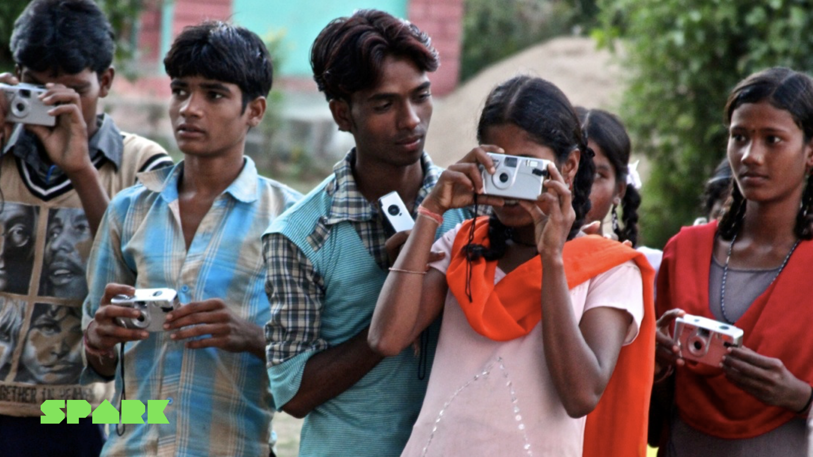
Marcel van Heist probeerde in 2011 een empathy map in te vullen voor de Indiase dorpsbewoner. Hij deed interviews, hield workshops over wat energie voor de dorpsbewoners betekende, alles om maar inzicht te krijgen. Hij deelde wegwerpcamera's uit met de vraag: "fotografeer wat energie voor jou betekent." Hij kreeg foto's terug van de sterrenhemel (de energie van de cosmos) en van mensen die elkaar een hand geven (levensenergie die uitgewisseld wordt). Erg poëtisch, maar onbruikbaar voor het bouwen van een technisch netwerk. De dorpelingen waren vooral gefascineerd door Marcels aanwezigheid zelf; suggesties over abstracte zaken als een "smart grid" resoneerden al helemaal niet. Traditioneel klantonderzoek faalde compleet, wat Marcel uiteindelijk dwong om een totaal andere methode te ontwikkelen die je in hoofdstuk 4 leert kennen.
Marcel van Heist vertelt op een evenement in Eindhoven over hoe Rural Spark begon, inclusief het verhaal van de wegwerpcamera's.
4 · Hoe groot is je markt? TAM, SAM, SOM en de beachhead
Als je je doelgroep helder hebt, moet je vervolgens weten hoe groot die markt is. Investeerders willen het weten ("hoe groot kan dit worden?"), maar ook jij hebt het nodig om realistische keuzes te maken over waar je je tijd en geld op richt. Het standaardmodel hiervoor is TAM/SAM/SOM, een methode die door onder andere Bill Aulet (2013) is gepopulariseerd binnen het ondernemerschapsonderwijs.
- TAM, Total Addressable Market. Dit is de totale markt voor jouw oplossing als je 100% marktaandeel zou hebben en iedereen die de pijn voelt klant zou worden. Dit getal is vaak gigantisch en dient vooral om de bovengrens te schetsen.
- SAM, Serviceable Available Market. Het deel van de TAM dat je realistisch kunt bedienen, gegeven je geografische bereik, je distributiekanalen en regelgeving. Typisch 1 tot 10% van TAM, bereikbaar in 5 tot 10 jaar.
- SOM, Serviceable Obtainable Market. Wat je in 1 tot 3 jaar realistisch kunt veroveren met je huidige middelen: geld, personeel, merkbekendheid, locatie, concurrentie. Dit is het getal waar jouw plan voor het komende jaar op gebaseerd is.
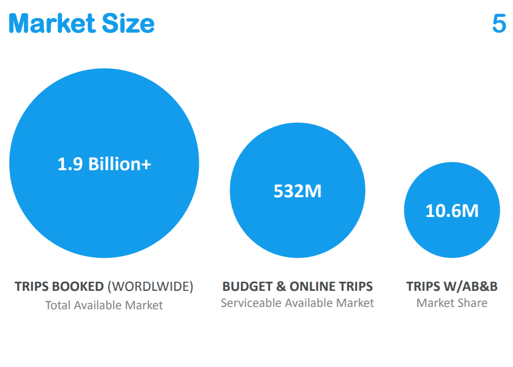
Bij Spark zien deze 3 cirkels er als volgt uit. TAM: 2,1 miljard mensen wereldwijd zonder of met zeer onbetrouwbare toegang tot elektriciteit. SAM: ongeveer 580 miljoen mensen in Sub-Sahara Afrika, waar de markt voor solar home systems jaarlijks met 80 tot 90% groeit en waar overheden ruimte laten voor private spelers. SOM: in 2020 had Spark een concrete sales-pipeline van ongeveer 80.000 kits ter waarde van €14 miljoen, verspreid over 18 distributiepartners in landen als Mozambique, Nigeria, Congo, Zambia en Madagaskar.
Early evangelists en de beachhead market
Wie zijn binnen je SOM de allereerste klanten? Steve Blank (2013) noemt hen early evangelists: klanten met 5 herkenbare kenmerken. (1) Ze beseffen dat ze het probleem hebben. (2) Ze zijn actief op zoek naar een oplossing. (3) Soms hebben ze al een home-grown solution in elkaar geknutseld. (4) Er is budget om het op te lossen. (5) Ze willen anderen over jouw oplossing vertellen, gratis mond-tot-mondreclame. Early evangelists zijn niet alleen je eerste betalende klanten; ze zijn ook je belangrijkste leerbron voor wat je product moet worden.
De plek waar deze early evangelists samenkomen, heet de beachhead market. De term komt uit de militaire strategie van de geallieerde landing in Normandië in 1944: een smal stuk strand veroveren, daar voet aan wal krijgen, en vanuit daar verder oprukken. Geoffrey Moore (2014) en Bill Aulet (2013) hebben het concept in business toegepast.
Een beachhead voldoet aan 6 kenmerken: je waardepropositie past goed op de klant in die markt, er zit geld in de markt, hij is geografisch en logistiek benaderbaar, je bent er onderscheidend, hij geeft toegang tot vervolgmarkten, en hij past bij wat jij persoonlijk leuk en interessant vindt. Eenmaal veroverd, gebruik je de beachhead als springplank naar aangrenzende markten.
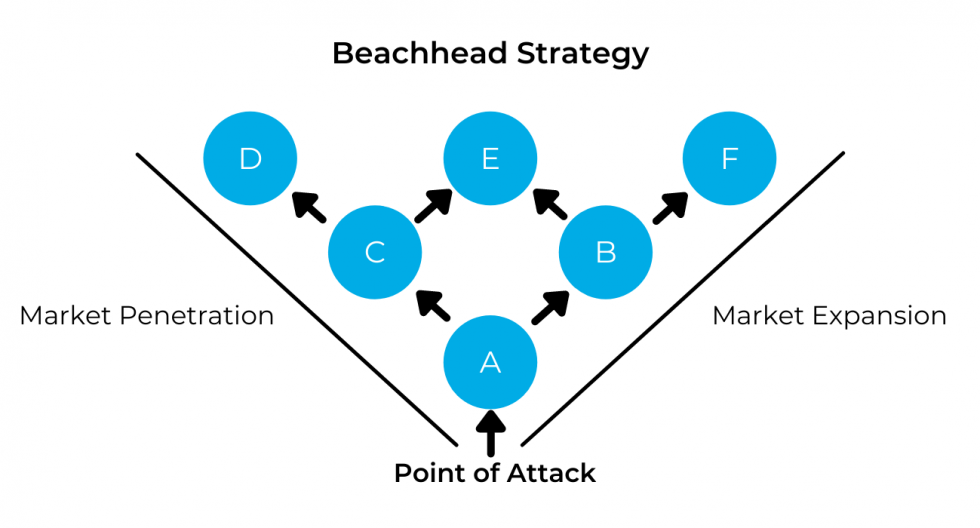
Spark koos India als beachhead in 2011, een land met 400 miljoen mensen zonder elektriciteit, en met de TU/e als bron van het oorspronkelijke smart-grid-onderzoek. In 2018 verschoof de beachhead naar Sub-Sahara Afrika. De eerste echte early evangelist? Een lokale dorpsondernemer die uit zichzelf een handgeschreven administratie startte toen Spark een prototype bij hem achterliet.
5 · Het Value Proposition Canvas
Wanneer je je doelgroep en je markt scherp hebt, ontwerp je wat je voor die klant gaat doen. Het meest gebruikte instrument hiervoor is het Value Proposition Canvas (VPC) van Osterwalder et al. (2014). Het canvas heeft 2 kanten: rechts het klantprofiel en links de waardepropositie. Je vult ze in deze volgorde in.
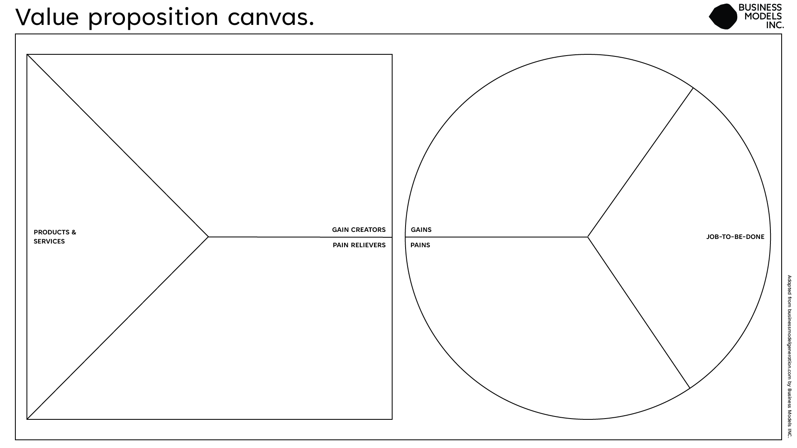
- Customer Jobs (rechts), wat de klant gedaan wil krijgen (functioneel, sociaal, emotioneel, zie §3).
- Pains (rechts), ongewenste uitkomsten, risico's en ergernissen die de klant ervaart.
- Gains (rechts), resultaten en voordelen die de klant nastreeft.
- Products & Services (links), wat je concreet aanbiedt.
- Pain Relievers (links), hoe je aanbod de pains verzacht of wegneemt.
- Gain Creators (links), hoe je aanbod de gewenste gains creëert.
Je bereikt fit als pain relievers en gain creators precies inspelen op de jobs, pains en gains die voor de klant er werkelijk toe doen. Twee soorten fit: probleem-oplossing fit heb je op papier, je hebt bewijs dat klanten waarde hechten aan deze jobs/pains/gains én dat jouw waardepropositie daar antwoord op geeft. Product-markt fit heb je pas in de markt, wanneer klanten daadwerkelijk kopen, gebruiken en aanbevelen. Voor de volledige uitleg en invul-aanpak: zie Businessideeën testen, Deel 1.2 (p. 15-26).
Spark heeft eigenlijk 2 VPCs nodig, één voor elk type stakeholder. De VPC voor de eindgebruiker kent als pains: hoge kerosinekosten, ongezond binnenklimaat, geen licht na zonsondergang, geen mobiele telefoon kunnen opladen. De VPC voor de distributiepartner kent heel andere pains: hoge lokale rente (15%) om voorraad te kunnen financieren, beperkte after-sales-support, geen toegang tot kwalitatief goede solar-producten in bulk. Spark's grootste doorbraak was beseffen dat ze de pains van de distributiepartner te lang hadden onderschat, terwijl die juist de DMU is.
6 · Vooronderzoek: contextschets, afbakening en probleemdefinitie
Vooronderzoek is alles wat je doet voordat je begint met diepgaand onderzoek of testen: oriënteren, lezen, eerste gesprekken voeren, snappen waar je in beland bent. Het combineert deskresearch (literatuur, branche-rapporten, data, jaarverslagen, websites, AI-tools) met soms veldonderzoek (een eerste gesprek met de opdrachtgever, een observatie ter plekke). Het levert 3 producten op die samen je startpunt vormen: een contextschets, een afbakening en een probleemdefinitie.
Een contextschets beschrijft de achtergrond, trends en omgeving waarin het vraagstuk zich afspeelt. Het beantwoordt de "waarom-is-dit-relevant"-vraag: wat gebeurt er in de markt, welke factoren spelen een rol, waarom is dit nu actueel? Een goede contextschets is breed en beschrijvend, je maakt nog geen scherpe inhoudelijke keuzes. Een voorbeeld: "De Nederlandse kledingmarkt staat onder druk door stijgende grondstofprijzen en veranderend consumentengedrag. Volgens [bron] koopt 65% van de consumenten liever duurzaam, maar prijs blijft een belangrijke factor. Online verkoop groeit jaarlijks met 12%, fysieke winkels verliezen aandeel."
Een afbakening doet het tegenovergestelde: hij vernauwt. Hier maak je expliciete keuzes over wat je wél en wat je niet onderzoekt. Een afbakening begint vaak met "Dit onderzoek richt zich uitsluitend op…" en benoemt expliciet de doelgroep, het kanaal, de geografie en de scope. Een goede afbakening volgt logisch uit de contextschets en maakt het werk haalbaar.
De probleemdefinitie is de scherpe formulering van wat je gaat onderzoeken of oplossen. Hij beschrijft het probleem in concrete termen, voor wie het een probleem is en waarom het ertoe doet. Het is geen oplossing in vermomming ("we moeten een betere app bouwen") maar een probleem ("klanten haken af tijdens de eerste 5 schermen van de huidige app").
Een goede probleemdefinitie maakt 3 dingen helder: voor wie het probleem speelt, wat het concreet is, en, vaak vergeten, hoe urgent en actueel het is. Urgentie betekent dat de klant nu, of in afzienbare tijd, de pijn voelt en bereid is iets te ondernemen. Een probleem dat "wel ooit eens irritant" is, levert zelden een kopende klant op. Test je probleemdefinitie daarom altijd op urgentie: is dit een probleem dat iemand nu wil oplossen, en wat is dat oplossen waard?
5 veelgemaakte fouten bij vooronderzoek:
- Te brede context. "Klimaatverandering is een wereldwijd probleem dat alle sectoren raakt." Klopt, maar zegt niets specifieks. Maak het concreet voor jouw casus.
- Onvolledige context of relevantie. "De school wil een nieuwe leeromgeving." Waarom? Voor wie? Op basis waarvan? Zonder onderbouwing is het geen contextschets, maar een mededeling.
- Onduidelijke afbakening. "We onderzoeken hoe de klantervaring verbeterd kan worden." Waar? Voor wie? Welk kanaal? Zo'n afbakening dekt alles en niets.
- Ruwe vooronderzoeksdata dumpen. Een contextschets is geen lijst van alle cijfers die je hebt gevonden. Selecteer wat er werkelijk toe doet en interpreteer.
- Geen link tussen context en afbakening. Als je contextschets gaat over online concurrentie maar je afbakening over parkeerfaciliteiten, mist je werk samenhang. Iedere afbakening moet logisch volgen uit wat je in de contextschets hebt geschetst.
7 · Scherp verwoorden: Mad Lib en "get out of the building"
Aan het einde van een goed klantonderzoek moet je kunnen uitleggen wat je gevonden hebt, kort, scherp en herkenbaar. Een populair instrument daarvoor is de Mad Lib: een zin-met-gaten-formule die je dwingt je waardepropositie in één regel te vatten.
De Mad Lib werkt als een snelle scherpheidstest. Als je hem niet kunt invullen zonder vaagheden ("we doen iets voor mensen die innovatief willen zijn"), dan weet je dat je vooronderzoek nog niet diep genoeg is.
Get out of the building
Geen enkel van de bovenstaande instrumenten, geen empathy map, geen VPC, geen TAM/SAM/SOM, geen Mad Lib, vervangt het belangrijkste principe in dit hoofdstuk: ga eruit, ga praten, ga kijken. Steve Blank (2013) maakte de uitspraak "get out of the building" tot een mantra in het ondernemerschapsonderwijs. Zijn punt is simpel maar hard: de waarheid over je klant zit niet op kantoor, niet in een dataset en niet in ChatGPT, die zit bij de klant zelf. Alleen door letterlijk naar buiten te gaan, te observeren en te luisteren, ontdek je wat je aannames waard zijn.
Spark's eigen rebranding, hoe zelfs een bedrijfsnaam de klanttaal moet spreken. Spark heette oorspronkelijk Rural Spark. Door een westerse bril klonk dat authentiek en ambachtelijk: een fijne positionering voor Nederlandse investeerders.
Maar in Afrika, waar Spark daadwerkelijk verkocht, betekende "rural" iets totaal anders: lagere kwaliteit, achterstand, weinig ambitie. Precies het tegenovergestelde van het merkbeeld dat Spark wilde uitstralen. Bovendien stond het hele frame "wij komen energie brengen aan zielige mensen die hulp nodig hebben" haaks op de realiteit: het waren mensen die, net als iedereen, gewoon een beter leven wilden en energie zagen als praktisch nut, niet als ontwikkelingshulp.
Spark realiseerde zich pas na jaren dat hun eigen naam in de praktijk tegen ze werkte. Met hulp van een marketingbureau werd Rural uiteindelijk geschrapt en bleef alleen Spark over, met een nieuwe positionering: SPARK, Let tomorrow be a Bright Day. Niet meer redden, maar verbinden met aspiratie. Loslaten van het oude logo was lastig, het was tenslotte hun "kindje" waar zij lang aan hadden getrokken, maar het nieuwe positieve frame paste beter bij wat klanten en eindgebruikers daadwerkelijk wilden horen.
Dit verhaal is in zekere zin de meta-les van dit hoofdstuk: zelfs een organisatie die volledig op de klant gericht is, kan blinde vlekken houden over hoe haar eigen keuzes binnen het hoofd van die klant landen. Pas door get out of the building te doen, door te luisteren naar wat distributiepartners en eindgebruikers werkelijk zeiden, kwam de naam-mismatch boven water.
Een stem uit het veld. Malango Washikala, CEO van Spark's distributiepartner Altech Group in DR Congo, vat zijn motivatie zo samen:
I grew up in a small town called Baraka. Up to now Baraka is a completely off-grid town. When I was growing up, one night I was sleeping using a traditional candle, and I kicked it with one of my legs. It fell on my mattress and caught fire. It is through these experiences that we started thinking about how do we contribute to solving this problem of energy poverty. Malango Washikala, CEO Altech Group (DRC)
Dit is wat get out of the building oplevert: een eindgebruiker die het probleem aan den lijve heeft ervaren, weet wat het écht betekent. Geen statistiek kan dat verhaal vervangen.
Veelgemaakte fouten in deze fase (samengevat)
- Verliefd op je eigen product. Je vindt je oplossing zo mooi dat je geen weerstand meer wilt voelen tegen de aanname dat de klant het ook mooi vindt.
- Niet naar buiten durven of willen gaan. Klantonderzoek voelt soms ongemakkelijk; mensen aanspreken vraagt moed. Maar zonder real-life-data raden hoogstens.
- Aannames niet expliciet maken. Wat je niet opschrijft, kun je niet toetsen. Wat je niet toetst, kun je niet weerleggen.
- "Alibigedrag" vertonen. Doorwerken aan andere activiteiten, een MVP bouwen, een logo ontwerpen, een pitchdeck verfijnen, om de moeilijke gesprekken te ontwijken.
- Vragen wat mensen willen in plaats van wat ze doen. Mensen zijn slecht in voorspellen wat ze in de toekomst zullen doen. Vraag liever naar wat ze nu doen en welke pijn ze daarbij ervaren.
- AI-output kritiekloos overnemen. Generatieve AI is een prima sparringpartner voor brainstorm, maar geen vervanger voor eigen onderzoek en bronkritiek. Check altijd met betrouwbare bronnen.
Samenvatting + checklist
Wat moet je na dit hoofdstuk kunnen?
- Begrijpen dat dit hoofdstuk over customer discovery gaat (Steve Blank)
- Onderscheid maken tussen opdracht, probleem en oplossing, en de aannames in een opdracht herkennen
- Verschil tussen een aanname en een hypothese kunnen uitleggen, en hypotheses formuleren in "als/dan"-vorm
- De relevante stakeholders identificeren en plaatsen op een Power/Interest-matrix
- Onderscheiden hoe de DMU werkt in een B2B- en in een B2C-situatie
- Een empathy map invullen voor een klantsegment, inclusief de 3 typen customer jobs
- Een persona toepassen naast een empathy map, en het verschil met een klantsegment kennen
- Een behoefte van een wens onderscheiden in klantanalyse
- De marktomvang inschatten met TAM/SAM/SOM en weten wat early evangelists en een beachhead market zijn
- Een Value Proposition Canvas opstellen en het verschil tussen probleem-oplossing fit en product-markt fit uitleggen
- Een contextschets, een afbakening en een probleemdefinitie schrijven die logisch samenhangen, en daarbij urgentie als toets-criterium hanteren
- Een waardepropositie scherp verwoorden met de Mad Lib formule
- Uitleggen waarom "get out of the building" het belangrijkste principe in deze fase is, en de veelgemaakte fouten herkennen
Oefenvragen voor de kennistoets
22 vragen in MC-vorm, vergelijkbaar met wat je op de toets kunt verwachten. Klik op een vraag om het antwoord met uitleg te zien.
1. Wat is het belangrijkste onderscheid tussen een opdrachtgever en een eindgebruiker?
- De opdrachtgever betaalt voor je werk, de eindgebruiker krijgt het product gratis.
- De opdrachtgever stelt de vraag, de eindgebruiker is de persoon die uiteindelijk met de oplossing werkt, en dit is niet altijd dezelfde persoon.
- De opdrachtgever is altijd een organisatie, de eindgebruiker altijd een individu.
- Er is geen wezenlijk onderscheid; beide termen verwijzen naar de klant.
2. Welke definitie van een aanname past het beste binnen klantonderzoek?
- Een aanname is een feit dat je hebt gevonden in betrouwbare bronnen.
- Een aanname is een hypothese die alleen tijdens een experiment ontstaat.
- Een aanname is iets dat je gelooft maar nog niet hebt gevalideerd; je behandelt het als feit zonder dat te zijn.
- Een aanname is hetzelfde als een aanbeveling van een expert.
3. Wat is een Decision Making Unit (DMU)?
- De afdeling in een bedrijf die innovaties bedenkt.
- De persoon of groep die uiteindelijk beslist of er gekocht wordt, niet altijd de eindgebruiker.
- De externe partij die je waardepropositie beoordeelt.
- Een methode om aannames te valideren met data.
4. Welk van de volgende hoort NIET tot de 6 secties van een empathy map?
- Ziet
- Hoort
- Koopt
- Pijnpunten (Pains)
5. Welke 3 typen customer jobs onderscheidt het Value Proposition Canvas?
- Operationeel, tactisch en strategisch
- Functioneel, sociaal en emotioneel
- Kwalitatief, kwantitatief en visueel
- Bestaand, nieuw en innovatief
6. In het Value Proposition Canvas, wat zijn "pain relievers"?
- De ongewenste uitkomsten die de klant ervaart bij zijn jobs.
- De financiële kosten die de klant maakt voor de oplossing.
- De manier waarop jouw producten en diensten de pains van de klant verzachten of wegnemen.
- De kortingen die je geeft om weerstand te overwinnen.
7. Wat is het verschil tussen probleem-oplossing fit en product-markt fit?
- Probleem-oplossing fit gaat over interne tests, product-markt fit over externe.
- Probleem-oplossing fit is een papieren overeenstemming tussen klantprofiel en waardepropositie; product-markt fit is bewezen door werkelijk klantgedrag in de markt.
- Probleem-oplossing fit gaat over technologie, product-markt fit over marketing.
- Beide termen betekenen hetzelfde, alleen in andere vakgebieden.
8. Wat is de TAM?
- De totale omzet die jouw bedrijf vorig jaar heeft gehaald.
- De totale markt voor jouw oplossing als je 100% marktaandeel zou hebben.
- Het deel van de markt dat je realistisch in 1 tot 3 jaar kunt veroveren.
- De som van de marges op je belangrijkste producten.
9. Welke 5 kenmerken heeft een early evangelist volgens Steve Blank?
- Hoge opleiding, hoog inkomen, in stedelijk gebied, jong, sociaal mediagebruik.
- (1) Erkent het probleem, (2) zoekt actief naar oplossing, (3) heeft soms zelf een workaround, (4) heeft budget, (5) vertelt anderen over jouw oplossing.
- Werkt in een snelgroeiende branche, heeft veel netwerk, accepteert prijsverhogingen.
- Heeft minimaal 3 keer aangekocht en gemiddeld 8+ score op klanttevredenheid.
10. Wat is een beachhead market?
- Een markt waar zonnige voorwaarden voor ondernemerschap heersen.
- De grootste markt waarin je actief bent.
- De eerste smalle markt die je verovert om vanuit daar uit te breiden naar grotere markten.
- Een type marktonderzoek dat aan de kust wordt uitgevoerd.
11. Wat hoort tot de "linkerkant" van het SBMC?
- Klantsegmenten en kanalen
- Waardepropositie en klantrelaties
- Key resources, key activities, key partners en kostenstructuur
- Inkomstenstromen
12. Wat is de belangrijkste oorzaak waardoor startups falen volgens CB Insights?
- Tekort aan financiering (29%)
- Onenigheid binnen het team (23%)
- Te zware concurrentie (19%)
- Er is geen marktbehoefte voor het product (42%)
13. Wat betekent "get out of the building"?
- Verplaats je werkruimte naar een andere locatie om creativiteit te stimuleren.
- Verlaat je kantoor om te valideren bij echte klanten, observeren, luisteren, gesprekken voeren, in plaats van te raden vanaf je bureau.
- Voer een SWOT-analyse uit met externe partijen.
- Houd brainstormsessies in publieke ruimtes.
14. Wat is een contextschets?
- Een visuele weergave van de bedrijfsorganisatie.
- Een beschrijving van de achtergrond, trends en omgeving van een vraagstuk, antwoord op de "waarom-is-dit-relevant"-vraag.
- Een gedetailleerde productspecificatie.
- Een verzameling concurrentievoordelen.
15. Wat is het belangrijkste verschil tussen contextschets en afbakening?
- Een contextschets is kwantitatief, een afbakening kwalitatief.
- Een contextschets schetst de bredere omgeving en relevantie; een afbakening vernauwt wat je wel en wat je niet onderzoekt.
- Een contextschets is voor interne communicatie, een afbakening voor externe.
- Er is geen verschil.
16. Welke van de volgende veelgemaakte fouten bij vooronderzoek is GEEN klassieke valkuil?
- Te brede context
- Onduidelijke afbakening
- Een goed onderbouwde, scherpe probleemdefinitie
- Geen link tussen context en afbakening
17. Welke vakken bevat de Mad Lib formule voor een waardepropositie?
- Naam, missie, visie en strategie.
- Bedrijfsnaam, aanbod, doelgroep, probleem/behoefte en USP (geheim ingrediënt).
- Sterktes, zwaktes, kansen en bedreigingen.
- Product, prijs, plaats en promotie.
18. Wat is volgens de Mom Test-principes een belangrijke regel voor klantinterviews?
- Begin altijd met je eigen oplossing te presenteren, zodat de klant er feedback op kan geven.
- Stel hypothetische vragen zoals "wat zou je doen als…?" om toekomstig gedrag te voorspellen.
- Vraag naar het concrete, huidige gedrag en de pijnpunten die de klant ervaart, niet naar wat hij in de toekomst zou willen.
- Stuur de klant aan met "ja-of-nee"-vragen om snel data te verzamelen.
19. Op een Power/Interest-matrix wil je een stakeholder met veel macht maar weinig belang vooral:
- Negeren, want diens belang is laag.
- "Tevreden houden", want diens macht kan je project blokkeren als die zich gepasseerd voelt.
- Intensief betrekken bij dagelijkse beslissingen.
- Aan een ander overdragen.
20. Wat is de meest valide aanpak voor klantonderzoek volgens dit hoofdstuk?
- ChatGPT vragen om een klantprofiel te genereren, dat profiel als uitgangspunt nemen en daarop verder bouwen.
- Eerst 10 marktrapporten lezen, dan op basis daarvan een waardepropositie ontwerpen.
- Een combinatie van deskresearch én veldonderzoek waarbij je aannames expliciet maakt en toetst in directe interactie met je doelgroep ("get out of the building").
- De voorkeur van de opdrachtgever volgen omdat die de markt het beste kent.
21. Wat is het belangrijkste verschil tussen een persona en een empathy map?
- Een persona is voor B2B, een empathy map voor B2C.
- Een persona is een persoonlijke karakterschets van één concrete (fictieve) klant met naam, leeftijd en gedrag; een empathy map zoomt in op het denken en voelen op één moment.
- Een persona is kwantitatief, een empathy map is kwalitatief.
- Er is geen verschil, beide termen zijn synoniem.
22. Wat onderscheidt een hypothese van een gewone aanname?
- Een hypothese is altijd waar; een aanname kan fout zijn.
- Een hypothese gebruik je alleen in wetenschappelijk onderzoek, niet in ondernemerschap.
- Een hypothese is een aanname die je expliciet hebt geformuleerd op een manier waarop je kunt vaststellen of die wordt bevestigd of weerlegd, bijvoorbeeld in "als/dan"-vorm: "Als we X doen, dan verwachten we Y."
- Een hypothese komt van een expert, een aanname van jezelf.
Toetswijzer voor dit hoofdstuk
Voor de kennistoets moet je de inhoud van dit hoofdstuk kennen: begrippen, modellen, methoden, veelgemaakte fouten en de checklist hierboven. De boekdelen die hierbij aansluiten (Deel 1.2 Geef het idee vorm en Deel 2.1 Hypotheses formuleren) heb je in jaar 1 gehad. Het kan helpen om die kort op te frissen vóór je dit hoofdstuk leest. De overige titels in de bibliografie hieronder staan erbij voor wie zich verder wil verdiepen.
Bronnen
Aanbevolen opfrissing uit jaar 1
- Bland, D. J., & Osterwalder, A. (2020). Businessideeën testen. Management Impact. ISBN 9789462763838. Deel 1.2 Geef het idee vorm (p. 15-26) en Deel 2.1 Hypotheses formuleren (p. 27-40). Online via Avans Boom Portaal of in je eigen exemplaar uit jaar 1.
Verder lezen, voor wie zich verder wil verdiepen
- Aulet, B. (2013). Disciplined entrepreneurship: 24 steps to a successful startup. Wiley.
- Blank, S. (2013). The four steps to the epiphany: Successful strategies for products that win (2e ed.). K&S Ranch.
- CB Insights. (2021). The top 12 reasons startups fail. https://www.cbinsights.com/research/startup-failure-reasons-top/
- Fitzpatrick, R. (2013). The mom test: How to talk to customers and learn if your business is a good idea when everyone is lying to you. Founder Centric.
- Gray, D., Brown, S., & Macanufo, J. (2010). Gamestorming: A playbook for innovators, rulebreakers, and changemakers. O'Reilly.
- Kerkmeijer-van der Peijl, S., & Van Zeeland, N. (2023). Van idee naar start-up: Een praktisch stappenplan naar product-marktfit (2e ed.). Boom. Online beschikbaar via Avans Boom Portaal (Avans-login vereist).
- Moore, G. A. (2014). Crossing the chasm: Marketing and selling disruptive products to mainstream customers (3e ed.). HarperBusiness.
- Osterwalder, A., & Pigneur, Y. (2010). Business model generation. Wiley.
- Osterwalder, A., Pigneur, Y., Bernarda, G., & Smith, A. (2014). Value proposition design: How to create products and services customers want. Wiley.
- Ries, E. (2011). The lean startup. Crown Business.
- Van Heist, M. (2014). Inspiration shot, Hoe Spark begon [Video]. YouTube. https://youtu.be/YIfeEBhwAiQ
- Washikala, M. (Altech Group). (z.d.). In the field, Spark partnership [Video]. YouTube. https://youtu.be/rf-VtMc8dX0
Probleem in kaart brengen
Van symptoom naar oorzaak, doorvragen, observeren en valideren voordat je een oplossing bedenkt.
📖 Vooraf lezen in je boek
Fris in Businessideeën testen (Bland en Osterwalder, 2020) deze stof op voordat je verdergaat:
- Deel 2.1, Hypotheses formuleren (p. 27-40), je probleemaannames scherp opschrijven.
- De wenselijkheidsexperimenten in Deel 3.2, Ontdekken, met name het Klantinterview (p. 106 e.v.) en de Etnografische observatie, hoe je een probleem toetst bij echte mensen.
Deze stof ken je uit jaar 1. Wat hierna in dit hoofdstuk komt (oorzaak-gevolganalyse, de 5-why's, DESTEP, SWOT met confrontatiematrix, en valideren bij je opdrachtgever) bouwt daarop voort.
De vraag die alles op losse schroeven zet
Het is eind 2018, begin 2019. Rural Spark heeft 8 jaar gewerkt aan haar energieoplossing en aan de verkoop ervan in de Afrikaanse markt. De kits draaien in meerdere Afrikaanse landen, er zijn distributiepartners, er zijn verschillende betalende klanten. Toch groeit het niet zoals het moet. Rural Spark besluit deel te nemen aan het Investment Readiness Programma van de Brabantse Ontwikkelingsmaatschappij (BOM). 1 van de eerste vragen die zij krijgen is vernietigend eenvoudig: "Wat doen jullie hier eigenlijk? Als jullie het allemaal weten, waarom ben je hier dan?"
Ik weet niet of het te trots is, maar ook wel te eigenwijs, je denkt dan van: wij zijn hier al jaren mee bezig, we kennen onze markt echt wel. Harmen van Heist, mede-oprichter Spark
Spark dacht dat het probleem duidelijk was: de producten moesten worden aangepast, de prijzen moesten anders en er moest gewoon nog even wat geld bij voor doorontwikkeling. Want ja, klanten vroegen om een grotere batterij, een fellere lamp, een groter zonnepaneel, een andere kleur, en goedkopere kits. Sommige verzoeken pakte Spark op, nieuwe toepassingen werden gezocht en getest. Maar de grote orders bleven uit. "We waren een beetje een marionet van onze klanten," zegt Harmen, "die het op het product gooiden. En we hadden, denk ik, niet helemaal duidelijk wie onze klant was."
BOM stuurde Spark terug naar de tekentafel. Wat volgde, was het meest waardevolle klantonderzoek in de geschiedenis van het bedrijf, en het leverde een inzicht op dat de groei van Spark volledig op zijn kop zette. Dat inzicht staat centraal in dit hoofdstuk. Want het laat precies zien wat probleem in kaart brengen in de praktijk betekent: voorbij het eerste antwoord gaan, totdat je de oorzaak achter de oorzaak vindt.
Waarom dit hoofdstuk?
In sessie 1 heb je geleerd wie je klant is, welke pains en gains die heeft, en hoe je een eerste probleemdefinitie formuleert. Maar die definitie is bijna nooit de definitieve. Klanten beschrijven hun problemen als symptomen. Ze vragen om een grotere batterij. Ze willen een nieuwe website. Ze zeggen dat de klantenservice traag is. Dat zijn klachten, geen oorzaken.
Sessie 2 gaat over de vaardigheid die je daartegen beschermt: systematisch doorvragen en valideren totdat je niet meer twijfelt over wat het echte probleem is. Want een oplossing die alleen het symptoom aanpakt, laat de oorzaak intact, en dat kost uiteindelijk meer tijd en geld dan grondig onderzoek aan de voorkant.
1 · Van symptoom naar oorzaak
Het fundamentele begrippenpaar in dit hoofdstuk is: symptoom versus oorzaak. Een symptoom is de klacht die aan de oppervlakte zichtbaar is, het verschijnsel dat iemand ervaart en rapporteert. Een oorzaak is het onderliggende mechanisme dat het symptoom veroorzaakt. Artsen kennen dit onderscheid goed: iemand met hoofdpijn kan dehydratie hebben, stress, een verstoord slaappatroon of iets ernstiger. De hoofdpijn behandelen lost niets op als je de oorzaak niet kent.
In ondernemerschap en organisatieonderzoek werkt het precies zo. Wanneer een klant zegt "de batterij moet groter", vraag je jezelf af: waarom is dat het probleem? Misschien lopen eindgebruikers sneller door de batterij heen dan ontworpen. Maar waarom? Misschien gebruiken ze de kit intensiever. Of misschien zit de pijn ergens heel anders, iets dat niets met de batterij te maken heeft.
Goed doorvragen is de kernvaardigheid hier. Doorvragen is de techniek waarbij je op elk antwoord van een klant een open vervolgvraag stelt, niet om te bevestigen wat je al denkt, maar om dieper te graven. De meeste mensen stoppen na het eerste "waarom". Goede probleemanalisten stoppen pas als er niets meer te graven valt.
Een hulpframe daarvoor is het onderscheid tussen wat de klant zegt, wat de klant doet en wat de klant ervaart. Klanten zijn goed in zeggen wat ze willen (een grotere batterij). Ze zijn minder goed in het benoemen van wat hen werkelijk dwarszit (financiering die niet rondkomt). En ze zijn het slechtst in het articuleren van de structurele oorzaak van hun probleem (15% rente op de lokale financieringsmarkt). Je taak als onderzoeker is door alle 3 lagen heen te werken.
Spark dacht jarenlang dat distributiepartners een productprobleem hadden, de klachten en verzoeken die je hierboven las wezen allemaal in die richting. Logische klachten, en dus "logische" oplossingen. Maar achter al die klachten zat een patroon dat alleen zichtbaar werd toen Spark daadwerkelijk bij de klant op kantoor ging zitten: distributiepartners waren het gros van hun tijd kwijt aan het ophalen van financiering. Ze wilden wel bestellen bij Spark, maar konden de orders niet financieren. Het "batterij-groter"-verzoek was een symptoom. Het échte probleem zat in de kapitaalmarkt van de klant.
2 · De Mom Test, doorvragen dat werkt
Je kunt alleen van symptoom naar oorzaak komen door het gesprek te zoeken met je klant. Maar klantgesprekken zijn verraderlijk. De meeste mensen willen aardig gevonden worden, ook je klanten. Ze bevestigen je ideeën als je er enthousiast over vertelt. Ze antwoorden "ja, dat zou ik zeker gebruiken" op een toekomstvraag die je eigenlijk niets zegt. Rob Fitzpatrick noemde dit fenomeen in 2013 de "Mom Test": je kunt je moeder niet vragen of je bedrijfsidee goed is, want ze liegt, niet uit kwade wil, maar omdat ze van je houdt.
De Mom Test is een interviewaanpak gebaseerd op 3 principes. Eerste: praat niet over je eigen idee, vraag naar het leven, het werk en de problemen van de ander. Tweede: stel geen toekomstige vragen ("wat zou je doen als...?"), maar vraag naar concreet huidig gedrag ("hoe los je dit nu op?"). Derde: vraag niet naar bevestiging, maar naar specifieke gevallen ("vertel me eens de laatste keer dat dit fout ging"). Deze 3 principes zorgen dat je betrouwbare informatie krijgt in plaats van beleefde instemming (Fitzpatrick, 2013).
Een interview opbouwen
Een goed klantinterview bouw je stap voor stap op. Begin met het formuleren van je aannames, wat denk je dat het probleem is, wie heeft het, hoe erg is het? Schrijf die aannames op voordat je iemand spreekt. Dan weet je later of je aanname bevestigd of weerlegd is. Zet die aannames om in open vragen: vragen die niet met ja of nee te beantwoorden zijn. "Hoe zorg je er nu voor dat...?" "Wat doe je als...?" "Vertel me eens hoe...?"
Maak vervolgens een interviewscript: een gestructureerd document met je vragen in een logische volgorde. Niet om ze robotachtig voor te lezen, maar om overzicht te houden en niet te vergeten wat je wilde weten. Stel je script altijd bij na het eerste interview. Je ontdekt bijna altijd vragen die je vergeten was, en vragen die minder nuttig blijken dan je dacht. Dit noem je een gestructureerd interview, tegenover een ongestructureerd interview waarbij je het gesprek opener houdt en meer volgt waar de ander je naartoe leidt.
Leg ook je gedrag tijdens het interview vast in een paar regels:
- Pitch niet, als je begint te vertellen over je idee, stopt je klant met eerlijk zijn.
- Luister 80%, praat 20%, als jij de meeste woorden maakt, doe je iets verkeerd.
- Vraag door op concrete voorbeelden, als iemand zegt "dat is wel eens een probleem", vraag dan: "Vertel me eens de laatste keer dat dat fout ging."
- Neem op of maak aantekeningen, je onthoudt minder dan je denkt.
- Vraag aan het einde wie je nog meer kunt spreken, warm netwerk bouwen.
Doe minimaal 15 interviews voordat je conclusies trekt. Bij minder dan 15 gesprekken zie je nog geen patroon, dan is het anekdotisch bewijs, geen validatie. Begin kwalitatief (open gesprekken), en gebruik de inzichten daarna als basis voor kwantitatief onderzoek (enquête, data) als je wilt schalen.
Het experiment board
Om bij te houden wat je aannam en wat je werkelijk vond, gebruik je een experiment board. Dat is een eenvoudig canvas met 4 velden: (1) de hypothese (je aanname over het probleem en de doelgroep), (2) het verwachte resultaat (wat je denkt te gaan horen), (3) het werkelijke resultaat (wat je werkelijk hoorde en zag), en (4) de conclusie (bevestigd, weerlegd of bijgesteld). Door je aannames expliciet bij te houden, zie je achteraf precies welke klopten en welke niet.
Spark's business developer nam de interviews af bij meerdere klanten in Afrika. Niet 1 gesprek, meerdere. Het team liep letterlijk mee met de eigenaar van elke distributiepartner, een week op kantoor, de dorpen in. Ze stelden geen vragen over Spark's product. Ze keken hoe de eigenaar zijn dag doorbracht. Wat ze zagen: grote hoeveelheden tijd gingen verloren aan het ophalen van financiering. Niet omdat het ongeorganiseerde bedrijven waren, maar omdat de lokale kredietmarkt hen 15% rente vroeg. "Als je het dan weet, dan weet je het ook wel," zegt Harmen.
3 · Observeren bij de klant, de customer journey
Interviews vertellen je wat klanten zeggen. Observaties vertellen je wat klanten doen. Die 2 lopen niet altijd gelijk. Een klant die zegt "dat hoeft niet zo snel" is misschien iemand die stiekem elke dag opnieuw checkt of er al een update is. Iemand die zegt "dat zou ik nooit gebruiken" kan het na 10 minuten toch handig vinden.
Etnografische observatie is de methode waarbij je de klant observeert in diens eigen context, zonder kunstmatige omgeving of vragenlijst. Je loopt mee. Je kijkt hoe iemand zijn dag doorbrengt. Je stelt vragen bij wat je ziet, maar je dicteert de agenda niet. Met name de discrepantie tussen "zeggen" en "doen" levert waardevolle inzichten op over het echte probleem.
In een B2B-context heet dit een B2B-bezoek-protocol: een gestructureerde aanpak voor een klantbezoek waarbij je combineert: (a) een eerste verkennend gesprek met de eigenaar of manager, (b) observatie van de operatie (hoe loopt het bedrijf dagelijks?), (c) meelooplopen met de mensen die het echte werk doen, en (d) een terugkoppeling aan het einde van het bezoek. Door te combineren in plaats van alleen te vragen, ontdek je wat je in een interview nooit zou horen.
De customer journey map
Een handig instrument om bevindingen van observaties en interviews te structureren is de customer journey map: een visuele weergave van alle stappen die een klant doorloopt, van het eerste contact met jouw organisatie of product tot de laatste interactie. De basiscomponenten van een journey map zijn: de fase (welke stap in het proces?), de touchpoints (wat zijn de contactmomenten?), de emoties (hoe voelt de klant zich op dit punt?), de behoeften (wat heeft de klant hier nodig?) en de pijnpunten (wat gaat hier mis of werkt te traag?).
De waarde van een journey map is niet de kaart zelf, het is het gesprek dat je voert terwijl je hem invult. Wanneer je een journey map samen met een klant opstelt, ontdek je inconsistenties, frustraties en verborgen workarounds: creatieve oplossingen die de klant zelf heeft bedacht voor een probleem dat officieel niet bestaat. Die workarounds zijn goud, ze zijn het bewijs dat een behoefte echt bestaat.
Het Spark-team liep mee met distributiepartners over het hele continent, van kantoor naar dorpen, van verkoopgesprekken naar betalingsrondes. Wat ze zagen: een eigenaar die uren belde om micro-leningen bij lokale banken rond te krijgen voor zijn volgende bestelling. Een eigenaar die zijn ordergroei bewust laag hield omdat grotere orders simpelweg onhaalbaar waren zonder kapitaal. In een journey map zou dit de fase zijn: "na inkoopbeslissing, voor betaling". En het pijnpunt: "financiering niet beschikbaar of te duur om groot te bestellen." Precies het pijnpunt dat Spark's eigen Value Proposition Canvas had gemist.
4 · De 5-why's en het visgraatdiagram
Als je weet dat een probleem bestaat, is de volgende stap: begrijpen waarom het bestaat. 2 methoden staan daar centraal voor: de 5-why's en het visgraatdiagram.
5-why's
De 5-why's is een eenvoudige maar krachtige methode voor oorzaak-gevolg-analyse, ontwikkeld door Taiichi Ohno (1988) bij Toyota als onderdeel van het Toyota Production System. Het idee is simpel: neem een probleem en vraag 5 keer "waarom?" Niet letterlijk 5 keer, soms zijn het er 3, soms 7, maar de discipline van doorvragen totdat je bij de grondoorzaak uitkomt.
Een voorbeeld:
- Probleem: een distributiepartner bestelt geen grotere aantallen kits.
- Waarom?, Omdat hij het niet kan betalen.
- Waarom niet?, Omdat hij geen lening kan afsluiten die groot genoeg is.
- Waarom niet?, Omdat lokale banken hem 15% rente rekenen, waardoor grotere orders onrendabel zijn.
- Waarom?, Omdat er geen toegankelijk exportkrediet-instrument beschikbaar is voor zijn sector.
- Waarom?, Omdat het programma (DGGF) wel bestaat, maar niemand in zijn netwerk er ooit op heeft gewezen.
De oorzaak die overblijft na meerdere stappen is zelden "wij moeten het product verbeteren". Bijna altijd is het iets in de omgeving, het systeem of het gedrag, iets dat met een andere aanpak oplosbaar is dan de voor de hand liggende.
Visgraatdiagram (Ishikawa)
Het visgraatdiagram, ook wel Ishikawa-diagram of oorzaak-gevolg-diagram, is een visuele methode om oorzaken van een probleem systematisch in kaart te brengen. Het diagram dankt zijn naam aan zijn vorm: een "graat" die uitloopt op het probleem (de "kop" van de vis), met takken die de oorzaaicategorieën vormen.
De standaardcategorieën voor een bedrijfsprobleem zijn de 6M's:
- Mens, hebben mensen voldoende kennis, vaardigheden, motivatie?
- Middelen, zijn er genoeg materialen, gereedschappen, technologieën?
- Methoden, hoe worden processen en procedures uitgevoerd?
- Machine, worden er systemen gebruikt die beperkingen hebben?
- Omgeving, zijn er externe factoren (locatie, markt, wetgeving)?
- Management, wordt het probleem beïnvloed door beleid of aansturing?
Je vult het diagram in samen met betrokkenen: iedereen die het probleem van nabij kent, draagt oorzaken aan per categorie. Daarna prioriteer je: welke oorzaken zijn het meest waarschijnlijk en het meest impactvol? Daarop richt je je vervolgonderzoek.
Het verschil met de 5-why's is een kwestie van focus. De 5-why's volgt 1 keten van oorzaken lineair door. Het visgraatdiagram brengt alle mogelijke oorzaken tegelijk in beeld, breed, niet diep. In de praktijk combineer je ze: gebruik het visgraatdiagram om een overzicht te krijgen, gebruik de 5-why's om de meest kansrijke oorzaken dieper uit te werken.
Zou je het visgraatdiagram toepassen op Spark's probleem "orders blijven klein", dan springen bij de categorie Omgeving 2 oorzaken direct op: de hoge lokale rente (structureel marktfalen) en het ontbreken van een toegankelijk exportkrediet-instrument (beleidsmatige factor). Bij Middelen vind je: geen financieringsproduct in Spark's propositie. Bij Methoden: het salesproces richtte zich op het product, niet op de totale businesscase van de klant. Pas als je alle 6 categorieën naast elkaar legt, zie je dat het probleem niet in het product zit maar in de omgeving plus het gat in Spark's propositie.
5 · Omgevingsanalyse: DESTEP
Problemen bestaan nooit in een vacuüm. Ze worden beïnvloed door de omgeving: economische trends, technologische ontwikkelingen, beleid, demografische verschuivingen. Een systematische omgevingsanalyse helpt je de context begrijpen waarin het probleem van je klant speelt, en geeft je aanwijzingen voor factoren die je misschien had gemist.
De meest gebruikte structuur daarvoor is DESTEP, een acroniem voor 6 dimensies (Aguilar, 1967, uitgebreid door latere auteurs):
- D, Demografisch: wie zijn de mensen in je markt? Leeftijdsopbouw, bevolkingsgroei, urbanisatie, opleidingsniveau.
- E, Economisch: wat zijn de economische omstandigheden? Koopkracht, rente, werkgelegenheid, groei of krimp.
- S, Sociaal-cultureel: welke waarden, normen en gedragspatronen spelen een rol? Hoe kijken mensen aan tegen jouw domein?
- T, Technologisch: welke technologie verandert de markt? Welke nieuwe mogelijkheden of risico's brengt dat mee?
- E, Ecologisch: welke milieu- en duurzaamheidsfactoren zijn relevant? Klimaatverandering, grondstoffenschaarste, wetgeving.
- P, Politiek-juridisch: welke wetten, subsidies, beleid of politieke trends beïnvloeden de markt?
In Engelstalige literatuur kom je dezelfde analyse tegen als PESTLE (Political, Economic, Social, Technological, Legal, Environmental), de volgorde en letters zijn anders, de inhoud is vrijwel identiek. Gebruik wat in jouw context het meest gangbaar is.
Een DESTEP-analyse is geen doel op zich. Je gebruikt hem als input voor je probleemanalyse: welke externe factoren verklaren of versterken het probleem dat je ziet? En als input voor je SWOT-analyse in de volgende paragraaf: de externe bevindingen van DESTEP worden kansen en bedreigingen in de SWOT.
Had Spark in 2018-2019 een DESTEP-analyse gedaan voor haar distributiepartners in Sub-Sahara Afrika, dan had minstens 1 dimensie direct de vinger op de wond gelegd. Bij Economisch: lokale rente van 15% maakt externe financiering voor kleine ondernemers prohibitief. Bij Politiek-juridisch: het Dutch Good Growth Fund (DGGF), een programma van het Ministerie van Buitenlandse Zaken, uitgevoerd door exportkredietverzekeraar Atradius, biedt exportkrediet aan Nederlandse bedrijven voor precies dit type markt. Bij Technologisch: mobiel geld (M-Pesa en vergelijkbare platforms) maakt betalen in termijnen via PayGo steeds haalbaarder voor eindgebruikers in Afrika. Al die factoren waren beschikbaar in openbare data. Maar je vindt ze alleen als je actief de omgeving analyseert in plaats van te wachten totdat een klant er toevallig over begint.
6 · SWOT en confrontatiematrix
Als je je omgevingsanalyse (DESTEP) en je klantgesprekken op een rij hebt, combineer je ze in een SWOT-analyse. SWOT staat voor Strengths (sterkten), Weaknesses (zwakten), Opportunities (kansen) en Threats (bedreigingen). De methode is ontwikkeld door Albert Humphrey aan de Stanford Research Institute in de jaren zestig (Humphrey, 2005).
Het onderscheid is cruciaal: sterkten en zwakten zijn intern, ze gaan over jouw organisatie, team of propositie. Kansen en bedreigingen zijn extern, ze gaan over de markt, de omgeving, de concurrentie, het beleid.
Van SWOT naar confrontatiematrix
Een ingevulde SWOT is pas nuttig als je de factoren met elkaar confronteert. De confrontatiematrix (ook: TOWS-matrix) is de methode daarvoor, ontwikkeld door Heinz Weihrich (1982). Je koppelt de 4 kwadranten aan elkaar om strategische opties te genereren:
- SO, Groeistrategie: hoe gebruik je je sterkten om kansen te benutten?
- ST, Verdedigingsstrategie: hoe gebruik je je sterkten om bedreigingen af te weren?
- WO, Herstrategie: hoe gebruik je externe kansen om je zwakten te compenseren?
- WT, Overlevingsstrategie: hoe minimaliseer je schade door de combinatie van zwakten én bedreigingen?
De waarde van de confrontatiematrix zit in de kruising. Een SWOT geeft een inventarisatie; de confrontatiematrix geeft strategische richting. Welke SO-combinatie biedt de grootste kans? Welke WT-combinatie is het grootste risico? De antwoorden sturen je probleemstelling aan: ze helpen je kiezen welk probleem het belangrijkst is om op te lossen.
Vul de SWOT en confrontatiematrix nooit alleen in. Betrek altijd de opdrachtgever bij het invullen van de interne factoren, die kent de organisatie van binnen. Gebruik je eigen onderzoek (DESTEP, klantgesprekken) voor de externe factoren. Zo is de analyse gedeeld eigendom in plaats van een extern advies dat mensen weerstand geeft.
Spark's SWOT in 2018-2019 laat zien hoe krachtig de confrontatiematrix is. Sterkte: een volledig ecosysteem (kit + software + service), niet alleen een product. Zwakte: geen financieringsproduct voor de distributiepartner. Kans: het DGGF-programma van de Nederlandse overheid biedt goedkoop exportkrediet. Bedreiging: lokale concurrenten met goedkopere kits die alleen het product leveren. De WO-kruising (zwakte + kans) wijst rechtstreeks naar de oplossing die Spark uiteindelijk koos: het Access to Finance-programma. Gebruik de sterkte (ecosysteem + Nederlandse netwerken) om de kans te benutten (DGGF), en werk daarmee de zwakte weg (geen klantfinanciering).
7 · De gevalideerde probleemstelling
Je hebt nu 5 instrumenten ingezet: interviews (Mom Test), observatie bij de klant (etnografisch + journey map), oorzaakanalyse (5-why's + visgraat), omgevingsanalyse (DESTEP) en strategische weging (SWOT + confrontatiematrix). Dat is de methodische gereedschapskist van sessie 2. Nu is het tijd om alles samen te brengen in 1 product: de gevalideerde probleemstelling.
Een gevalideerde probleemstelling verschilt van de probleemdefinitie uit sessie 1 op 1 cruciaal punt: hij is gebaseerd op bewijs uit meerdere bronnen. Je hebt het probleem gehoord in klantgesprekken, gezien in observaties, bevestigd via de 5-why's, en begrepen in de context van de omgeving. Niet 1 klant zei het, meerdere klanten vertoonden hetzelfde patroon.
Een sterke gevalideerde probleemstelling bevat 3 elementen:
- Het probleem, wat is het precies, in concrete termen?
- Voor wie, voor welke specifieke doelgroep speelt het, en in welke context?
- Het bewijs, welke observaties, citaten of data ondersteunen dit?
Een gevalideerde probleemstelling is iteratief. Dat betekent: hij verandert terwijl je onderzoekt. Bijna elke sessie 2 begint met een probleemdefinitie die je in sessie 1 hebt opgesteld, en eindigt met een scherper, beter gevalideerde versie van die definitie. Dat is geen falen, dat is het systeem dat werkt. Wie zijn probleemstelling nooit bijstelt, onderzoekt niet; die bevestigt.
Het kwartje bij Spark viel niet in 1 moment. De business developer bracht de interviewresultaten terug, maar pas toen het team ze inwerkte in de pitch voor het BOM-programma, begon het patroon te landen. "Toen we het even uitwerkten en op papier zetten, realiseerden we ons ineens: wacht, hier moet iets mee," vertelt Harmen. Op hetzelfde moment raakten ze in gesprek met One Planet Crowd, die hen wees op het DGGF-programma van de overheid. Later volgde een gesprek met exportkredietverzekeraar Atradius over de concrete uitvoering. In Tilburg, op kantoor, viel alles op zijn plek.
De gevalideerde probleemstelling van Spark luidde daarna zoiets als: "Onze distributiepartners in Sub-Sahara Afrika kunnen geen grotere orders plaatsen omdat ze geen toegang hebben tot betaalbare financiering, de lokale rente van 15% maakt groei economisch niet haalbaar. Dit patroon is bevestigd bij 8 tot 10 klanten in verschillende landen." Dat is een probleemstelling om op te handelen. En dat deden ze.
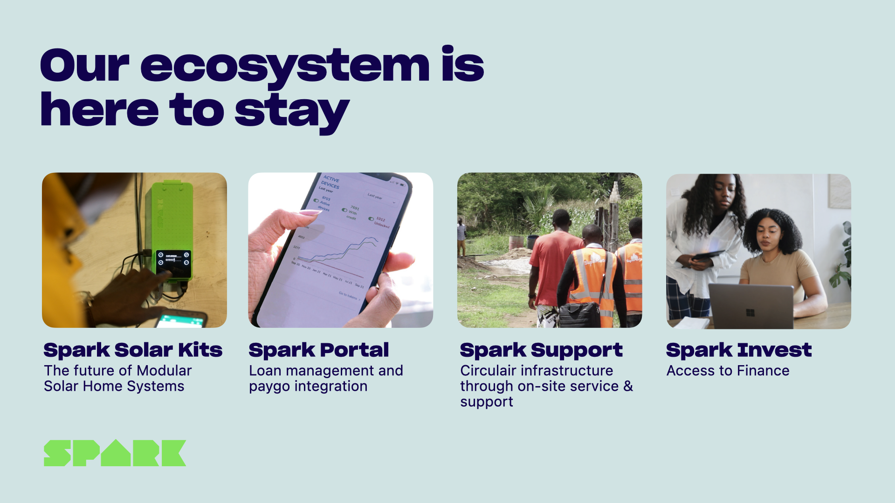
Pepijn Herman (BOM) en Harmen van Heist vertellen hoe de investment readiness-vraag leidde tot de klantinterviews en het Access to Finance-inzicht, het keerpunt in Spark's groei.
Externe stem, het BOM-perspectief. Wil je het verhaal van de andere kant horen? Lees het bericht dat de BOM bij de investering schreef:
bom.nl, "Rural Spark verovert Afrika met 3,5 miljoen groeikapitaal" (11 november 2020). Het artikel vat het kerninzicht zo samen: door echt beter te kijken naar de lokale distributiepartijen (de directe klant van Spark, een soort tussenhandel met toegang tot de landelijke gebieden) werd duidelijk dat zij het product heel graag wilden verkopen, maar simpelweg geen geld hadden.
Veelgemaakte fouten in deze fase (samengevat)
- Het symptoom oplossen, niet de oorzaak. De batterij groter maken terwijl het échte probleem financiering is. Vraag altijd: is dit de oorzaak, of is dit wat iemand ervan ziet?
- Te weinig interviews. 1 of 2 gesprekken zijn geen validatie, ze zijn een aanleiding om verder te onderzoeken. Bij minder dan 15 gesprekken zie je nog geen patroon.
- Alleen vragen, niet observeren. Mensen zijn slecht in vertellen wat ze doen, ze vertellen wat ze denken dat ze doen. Observeer ook: meelooplopen, de customer journey map invullen samen met de klant.
- SWOT invullen vóór klantonderzoek. Een SWOT zonder bewijs is een mening. Vul hem altijd in nadat je gesprekken hebt gevoerd en omgevingsanalyse hebt gedaan.
- DESTEP als doel, niet als middel. Een DESTEP-tabel is waardeloos als je er geen conclusies uit trekt. Koppel altijd: welke externe factoren verklaren het probleem van je klant?
- De confrontatiematrix vergeten. Een ingevulde SWOT zonder confrontatiematrix geeft geen richting. Koppel de kwadranten aan elkaar om te zien welke combinaties strategisch het meest waardevol zijn.
- Bevestiging zoeken in plaats van weerlegging. Stel vragen die je aanname kunnen ontkrachten. Als al je interviews dezelfde kant op wijzen, vraag je dan af: heb ik ook gesproken met mensen die er anders over denken?
In deze fase kun je je interviews en eerste analyses laten ondersteunen door AI:
- Interviewhulp: Ontdek je markt, stel je interviewscript samen, doordenk aannames, verwerk ruwe interview-notities.
- Value Proposition Validator, toets of de richting van je oplossing aansluit bij het gevalideerde probleem.
Belangrijk: deze tools zijn hulpmiddelen, geen vervangers van echt klantcontact. Gebruik ze om sneller te brainstormen of je gedachten te scherpen, niet om "get out of the building" over te slaan.
Samenvatting + checklist
Wat moet je na dit hoofdstuk kunnen?
- Het verschil uitleggen tussen een symptoom en een oorzaak, en waarom dat onderscheid er zo toe doet
- De 3 principes van de Mom Test toepassen bij het ontwerpen van een klantinterview
- Een interviewscript opbouwen met open vragen en doorvraagtechnieken
- Het verschil beschrijven tussen een gestructureerd en een ongestructureerd interview
- Uitleggen waarom je minimaal 15 interviews nodig hebt voordat je een patroon kunt vaststellen
- Een experiment board invullen met hypothese, verwacht resultaat, werkelijk resultaat en conclusie
- Uitleggen wat etnografische observatie is en wanneer je die inzet naast interviews
- Een customer journey map opbouwen met de basiscomponenten (fase, touchpoints, emoties, behoeften, pijnpunten)
- De 5-why's toepassen om een oorzaak-gevolg-keten op te stellen voor een concreet probleem
- Een visgraatdiagram opzetten met de 6M-categorieën (Mens, Middelen, Methoden, Machine, Omgeving, Management)
- Het verschil benoemen tussen de 5-why's (lineair, diep) en het visgraatdiagram (breed, overzicht)
- De 6 DESTEP-dimensies benoemen en uitleggen waarvoor je de analyse gebruikt
- Het verschil beschrijven tussen DESTEP en PESTLE
- Een SWOT-matrix invullen met het intern/extern-onderscheid
- De 4 strategische keuzes in een confrontatiematrix benoemen (SO, ST, WO, WT) en toepassen
- Een gevalideerde probleemstelling schrijven die het probleem, de doelgroep en het bewijs bevat
- Uitleggen waarom een probleemstelling iteratief is en bijgesteld mag worden
Oefenvragen voor de kennistoets
20 vragen in MC-vorm, vergelijkbaar met wat je op de toets kunt verwachten. Klik op een vraag om het antwoord met uitleg te zien.
1. Wat is het verschil tussen een symptoom en een oorzaak in probleemanalyse?
- Een symptoom is altijd zichtbaar, een oorzaak is altijd verborgen.
- Een symptoom is de zichtbare klacht of het verschijnsel; een oorzaak is het onderliggende mechanisme dat het symptoom veroorzaakt.
- Een symptoom beschrijft een interne factor, een oorzaak een externe factor.
- Er is geen wezenlijk verschil, beide termen verwijzen naar het probleem.
2. Welke 3 principes beschrijft Fitzpatrick in de Mom Test?
- Praat uitgebreid over je idee, vraag om eerlijke kritiek, noteer alle opmerkingen.
- Praat niet over je idee, stel geen toekomstige vragen, vraag naar concreet huidig gedrag.
- Begin altijd met een pitch, sluit af met een hypothetische vraag, vraag om een aanbeveling.
- Doe minimaal 5 interviews, gebruik een enquête, analyseer de data kwantitatief.
3. Waarom is "wat zou je doen als dit product er was?" een slechte interviewvraag?
- Het is te lang en kost te veel tijd in een interview.
- Mensen zijn slecht in het voorspellen van toekomstig gedrag en willen je doorgaans aardig vinden, waardoor ze een antwoord geven dat je blij maakt in plaats van de realiteit weerspiegelt.
- De vraag is te persoonlijk en kan weerstand oproepen bij de respondent.
- Het is een gesloten vraag en levert dus geen bruikbare informatie op.
4. Waarvoor gebruik je een experiment board?
- Om je prototype te visualiseren voor de opdrachtgever.
- Om je hypothese, verwacht resultaat, werkelijk resultaat en conclusie bij te houden, zodat je achteraf kunt zien welke aannames klopten.
- Om een overzicht te maken van alle experimenten die concurrenten in jouw branche uitvoeren.
- Om de agenda van je testweek in te plannen.
5. Hoeveel kwalitatieve interviews zijn minimaal nodig voordat je een patroon kunt vaststellen?
- 5, want meer zijn er niet altijd beschikbaar.
- 10, want dat is statistisch voldoende voor een eerste conclusie.
- 15, want bij minder dan 15 kwalitatieve gesprekken zie je doorgaans nog geen indicatief representatief patroon.
- 50, want kwalitatief onderzoek vereist grote steekproeven voor betrouwbare conclusies.
6. Wat is etnografische observatie?
- Een interview waarbij je de klant vraagt om zijn eigen werkwijze te beschrijven.
- Een methode waarbij je de klant observeert in diens eigen context, meelooplopen, shadowing, zonder kunstmatige omgeving of vragenlijst.
- Een laboratoriumtest waarbij je klanten een prototype laat gebruiken onder gecontroleerde omstandigheden.
- Het analyseren van online gedrag (clicks, browserpaden) van klanten.
7. Welke basiscomponenten heeft een customer journey map?
- Persona, segment, value proposition en kanaal.
- Fase, touchpoints, emoties, behoeften en pijnpunten.
- Inkomsten, kosten, partners en activiteiten.
- Probleem, hypothese, experiment en resultaat.
8. Wat is het kernidee achter de 5-why's methode?
- Je vraagt 5 verschillende klanten naar hun mening, en neemt de meest voorkomende als conclusie.
- Je vraagt meerdere keren "waarom?" op een probleem om stap voor stap bij de grondoorzaak uit te komen.
- Je stelt een lijst op van 5 mogelijke oorzaken en rangschikt ze op waarschijnlijkheid.
- Je verdeelt het team in 5 groepen die elk een oorzaak onderzoeken.
9. Welke 6 categorieën (6M's) kent een visgraatdiagram?
- Merk, Markt, Middelen, Methoden, Missie, Medewerkers.
- Mens, Middelen, Methoden, Machine, Omgeving, Management.
- Motivatie, Meetpunten, Milieu, Mechanismes, Modellen, Marketing.
- Macht, Medium, Mogelijkheden, Maatregelen, Meerwaarde, Medewerkers.
10. Wat is het belangrijkste verschil tussen de 5-why's en het visgraatdiagram?
- De 5-why's is geschikt voor technische problemen, het visgraat voor organisatorische problemen.
- De 5-why's volgt 1 keten lineair en diep; het visgraatdiagram brengt alle mogelijke oorzaken breed en overzichtelijk in kaart.
- De 5-why's is kwalitatief, het visgraatdiagram is kwantitatief.
- Er is geen wezenlijk verschil, beide methoden leveren hetzelfde resultaat op.
11. Waar staat de D in DESTEP voor?
- Digitaal
- Demografisch
- Dynamisch
- Duurzaam
12. Welk doel heeft een DESTEP-analyse in het kader van probleemanalyse?
- Een DESTEP is bedoeld om de strategische positie van een organisatie te beschrijven, los van een specifiek klantprobleem.
- Een DESTEP brengt externe omgevingsfactoren in kaart die het klantprobleem verklaren of versterken, en levert input voor de kansen en bedreigingen in de SWOT.
- Een DESTEP vervangt het klantinterview omdat je de omgeving analytisch kunt reconstrueren.
- Een DESTEP is uitsluitend bedoeld voor financiële analyses.
13. Wat zijn sterkten en zwakten in een SWOT-analyse?
- Externe factoren die je kunt beïnvloeden.
- Interne factoren, over de eigen organisatie, het team of de propositie.
- Factoren die uitsluitend op financieel vlak spelen.
- Toekomstige kansen en risico's.
14. Wat is de WO-strategie in een confrontatiematrix?
- Gebruik je sterkten om externe kansen te benutten.
- Gebruik externe kansen om je zwakten te compenseren of weg te werken.
- Minimaliseer schade door de combinatie van zwakten en bedreigingen.
- Gebruik je sterkten om externe bedreigingen af te weren.
15. Wanneer is een probleemstelling "gevalideerd"?
- Als de opdrachtgever de probleemstelling heeft goedgekeurd.
- Als je hem hebt geformuleerd op basis van uitgebreide deskresearch.
- Als het probleem, de doelgroep én het bewijs erin zijn opgenomen, en het patroon bij meerdere representatieve stakeholders is bevestigd.
- Als de probleemstelling door de docent is goedgekeurd.
16. Wat is het verschil tussen een gestructureerd en een ongestructureerd interview?
- Een gestructureerd interview is altijd kwantitatief, een ongestructureerd interview altijd kwalitatief.
- Een gestructureerd interview gebruikt een vastgesteld script en vaste vraagvolgorde voor vergelijkbaarheid; een ongestructureerd interview volgt het gesprek en geeft meer ruimte aan de respondent.
- Een gestructureerd interview vereist altijd een opname, een ongestructureerd interview niet.
- Er is geen wezenlijk verschil, de keuze is puur een kwestie van voorkeur.
17. Welk onderdeel van de confrontatiematrix richt zich op overleven bij tegenslagen?
- SO, Groeistrategie
- ST, Verdedigingsstrategie
- WO, Herstrategie
- WT, Overlevingsstrategie
18. Waarom is het belangrijk om de SWOT samen met de opdrachtgever in te vullen?
- Omdat de opdrachtgever anders de uitkomst niet begrijpt.
- Omdat de interne factoren (sterkten en zwakten) de kennis vereisen van iemand die de organisatie van binnen kent, kennis die jij als buitenstaander niet hebt.
- Omdat de SWOT alleen geldig is als alle partijen eronder getekend hebben.
- Omdat een SWOT altijd in groepen moet worden ingevuld voor een valide resultaat.
19. Wat onderscheidt een gevalideerde probleemstelling van een gewone probleemdefinitie?
- Een gevalideerde probleemstelling is altijd korter dan een probleemdefinitie.
- Een gevalideerde probleemstelling bevat bewijs uit meerdere bronnen of klantgesprekken dat het probleem daadwerkelijk bestaat bij een representatieve groep, niet alleen de perceptie van 1 persoon.
- Een gevalideerde probleemstelling mag nooit meer worden bijgesteld.
- Een probleemdefinitie is kwalitatief, een gevalideerde probleemstelling is kwantitatief.
20. Wat is de juiste volgorde van analysemethoden in sessie 2?
- SWOT → DESTEP → klantinterviews → 5-why's → gevalideerde probleemstelling.
- Klantinterviews + observatie → 5-why's / visgraatdiagram → DESTEP → SWOT + confrontatiematrix → gevalideerde probleemstelling.
- Gevalideerde probleemstelling → klantinterviews → SWOT → DESTEP → 5-why's.
- DESTEP → SWOT → 5-why's → klantinterviews → gevalideerde probleemstelling.
Toetswijzer voor dit hoofdstuk
Voor de kennistoets moet je de inhoud van dit hoofdstuk kennen: begrippen, methoden, modellen, veelgemaakte fouten en de checklist hierboven. De boekdelen die hierbij aansluiten (Deel 2.1 Hypotheses formuleren en de wenselijkheidsexperimenten uit Deel 3.2) heb je in jaar 1 gehad. Het kan helpen om die kort op te frissen vóór je dit hoofdstuk leest. De overige titels in de bibliografie hieronder staan erbij voor wie zich verder wil verdiepen.
Bronnen
Aanbevolen opfrissing uit jaar 1
- Bland, D. J., & Osterwalder, A. (2020). Businessideeën testen. Management Impact. ISBN 9789462763838. Lees: Deel 2.1 Hypotheses formuleren (p. 27-40) en de wenselijkheidsexperimenten in Deel 3.2 Ontdekken (o.a. Klantinterview p. 106 e.v., Etnografische observatie). Online via Avans Boom Portaal of in je eigen exemplaar uit jaar 1.
Verder lezen, voor wie zich verder wil verdiepen
- Aguilar, F. J. (1967). Scanning the business environment. Macmillan. (Oorsprong van de DESTEP/PESTLE-analyse)
- Fitzpatrick, R. (2013). The mom test: How to talk to customers and learn if your business is a good idea when everyone is lying to you. Founder Centric.
- Humphrey, A. S. (2005). SWOT analysis for management consulting. SRI Alumni Newsletter. (Oorsprong van de SWOT-methode)
- Ohno, T. (1988). Toyota production system: Beyond large-scale production. Productivity Press. (Oorsprong van de 5-why's)
- Van Heist, H. (2019). BOM-investering & klantinterviews, Rural Spark [Video]. YouTube. https://youtu.be/KNOut-mkEJ4
- Weihrich, H. (1982). The TOWS matrix: A tool for situational analysis. Long Range Planning, 15(2), 54, 66. (Oorsprong van de confrontatiematrix)
- Workshop Interviews opstellen, afnemen en analyseren. (2025/26). [PowerPoint]. Avans Hogeschool.
- Workshop Probleem visualiseren en impactanalyse (Janne). (2025/26). [PowerPoint]. Avans Hogeschool.
Oplossingen bedenken
Van gevalideerd probleem naar kansrijke oplossingsrichting, breed denken, dan scherp kiezen.
📖 Vooraf lezen in je boek
Businessideeën testen (Bland en Osterwalder, 2020) gaat vooral over het testen van ideeën, niet over het bedenken ervan. Voor dit hoofdstuk is er daarom één korte opfrisser:
- Deel 1.2, Geef het idee vorm (p. 15-26), hoe je een oplossing koppelt aan je waardepropositie.
De rest van dit hoofdstuk (breed divergeren, brainstormtechnieken en scherp convergeren naar een kansrijke oplossing) staat niet in het boek. Die stof vind je hier in de reader.
Wat als de oplossing niet zit waar je hem verwacht?
Eind 2019 wist het Spark-team eindelijk wat het echte probleem was. Niet een te kleine batterij of een te dure kit, maar het ontbreken van betaalbare financiering voor hun distributiepartners in Afrika. Lokale rente van 15% maakte grotere orders onhaalbaar, hoe goed het product ook was.
En nu? Nu begon de volgende vraag: wat gaan jullie eraan doen?
De meest voor de hand liggende reactie: doorverwijzen naar een bank. Of wachten totdat de markt zichzelf oplost. Of concluderen: "Dat is niet ons probleem, wij maken kits, geen leningen." Maar Harmen van Heist, mede-oprichter van Spark, legt het uit met een analogie die je bijblijft:
Kijk naar Audi. Audi maakt auto's, maar zorgt tegelijkertijd dat je 'm kunt leasen. Ze lossen niet alleen het rij-probleem op, ze lossen ook het betalingsprobleem op, zodat je überhaupt kunt kopen. Datzelfde moesten wij doen. Wij lossen het energieprobleem op, maar als onze klant het niet kan betalen, lossen we het niet echt op. Harmen van Heist, mede-oprichter Spark
Spark voegde een 4e element toe aan haar propositie: Access to Finance. Via het Dutch Good Growth Fund (DGGF) van de Nederlandse overheid, uitgevoerd door exportkredietverzekeraar Atradius, konden distributiepartners voortaan lenen tegen Nederlandse exportkrediet in plaats van lokale tarieven. De oplossing voor het energieprobleem was plotseling ook een financiële dienst.
Dit hoofdstuk gaat over die stap: van gevalideerd probleem naar een oplossingsrichting die écht werkt. Niet de eerste ingeving, niet de meest voor de hand liggende aanpak, maar een doordacht proces van breed denken en dan scherp kiezen.
Waarom dit hoofdstuk?
Als je weet welk probleem je oplost (sessie 1) en je hebt dat probleem gevalideerd (sessie 2), loop je een klassiek risico: je springt meteen naar de eerste oplossing die in je hoofd opkomt. Dat is menselijk. Maar die eerste oplossing is zelden de beste. Onderzoek van IDEO (2015) laat zien dat teams die langer in de ideëgeneratiefase blijven, en meer alternatieven produceren, uiteindelijk betere en verrassender oplossingen kiezen dan teams die al na het 1e of 2e idee stoppen.
Het gaat in deze sessie niet om uitvoeren. Het gaat om het vergroten van je oplossingsruimte, en dan terugbrengen naar 1 richting die de moeite waard is om verder te ontwikkelen. Die beweging heet divergeren en convergeren, en het is de kern van creatief probleemoplossen.
1 · Divergeren en convergeren, het Double Diamond
Creatief probleemoplossen volgt een patroon dat je overal terugziet: eerst divergeren, zo veel mogelijk ideeën genereren, zonder oordeel, dan convergeren, selecteren, combineren, beslissen. Divergeren vraagt dat je je interne criticus tijdelijk op pauze zet. Elke evaluatie op het moment van ideeëngeneratie doodt ideeën die later wél waardevol hadden kunnen zijn.
Dit patroon is visueel gemaakt in het Double Diamond-model, ontwikkeld door de Design Council (2005). Het model toont 2 diamanten die elk hetzelfde patroon volgen:
- De eerste diamant beslaat sessie 1 en 2: je begint breed (ontdekken: wie is de klant, wat zijn alle mogelijke problemen?) en vernauwt dan (definiëren: welk probleem ga je oplossen?).
- De tweede diamant beslaat sessie 3 tot 6: je begint opnieuw breed (ontwikkelen: welke oplossingen zijn er denkbaar?) en vernauwt dan weer (leveren: welke oplossing ga je bouwen en testen?).
Het cruciale inzicht van het Double Diamond is dat elke fase z'n eigen modus vraagt. In de brede fase (divergeren) werkt een analytische, kritische houding tegen je. In de smalle fase (convergeren) werkt een te creatieve, open houding juist tégen je. De meeste teams maken de fout dat ze te vroeg convergeren, te snel kiezen, of dat ze nooit stoppen met divergeren. De kunst is het ritme: breed, smal, breed, smal.
De double-diamond-beweging is in Spark's oplossingsfase van eind 2018/2019 letterlijk zichtbaar. Na de klantinterviews (einde eerste diamant: gevalideerd probleem = financiering) stond Spark voor een open ruimte: hoe lossen we dit op? Meerdere opties waren denkbaar, doorverwijzen naar banken, lobbyen voor betere lokale rentetarieven, alleen PayGo aanbieden, of zelf financiering organiseren. Via een gesprek met One Planet Crowd kwamen DGGF en Atradius in beeld. Het convergentiemoment was dus niet alleen "kiezen wat we wél doen", maar ook actief richtingen schrappen die de kernmissie zouden verwateren.
2 · Van probleem naar oplossingsruimte, "How Might We"
De overgang van analysefase naar ideëgeneratie is niet vanzelfsprekend. Je hebt net gewerkt aan feiten, patronen, grondoorzaken, en nu moet je ineens creatief zijn. Die schakelaar zet je aan met 1 simpele vraagvorm: "How Might We...?" (HMW), een techniek die door IDEO en design thinking-praktijken breed is ingezet.
Een HMW-vraag formuleert je gevalideerde probleemstelling om naar een uitnodigende, open vraagvorm:
- Probleem: distributiepartners hebben geen toegang tot betaalbare financiering.
- HMW: Hoe zouden we het voor distributiepartners makkelijker kunnen maken om grote orders te financieren?
De 3 woorden zijn bewust gekozen. "How" veronderstelt dat er een oplossing is. "Might" geeft aan dat het een verkenning is, geen verplichting. "We" maakt het een teamvraag, niet een individuele uitdaging. Een goede HMW-vraag is niet te breed ("hoe verbeteren we de wereld?") en niet te smal ("hoe verlagen we de rente met 3 procent?"). Hij nodigt uit tot meerdere, verschillende antwoorden.
Als je je gevalideerde probleemstelling hebt, is je eerste taak in sessie 3: schrijf er 3 tot 5 HMW-vragen bij vanuit verschillende invalshoeken. Elke vraag opent een andere oplossingsruimte, en daarmee een andere categorie van mogelijke oplossingen.
Vanuit Spark's gevalideerde probleem zouden meerdere HMW-vragen mogelijk zijn geweest. "Hoe zouden we ons product goedkoper kunnen maken?", dat opent een productoptimalisatie-richting. "Hoe zouden we distributiepartners toegang kunnen geven tot betaalbaar kapitaal?", dat opent de Access to Finance-richting. "Hoe zouden we directe eindgebruikersverkoop kunnen opzetten zonder distributiepartner?", dat opent een kanaalinnovatierichting. Elk van die vragen leidt naar heel andere oplossingen. Door ze naast elkaar te leggen, zie je welke richting het meest kansrijk is, vóórdat je er één kiest.
3 · Brainstormtechnieken, SCAMPER, brainwriting en meer
Nu de oplossingsruimte is opengesteld, is het tijd voor daadwerkelijke ideeëngeneratie. Er zijn tientallen technieken beschikbaar. 3 ervan zijn bijzonder praktisch inzetbaar in de fase van oplossingen bedenken.
Klassiek brainstormen
De bekendste methode: een groep genereert samen zo veel mogelijk ideeën in een vastgestelde tijd, zonder oordeel. De basisregels van Alex Osborn (1953), de bedenker van de methode, zijn nog steeds geldig:
- Oordeel niet en stel geen kritiek tijdens de sessie.
- Kwantiteit boven kwaliteit, meer ideeën vergroot de kans op een goed idee.
- Bouw voort op ideeën van anderen.
- Moedig wilde, onrealistische ideeën aan, ze openen nieuwe denkrichtingen.
Een warming-up die het patroon activeert is de 30 circles challenge: je krijgt 30 lege cirkels en 2 minuten om ze te vullen met herkenbare vormen. Het punt is niet de kwaliteit, het punt is het loslaten van de interne criticus die na de 5e cirkel al wil stoppen.
Brainwriting (6-3-5)
Een variant die het nadeel van klassiek brainstormen opvangt: extroverten die de sessie domineren. Bij brainwriting 6-3-5 schrijft iedereen zwijgend:
- 6 deelnemers krijgen elk een vel papier.
- Iedereen schrijft 3 ideeën op in 5 minuten.
- Na 5 minuten geef je je vel door aan de volgende persoon.
- Die persoon bouwt voort op of varieert op de ideeën die al staan.
- Na 6 rondes heb je potentieel 108 ideeën op papier.
Schrijven dwingt tot specificiteit. Iedereen draagt gelijkwaardig bij. En ideeën van anderen fungeren als springplank, je denkt in richtingen die je zelf nooit zou hebben gekozen.
SCAMPER
SCAMPER is een gestructureerde checklist voor het aanpassen en herontwerpen van bestaande producten, diensten of processen. Ontwikkeld door Bob Eberle (1996) op basis van een eerdere checklist van Osborn. De letters staan voor 7 denkrichtingen:
- S, Substitute (Vervangen): welk onderdeel, materiaal of proces kun je vervangen door iets anders? Voorbeeld: plastic vervangen door biologisch afbreekbaar materiaal.
- C, Combine (Combineren): wat kun je samenvoegen, 2 producten, 2 functies, 2 diensten? Voorbeeld: horloge + telefoon = smartwatch.
- A, Adapt (Aanpassen): welk concept werkt ergens anders en kun je dat vertalen naar jouw context? Voorbeeld: drive-through-concept van fastfood toepassen bij apotheken.
- M, Modify/Magnify (Aanpassen/Vergroten): wat kun je vergroten, verkleinen of versterken?
- P, Put to other uses (Anders gebruiken): voor welke andere doelgroep of situatie werkt dit ook? Voorbeeld: post-its die bedoeld waren als bladwijzer, worden overal gebruikt als notitieblaadje.
- E, Eliminate (Elimineren): wat kun je weglaten of versimpelen? Voorbeeld: low-cost airlines die maaltijden en bagage schrappen om goedkoper te vliegen.
- R, Reverse/Rearrange (Omkeren): wat als je de volgorde omdraait of het tegenovergestelde doet? Voorbeeld: iPod/iTunes, eerst muziek digitaal kopen, dan pas afspelen, in plaats van cd kopen en afspelen.
SCAMPER werkt het best als je het toepast op een bestaande oplossing of situatie. Je neemt je huidige propositie, of de concurrerende oplossing, en loopt elke letter systematisch langs. Niet elke letter levert iets op, maar 1 onverwachte combinatie kan je volledige richting veranderen.
Bij Spark is SCAMPER nooit expliciet gebruikt. "We hebben gewoon met veel mensen gepraat, linkjes gelegd, en het nooit neergelegd bij 'dat kan niet'," vat Harmen het zelf samen. Maar kijk je achteraf met de SCAMPER-lens naar hun oplossing, dan zie je de C (Combine)-stap: een energiekit combineren met een financieringsproduct. En de A (Adapt)-stap: het leasemodel dat Audi in de autobranche gebruikt, vertalen naar de off-grid energiesector in Afrika. Geen formele methode, wel dezelfde beweging die erachter zit: kijken wat er elders al werkt, en dat toepassen op jouw context.
4 · 10 types of innovation, kijk verder dan je product
Een van de meest voorkomende fouten bij het bedenken van oplossingen: je denkt uitsluitend in productvarianten. Betere specificaties, lagere prijs, nieuwe features. Maar een product is slechts 1 van de 10 manieren waarop je kunt innoveren. Larry Keeley, Ryan Pikkel, Brian Quinn en Helen Walters (2013) identificeerden in Ten types of innovation 10 categorieën van vernieuwing, verdeeld over 3 niveaus:
Configuratie, hoe de organisatie werkt
- Profit model: hoe verdien je geld? Denk aan abonnement, freemium, licentie, pay-per-use, huur in plaats van verkoop.
- Network: welke partners, allianties of platforms maak je deel van je model?
- Structure: hoe organiseer je je bedrijf, je mensen, je resources op een manier die moeilijk te kopiëren is?
- Process: hoe produceer of lever je je dienst op een manier die concurrenten niet makkelijk kunnen nadoen?
Aanbod, wat je levert
- Product performance: wat doet je product, hoe goed werkt het?
- Product system: hoe werkt je product samen met andere producten of diensten in een groter geheel?
Ervaring, hoe klanten het beleven
- Service: welke ondersteuning, training of diensten bied je rondom je product?
- Channel: hoe bereik je je klant, via welk kanaal lever je waarde?
- Brand: welke identiteit en belofte draag je over, ook buiten je product?
- Customer engagement: hoe creëer je een duurzame relatie met je klant?
Keeley et al. (2013) stellen dat productinnovatie, de meest voor de hand liggende categorie, ook de minst verdedigbare is: concurrenten kunnen hem kopiëren. Innovaties in verdienmodel, netwerk of klantervaring zijn veel moeilijker te imiteren, omdat ze dieper in de organisatie verankerd zitten. Wie op meer dan 5 van de 10 typen tegelijk innoveert, creëert een bijna onneembare marktpositie.
Gebruik de 10 types als checklist bij je ideëgeneratie: voor welke categorieën heb je al ideeën? Welke zijn nog leeg? Soms zit de meest waardevolle innovatie niet in het product maar in hoe je er geld mee verdient, of in de samenwerking die je organiseert.
Zet je Spark's propositie langs de 10 types, dan zie je een opvallend patroon. Op product performance was Spark sterk: de kit was modulair op 2 vlakken, namelijk in capaciteit (je begint met 1 module en klikt later modules bij voor meer batterijvermogen) én in toepassingen (van een enkel lampje tot koelkastvermogen). Op product system ook: Router + Cubes + zonnepanelen die samenwerken. Maar de grootste doorbraak zat in 2 andere categorieën. Network: Spark koppelde zich aan het DGGF-programma van de Nederlandse overheid en aan Atradius, een partnernetwerk dat concurrenten niet hadden. En service: Access to Finance werd een apart element van de propositie, bovenop de kit. Die combinatie, kit + financiering + platform + service op locatie, is precies het ecosysteem dat klanten niet bij een concurrent konden vinden.
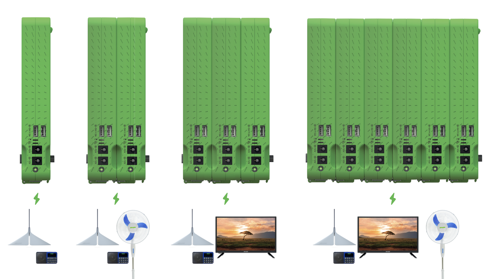
5 · Value proposition fit, van oplossingsidee naar match
Je hebt nu (hopelijk) meerdere oplossingsrichtingen voor je liggen. Nu is de vraag: welke richting past het best bij het probleem dat je in sessie 2 hebt gevalideerd? Het Value Proposition Canvas (VPC), dat je in sessie 1 hebt leren kennen, is ook hier je instrument, maar nu vul je de aanbod-kant in voor je oplossingsrichting.
In sessie 1 begon je met de klant-kant: customer jobs, pains, gains. Nu vul je de aanbod-kant in:
- Products & services: wat lever je concreet?
- Pain relievers: hoe neemt jouw oplossing de pijnpunten weg die je in sessie 2 hebt gevalideerd?
- Gain creators: hoe creëert jouw oplossing de winst die de klant zoekt?
Probleem-oplossing fit is bereikt op het moment dat er op papier een logische match bestaat tussen de pains en gains van de klant en de pain relievers en gain creators van jouw propositie. Het is een hypothese, nog geen bewijs. Bewijs komt pas in sessie 4 en 5, wanneer je met echte klanten gaat testen. Maar probleem-oplossing fit is de minimale eis om door te mogen gaan naar prototype.
Het verschil met product-markt fit is cruciaal: dat is pas bereikt wanneer klanten daadwerkelijk kopen, gebruiken en anderen aanbevelen. Product-markt fit kan niet bereikt worden op een whiteboard. Probleem-oplossing fit wel, en dat is precies waarom het zo verleidelijk is om te beweren dat je hem hebt, zonder hem daadwerkelijk gevalideerd te hebben. Een mooie redenering op papier is nog geen bewijs.
6 · Ecosysteem-denken, financiering als enabler
Spark's Audi-analogie wijst op een principe dat je bij oplossingen-denken snel over het hoofd ziet: soms zit de barrière niet in het product, maar in alles rondom het product. De klant wil het, het product werkt, maar er is iets in de omgeving dat adoptie blokkeert. Geld. Logistiek. Kennis. Vertrouwen. Regelgeving.
Ecosysteem-denken betekent: breid je blik uit van je product naar het hele systeem van factoren dat bepaalt of je oplossing succesvol geadopteerd wordt. Je stelt jezelf 3 vragen:
- Wat moet er naast het product aanwezig zijn voordat de klant ja zegt?
- Welke barrières houden klanten tegen om jouw oplossing te adopteren, ook als ze die willen?
- Wie zijn de andere spelers in het systeem die jouw klant ook bedienen, en hoe kun je met hen samenwerken in plaats van concurreren?
In de taal van Keeley et al. (2013) vallen dit soort inzichten onder network- en service-innovatie. Je oplossing is niet alleen het product, het is het product plus de voorwaarden die maken dat iemand het daadwerkelijk kan gebruiken.
Denk aan hoe Audi leasing aanbiedt. Audi's primaire product is een auto. Maar zonder financieringsoplossing zijn veel potentiële kopers, hoe graag ze de auto ook willen, niet in staat om te kopen. Leasing is geen afwijking van het "automerk-zijn" van Audi; het is de enabler die het automerk schaalbaar maakt. Spark's Access to Finance werkt op exact dezelfde manier: het is geen afwijking van de missie ("energie leveren"), het is de voorwaarde die die missie op schaal mogelijk maakt.
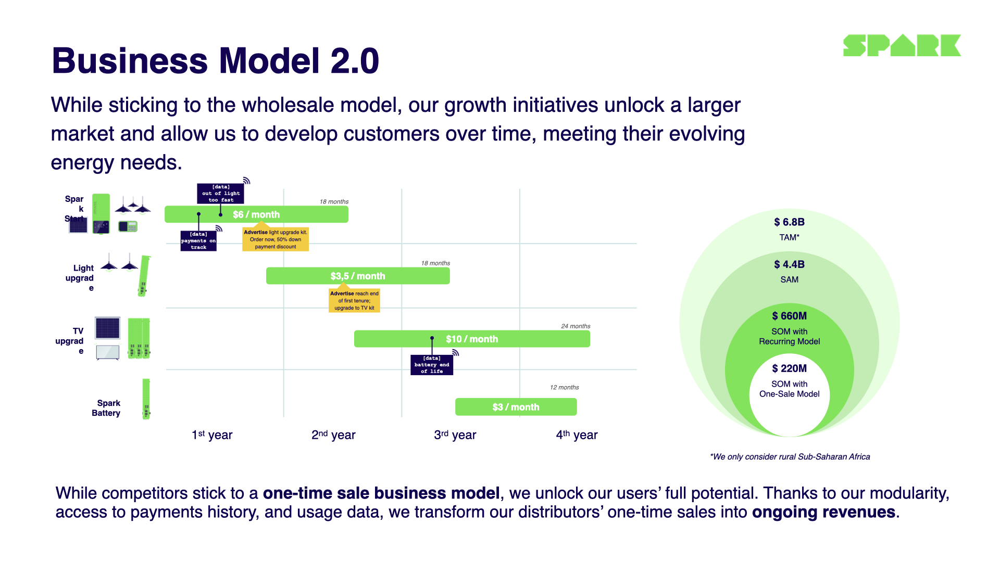
Malango Washikala, CEO van Altech in de Democratische Republiek Congo, 1 van Spark's distributiepartners, beschrijft het verschil dat Access to Finance maakt: "They are a pioneer as far as combining both product supply and financing." Dat is precies het ecosysteem-principe in de praktijk: de kit alleen was niet genoeg. De combinatie van product + financiering + service op locatie maakte Spark tot een partner die klanten niet elders konden vinden.
Harmen benadrukt ook wat ze niet hebben gedaan: uitbreiden naar cookstoves (efficiënte kookkachels op biomassa). Dat was rond die tijd een populaire markt waar veel impact-investeerders op stuurden, en het leek financieel aantrekkelijk. Maar het had Spark tot een kookoplossing gemaakt, en daarmee de kernmissie (energie voor alles: licht, fan, tv, productiviteit) verraden. Ecosysteem-denken vraagt ook nee zeggen: wat hoort wél bij jouw ecosysteem en wat hoort er niet bij?
7 · Van idee naar keuze, convergeren en beslissen
Je hebt meerdere oplossingsrichtingen gegenereerd. Nu moet je kiezen, of in elk geval terugbrengen naar 1 richting die de moeite waard is om verder te ontwikkelen. Convergeren vraagt andere vaardigheden dan divergeren: minder creativiteit, meer analytisch vermogen en het lef om nee te zeggen.
Een veelgebruikt kader om ideeën te beoordelen is de Desirable-Feasible-Viable-driehoek (IDEO, 2015):
- Desirable (wenselijk): wil de klant dit? Lost het daadwerkelijk het gevalideerde probleem op? Heb je bewijs uit je klantgesprekken?
- Feasible (haalbaar): kun jij dit realiseren? Heb je de technische capaciteit, de kennis, de middelen?
- Viable (levensvatbaar): kan dit financieel zelfstandig bestaan? Hoe verdien je er geld mee, of hoe lost het de businesscase van de klant op?
Een idee dat alleen aan 1 van de 3 voldoet, is bijna nooit goed genoeg. De beste oplossingen zitten in het midden: wenselijk én haalbaar én levensvatbaar. Geef elk idee een score op de 3 dimensies. Het idee dat het sterkst scoort op alle 3, of dat de gemakkelijkst te valideren onzekerheid heeft, is je startpunt voor sessie 4.
Impact/effort matrix
Een aanvullende manier om ideeën te prioriteren is de impact/effort matrix: een vierkwadrantsmodel dat ideeën indeelt op 2 dimensies, de verwachte impact en de benodigde inspanning.
Na de convergentiestap heb je het startpunt voor sessie 4: 1 oplossingsrichting die je verder gaat ontwikkelen als prototype. Je hebt de richting gekozen op basis van klantbewijs (wenselijk), eigen capaciteit (haalbaar) en financiële logica (levensvatbaar). En je hebt expliciet benoemd welke aanname het kwetsbaarste punt is, want die ga je in sessie 4 het eerst testen.
Voor Spark was de keuze in dit geval snel duidelijk: de Access to Finance-richting scoorde hoog op alle 3 dimensies. Wenselijk: distributiepartners gaven aan dat financiering hun voornaamste barrière was. Haalbaar: via DGGF en Atradius was het instrument er al, Spark hoefde het niet zelf te bouwen. Levensvatbaar: grotere orders betekenden hogere marges, en de DGGF-constructie was schaalbaar over meerdere landen. Harmen: "Toen dat eenmaal duidelijk werd, was het bij iedereen meteen 1+1=3. Marcel en ik lieten alles vallen om die eerste deal met Atradius rond te krijgen."
Malango Washikala, CEO van Altech in de Democratische Republiek Congo, vertelt hoe Spark verder gaat dan alleen een product, en hoe de combinatie van kit en financiering zijn bedrijf in staat stelde te groeien.
Veelgemaakte fouten in deze fase
- Meteen naar de eerste oplossing. De eerste ingeving is zelden de beste. Genereer altijd minimaal 5 tot 10 richtingen voordat je convergeert.
- Alleen in productvarianten denken. Gebruik de 10 types of innovation als checklist: de doorbraak zit misschien in verdienmodel, netwerk of service, niet in het product zelf.
- Divergeren en convergeren door elkaar halen. Oordelen tijdens het brainstormen doodt ideeën. Houd de 2 fases strikt gescheiden, eerst genereren, dan beoordelen.
- Vergeten wat je hebt gevalideerd. Elke oplossingsrichting moet terug te herleiden zijn naar het gevalideerde probleem uit sessie 2. Als de link er niet is, is het niet de oplossing voor dit probleem.
- Het ecosysteem niet meenemen. Vraag altijd: wat moet er naast het product aanwezig zijn voordat de klant ja kan zeggen? Financiering, training, vertrouwen, logistiek, het antwoord zit zelden alleen in het product.
- Nooit nee zeggen. Convergeren is ook richtingen loslaten. Een idee dat past bij de 10 types, maar niet bij je gevalideerde probleem, is geen goede richting, hoeveel je hem ook leuk vindt.
- Probleem-oplossing fit verwarren met bewijs. Een goede match op papier is een hypothese. Validatie komt pas in sessie 4 en 5, met echte klanten.
Naast je eigen brainstormsessies kun je AI inzetten om je oplossingsrichtingen scherper te krijgen:
- Waardepropositie Bouwer, helpt je je oplossingsrichting te formuleren als een concrete waardepropositie, en toetst of de match met je gevalideerde klantprofiel logisch is.
Gebruik AI als sparringspartner: geef hem je gevalideerde probleemstelling en vraag om 10 heel verschillende oplossingsrichtingen. De output is vertrekpunt, niet eindantwoord. AI weet niet wat voor jou haalbaar is, welke partners je al hebt, of welke aannames je al hebt gevalideerd.
Samenvatting + checklist
Wat moet je na dit hoofdstuk kunnen?
- Uitleggen wat divergeren en convergeren betekent, en waarom je ze strikt gescheiden houdt
- De 2 diamanten van het Double Diamond-model beschrijven en benoemen welke sessies erbij horen
- Een "How Might We"-vraag formuleren op basis van een gevalideerde probleemstelling
- De 4 basisregels van klassiek brainstormen benoemen en uitleggen waarom oordelen tijdens de sessie schadelijk is
- De werking van brainwriting 6-3-5 beschrijven, aantallen, rondes, en waarom het effectief is
- De 7 letters van SCAMPER benoemen en voor elke letter een voorbeeld geven
- De 3 niveaus en 10 categorieën van Keeley et al. (2013) noemen
- Uitleggen waarom productinnovatie de minst verdedigbare vorm van innovatie is
- Het verschil beschrijven tussen probleem-oplossing fit en product-markt fit
- De 3 dimensies van het Desirable-Feasible-Viable-kader toepassen op een oplossingsrichting
- Uitleggen wat de impact/effort matrix is en welk kwadrant je als eerste aanpakt
- Ecosysteem-denken uitleggen aan de hand van de Audi-leasing-analogie
- Beschrijven welke stap je zet na de convergentiefase: wat neem je mee naar sessie 4?
Oefenvragen voor de kennistoets
20 vragen in MC-vorm, vergelijkbaar met wat je op de toets kunt verwachten. Klik op een vraag om het antwoord met uitleg te zien.
1. Wat betekent "divergeren" in creatief probleemoplossen?
- Het kiezen van de beste oplossing uit een lijst van opties.
- Het beoordelen van ideeën op haalbaarheid en wenselijkheid.
- Het zo breed mogelijk genereren van ideeën, zonder oordeel, om de oplossingsruimte te vergroten.
- Het samenvatten van onderzoeksresultaten in een probleemstelling.
2. Welke 2 diamanten kent het Double Diamond-model?
- Een kwalitatieve fase en een kwantitatieve fase.
- Een onderzoeksfase (ontdekken en definiëren) en een oplossingsfase (ontwikkelen en leveren).
- Een strategisch niveau en een operationeel niveau.
- Een interne analyse en een externe analyse.
3. Wat is een "How Might We"-vraag?
- Een interviewvraag die je stelt aan klanten om hun mening over jouw idee te achterhalen.
- Een open, uitnodigende herformulering van een gevalideerde probleemstelling die de ideëgeneratie opent.
- Een vraag die bepaalt wie welk onderdeel van de oplossing bouwt.
- Een hypotheseformulering voor het opzetten van een experiment.
4. Waarom is het schadelijk om ideeën te beoordelen tijdens een brainstormsessie?
- Beoordelen kost te veel tijd en vertraagt de sessie.
- Kritiek tijdens het genereren remt deelnemers af om onconventionele richtingen te verkennen, en doodt ideeën voordat ze volledig zijn uitgedacht.
- Deelnemers worden er emotioneel van en dat verstoort de samenwerking.
- Er zijn geen regels in brainstormen, beoordelen is altijd toegestaan.
5. Hoe werkt brainwriting 6-3-5?
- 6 ideeën in 3 minuten, daarna 5 ideeën in 6 minuten.
- 6 deelnemers schrijven elk 3 ideeën op, het vel gaat na 5 minuten door naar de volgende, die voortbouwt op de bestaande ideeën, 6 rondes lang.
- 6 teams doen elk 3 rondes van 5 minuten brainstormen, daarna presenteren ze hun ideeën.
- 6 letters van SCAMPER worden in 3 rondes van 5 minuten doorgewerkt.
6. De "C" in SCAMPER staat voor Combine. Welk voorbeeld past daarbij?
- Een vlucht zonder maaltijd aanbieden om kosten te besparen.
- Een horloge en een telefoon samenvoegen tot een smartwatch.
- Plastic vervangen door biologisch afbreekbaar materiaal.
- De volgorde van stappen in een productieproces omdraaien.
7. De "E" in SCAMPER staat voor Eliminate. Welk voorbeeld past daarbij?
- Een drive-through-concept van fastfood toepassen bij apotheken.
- Post-its die oorspronkelijk bedoeld waren als bladwijzer, ook gebruiken als notitieblaadje.
- Low-cost airlines die maaltijden en bagage weglaten om goedkoper te vliegen.
- Een muziekspeler combineren met een downloadplatform.
8. Welke van de 10 types of innovation behoort tot het niveau "Configuratie"?
- Service
- Brand
- Profit model
- Product performance
9. Waarom is productinnovatie de minst verdedigbare vorm van innovatie volgens Keeley et al. (2013)?
- Producten zijn altijd duurder te ontwikkelen dan diensten.
- Concurrenten kunnen productinnovaties eenvoudig kopiëren; innovaties in verdienmodel, netwerk of klantervaring zijn veel moeilijker te imiteren omdat ze dieper in de organisatie verankerd zitten.
- Klanten hechten geen waarde aan productverbeteringen.
- Er zijn maar 2 typen productinnovatie, terwijl er 8 andere typen zijn.
10. Wat is "probleem-oplossing fit"?
- Bewijs dat klanten daadwerkelijk je product kopen en gebruiken.
- Een op papier logische match tussen de pains en gains van de klant en de pain relievers en gain creators van jouw propositie.
- Het moment waarop een prototype succesvol is getest bij minimaal 10 klanten.
- De uitkomst van een SWOT-analyse.
11. Welke 3 dimensies gebruikt het Desirable-Feasible-Viable-kader?
- Kwalitatief, kwantitatief, strategisch.
- Wenselijk (wil de klant het?), haalbaar (kun jij het bouwen?) en levensvatbaar (kan het financieel zelfstandig?).
- Sociaal, ecologisch, economisch.
- Probleem, oplossing, implementatie.
12. Welk kwadrant van de impact/effort matrix pak je als eerste aan?
- Hoge impact, hoge inspanning, want die leveren het meest op.
- Lage impact, lage inspanning, want die zijn het makkelijkst te realiseren.
- Hoge impact, lage inspanning, laaghangend fruit dat snel waarde oplevert.
- Lage impact, hoge inspanning, want die zijn het moeilijkst, dus begin er vroeg mee.
13. Wat is ecosysteem-denken in de context van oplossingen bedenken?
- Het analyseren van concurrenten in de sector.
- Je blik uitbreiden van het product naar het gehele systeem van factoren, financiering, logistiek, kennis, vertrouwen, dat bepaalt of je oplossing succesvol geadopteerd wordt.
- Het toetsen van de milieu-impact van jouw oplossing.
- Het bouwen van een netwerk van distributeurs voor je product.
14. Welk type innovatie (Keeley et al.) past bij het voorbeeld "Audi biedt leasing aan naast autoverkoop"?
- Product performance
- Brand
- Profit model
- Channel
15. Wanneer is "product-markt fit" bereikt?
- Wanneer het Value Proposition Canvas volledig is ingevuld en logisch klopt.
- Wanneer klanten daadwerkelijk kopen, gebruiken en anderen aanbevelen, bewezen door gedrag, niet door een gesprek.
- Wanneer de opdrachtgever akkoord gaat met de oplossingsrichting.
- Wanneer je 5 brainstormsessies hebt gedaan en de beste richting hebt gekozen.
16. Welke stap volgt direct na het convergeren in sessie 3?
- Een nieuwe brainstormsessie om de keuze te heroverwegen.
- Het direct bouwen van het eindproduct.
- Het meenemen van 1 kansrijke oplossingsrichting naar sessie 4, waar je er een prototype van maakt en gaat testen.
- Het presenteren van alle oplossingsrichtingen aan de opdrachtgever voor een definitief besluit.
17. Wat is het voordeel van brainwriting ten opzichte van klassiek mondeling brainstormen?
- Brainwriting gaat sneller dan mondeling brainstormen.
- Brainwriting produceert betere ideeën omdat schrijven dieper nadenken stimuleert.
- Brainwriting voorkomt dat extroverten de sessie domineren, zorgt voor gelijkwaardige bijdragen en gebruikt ideeën van anderen als springplank.
- Brainwriting is effectiever omdat er geen facilitator nodig is.
18. Bij de 10 types of innovation: welk type past bij "een partnernetwerk organiseren dat jouw klant ook bedient"?
- Process
- Network
- Channel
- Customer engagement
19. Welke uitspraak beschrijft de "A" in SCAMPER het best?
- Aanpassen: een functie weglaten om het product te vereenvoudigen.
- Aanpassen: inspiratie halen uit een andere sector of context en dit vertalen naar jouw situatie.
- Aanpassen: de bestaande prijs verhogen of verlagen afhankelijk van de markt.
- Aanpassen: de doelgroep van het product veranderen naar een andere demografische groep.
20. Een team heeft na brainstormen 30 ideeën. Ze willen convergeren naar 3 ideeën om te testen. Welke aanpak is het meest geschikt?
- De opdrachtgever laten kiezen welke 3 ideeën het beste bij zijn wensen passen.
- Elk idee beoordelen op Desirable-Feasible-Viable en de hoogst scorende 3 selecteren.
- Willekeurig 3 ideeën selecteren om tijd te besparen.
- Alle 30 ideeën aan klanten voorleggen en de 3 meest populaire kiezen.
Toetswijzer voor dit hoofdstuk
Voor de kennistoets moet je de inhoud van dit hoofdstuk kennen: begrippen, modellen, methoden, veelgemaakte fouten en de checklist hierboven. Het boek behandelt het bedénken van oplossingen niet, dus dit hoofdstuk heeft geen toetsstof uit het boek. Deel 1.2 Geef het idee vorm uit Businessideeën testen heb je in jaar 1 gehad en kun je kort opfrissen voor de koppeling tussen oplossing en waardepropositie. De overige titels in de bibliografie hieronder staan erbij voor wie zich verder wil verdiepen.
Bronnen
Aanbevolen opfrissing uit jaar 1
- Bland, D. J., & Osterwalder, A. (2020). Businessideeën testen. Management Impact. ISBN 9789462763838. Lees: Deel 1.2 Geef het idee vorm (p. 15-26), voor de koppeling tussen oplossing en waardepropositie. Online via Avans Boom Portaal of in je eigen exemplaar uit jaar 1.
Verder lezen, voor wie zich verder wil verdiepen
- Brown, T. (2009). Change by design: How design thinking transforms organizations and inspires innovation. HarperBusiness.
- Design Council. (2005). A study of the design process. Design Council UK.
- Eberle, B. (1996). SCAMPER: Games for imagination development. Prufrock Press.
- IDEO. (2015). The field guide to human-centered design. IDEO.org.
- Keeley, L., Pikkel, R., Quinn, B., & Walters, H. (2013). Ten types of innovation: The discipline of building breakthroughs. Wiley.
- Osborn, A. F. (1953). Applied imagination: Principles and procedures of creative problem-solving. Scribner.
- Osterwalder, A., Pigneur, Y., Bernarda, G., & Smith, A. (2014). Value proposition design: How to create products and services customers want. Wiley.
- Washikala, M. [Altech, CEO]. (z.d.). In the field, Spark partnership [Video, klanttestimonial]. YouTube. https://youtu.be/rf-VtMc8dX0
Prototype & actieonderzoek
Een toetsbare hypothese, een klein haalbaar prototype, eindgebruikers erbij.
📖 Vooraf lezen in je boek
Dit hoofdstuk leunt sterk op Businessideeën testen (Bland en Osterwalder, 2020). De experimenten-methodiek is het hart van dat boek. Lees vooraf:
- Deel 3.1, Kies een experiment (p. 91-100), hoe je per aanname het juiste experiment kiest.
- Deel 3.2, Ontdekken (p. 101-230), met name de experimenten voor haalbaarheid en levensvatbaarheid.
Let op: dit is nieuwe stof voor jaar 2 en telt mee voor de toets. De wenselijkheidsexperimenten uit Deel 3.2 ken je al uit jaar 1. Deze reader herhaalt de experimenten niet, maar vult aan met actieonderzoek, peerfeedback en het werken met een opdrachtgever.
Jabalpur, avond, mayonaiseflesje
Het is 2011. Marcel van Heist, mede-oprichter van Spark, zit alleen in een kaal hokje op een universiteit in Jabalpur, de hoofdstad van Madhya Pradesh in India. Daarvoor heeft hij doelgroeponderzoek gedaan: wegwerpcamera's uitgedeeld, vragen gesteld. Hij had gehoopt dat de bewoners van het omliggende dorp zouden vertellen wat energie voor hen betekent. In plaats daarvan kreeg hij foto's terug van sterren, van de kosmos, van 2 mensen die elkaar een hand gaven, levensenergie. Mooi. Filosofisch. Nutteloos voor een energienetwerk.
Marcel heeft nog een week voordat de trip afloopt. En hij heeft niets, geen product, geen bewijs, geen contact. "We moeten iets hebben. We gaan zelf iets maken." Marcel gaat naar de markt, naar Nitin. Een shop-owner met een winkeltje vol kleinkram, batterijtjes, cameraatjes, hamers, draad. Engels-sprekend, iemand die dingen voor elkaar weet te krijgen. Marcel had er al vaker dingen gekocht, zo iemand heb je nodig. Hij haalt materiaal: draad, lampjes, ketchup- en mayonaiseflesjes, een pillendoosje als bulb, een broodtrommel als casing voor de stroomverdeler. Die avond soldeert hij het in elkaar. De volgende ochtend trekt hij met een lokale tolk het dorp in.
{kind=link}
{kind=link}
Dat mayonaiseflesje is het eerste prototype van wat later de Spark Energy Kit zou worden. Het is niet mooi. Het is niet veilig getest. Het is niet schaalbaar. De lokale partner vond er ook van alles van: het was te groot, te klein, te fel, de beugel zat verkeerd. "We gaan toch," zei Marcel. Want het is tastbaar, en dat maakt het mogelijk om iets te leren wat geen workshop, geen vragenlijst en geen PowerPoint had kunnen opleveren: hoe reageren mensen wanneer je hun geen verhaal vertelt, maar een product in hun handen drukt? Dan reageren ze ineens niet meer als co-creator (een rol die ze moeten spelen), maar als gebruiker, als consument, de rol die ze ook hebben in deze context.
Waarom dit hoofdstuk?
Een prototype maken klinkt logisch. Toch struikelen teams op 2 tegenovergestelde manieren. Sommige teams wachten te lang: ze willen pas iets laten zien als het "af" is, veilig, mooi, volledig. Reid Hoffman, mede-oprichter van LinkedIn, formuleerde het zo: "If you are not embarrassed by the first version of your product, you've launched too late". Andere teams maken de omgekeerde fout. Ze bouwen te veel tegelijk, willen alles in 1 keer goed doen, en ontdekken pas na maanden van productontwikkeling dat ze een cruciale aanname over het hoofd hebben gezien.
Harmen van Heist beschrijft een treffend voorbeeld van die tweede fout. Greenpeace en Basix Group India wilden boeren in Indiase dorpen toegang geven tot een bankrekening. Essentieel daarvoor: identificatie. Geen ID-bewijzen in de dorpen, dus kozen ze voor vingerafdrukken. Ze lieten voor bakken met geld kastjes met vingerafdrukscanners bouwen, gecertificeerd, schaalbaar, kwalitatief. En toen kwamen ze erachter: mensen die dag in dag uit op het land werken, hebben geen leesbare vingerafdruk meer. "Als ze 1 keer 1.000 euro voor een iPhone met vingerafdrukscanner mee het dorp in hadden genomen," vertelt Harmen, "hadden ze dit ontdekt."
Dit hoofdstuk gaat over de kunst van snel, goedkoop en gericht leren via een prototype. Hoe simpel het mag, en moet, zijn. Hoe je 1 aanname per keer test. Hoe je het leerproces structureert met actieonderzoek. En hoe Businessideeën testen je een complete gereedschapskist biedt om voor elke aanname het juiste experiment te kiezen.
1 · Van oplossingsidee naar prototype, de prototype-ladder
Een prototype is niet een vroege versie van je eindproduct. Het is een instrument om een aanname te toetsen. Dat klinkt als een subtiel verschil, maar het is fundamenteel: zodra je een prototype ziet als "een vroeg product", ga je het zo goed mogelijk maken. Zodra je het ziet als "een leermiddel", maak je het zo goedkoop en snel mogelijk, zodat je zo snel mogelijk kunt leren.
In de praktijk bestaat er een heel spectrum aan prototypes, van laag-naar-hoog in investering. Dit noemen we de prototype-ladder (vrij naar Kromer, 2018):
- Papier- of storyboard-prototype, een schets, een stripverhaal van de gebruikservaring, een klikplaatje. Kosten: bijna 0. Leert je: begrijpt de gebruiker het concept?
- Wizard of Oz prototype, de gebruiker gelooft dat hij met een werkend systeem interacteert; in werkelijkheid doen mensen achter de schermen het werk. Kosten: lage technische investering, hogere personele inzet. Leert je: wil de gebruiker dit echt, als het zou bestaan?
- Concierge-prototype, je levert de dienst handmatig aan 1 klant, zonder technologie of schaal. Denk aan Airbnb dat hun eerste gasten handmatig matchte met hosts. Kosten: arbeidsintensief maar geen technische infrastructuur. Leert je: is er werkelijk vraag, en wat heeft de klant écht nodig?
- Werkend prototype, een functioneel model met 1 of enkele kernfuncties. Kosten: significant. Leert je: werkt het technisch en is er reële adoptie?
De vuistregel: begin altijd op de laagste trede van de ladder die jouw kritieke aanname kan toetsen. Elke trede hoger kost meer, en als je aanname op de lage trede al sneuvelt, heb je een halfjaar productontwikkeling bespaard.
Spark's mayonaiseflesje stond ergens tussen papier en Wizard of Oz: fysiek en tastbaar, maar geen commercieel product. Het diende 1 doel (al werd het wel bewust zo gepresenteerd): kon een lampje in een Indiaas dorp een reactie oproepen die een workshop niet had kunnen opwekken? Er was van alles mis mee, maar ze zijn gewoon gegaan. Wat de kit bewees, financierde de volgende stap: de Keep an Eye Foundation Award van 25.000 euro. Daarmee maakten ze in 3 maanden een verbeterde versie van de kits, sloten ze nieuwe klanten aan en vonden ze hun eerste lokale partner: Basix Group India. De methode zelf werd later genomineerd voor de Rotterdam Design Prize.
2 · MVP, minimaal maar maximaal leerzaam
Eric Ries introduceerde het concept van het Minimum Viable Product (MVP) in The Lean Startup (2011): "A minimum viable product is that version of a new product which allows a team to collect the maximum amount of validated learning about customers with the least effort."
De nadruk zit niet op "minimum" of "product", maar op validated learning. Een MVP is niet bedoeld om indruk te maken; hij is bedoeld om iets te leren. Dat leren verloopt via de Build-Measure-Learn cyclus:
- Build, bouw het minimaal noodzakelijke dat je aanname testbaar maakt.
- Measure, meet het gedrag van echte gebruikers (niet hun mening, hun gedrag).
- Learn, trek conclusies: houdt je aanname stand? Ga je door, pas je aan, of moet je van richting veranderen (pivot)?
- Terug naar Build, maar dan scherper, op basis van wat je hebt geleerd.
Het cruciale punt: houd de cyclus zo kort mogelijk. Elke week extra in de Build-fase zonder Meten en Leren is een week waarin je aannames ongetoetst blijven. Hoe langer de cyclustijd, hoe groter het risico dat je iets bouwt voor een probleem dat niet bestaat, of een oplossing levert die de klant niet begrijpt.
Ries (2011) waarschuwt voor een veelvoorkomend misverstand: een MVP is niet een goedkoper product. Het is een ander instrument met een ander doel. Facebook startte als een interne directorie voor Harvard-studenten, geen social network voor iedereen, gewoon: werkt dit voor deze kleine groep? Airbnb verhuurde de slaapkamer van de oprichters aan deelnemers van een designconferentie, geen platform, gewoon: wil iemand dit?
Businessideeën testen bouwt voort op dit principe in zijn experimenten-methodiek: voor elke aanname kies je het experiment dat het meeste bewijs oplevert tegen de minste kosten en tijd. Voor het complete besliskader om die keuze te maken, zie Deel 3.1 Kies een experiment (p. 91-100).
Spark's iteratiefase van 2011 tot 2013 is een schoolvoorbeeld van Build-Measure-Learn. Na het eerste prototype (broodtrommel met sauceflesjes, in 1 dag in elkaar gezet) kwam een tweede versie: een houten casing, usb-poorten zodat mensen ook hun telefoon konden opladen, en een printplaatje dat nu écht ergens op sloeg. Nog steeds zelf in elkaar geknutseld, maar betrouwbaarder. Daarna: kijken of lokale partners defecten zelf konden verhelpen. Elke ronde 1 nieuw leermoment, elke iteratie net wat beter dan de vorige. Dat is Build-Measure-Learn in z'n meest letterlijke vorm: bouw iets dat net werkt, kijk wat ervan klopt en wat niet, en bouw de volgende versie met die les erin.
3 · Hidden Design, het ontwerp verbergen
Klassiek gebruikersonderzoek en co-creatie hebben een structureel probleem: zodra mensen weten dat ze worden geobserveerd of dat ze mede-ontwerper zijn, gaan ze een rol spelen. Ze zeggen wat ze denken dat je wil horen. Ze bedenken een toekomstige situatie in plaats van hun echte huidige gedrag te laten zien. Je krijgt data, maar de data klopt niet.
Marcel van Heist ontwikkelde hierop een antwoord: de Hidden Design methode. Het principe is simpel en radicaal tegelijk: verberg het ontwerpproces. In plaats van te zeggen "wij zijn ontwerpers en jullie gaan mee-ontwerpen", kom je met een concreet voorstel, een tastbaar prototype, en observeer je wat er werkelijk gebeurt als mensen ermee in aanraking komen. Je vraagt niet naar meningen over de toekomst; je observeert gedrag in het heden.
De kern van de methode is de overtuiging dat mensen niet weten wat ze willen, maar dat ze wel kunnen reageren op iets wat er voor hen is. "Let the product do the talking," vat Harmen het samen. Geen co-creatie, maar een voorstel neerleggen en kijken of mensen er organisch mee aan de slag gaan.
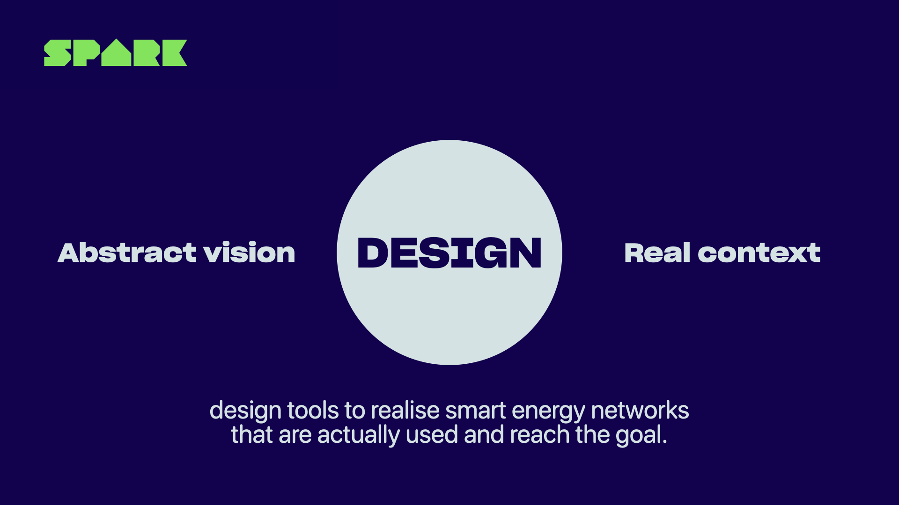
De methode werd voor het eerst op grote schaal ingezet in India, met het mayonaiseflesje-prototype. Marcel nam de kit mee het dorp in, samen met een lokale partner als tolk. Ze vertelden dat ze van een energiebedrijf kwamen dat een nieuw netwerk aan het uitrollen was. Ze presenteerden het als echt. En mensen reageerden erop als echt.
{kind=link}
De eerste klant die de kit wilde, was Ranjit. Hij nam de kit mee naar huis. Marcel liet hem achter en kwam na een paar dagen terug. De kit had een prominentere plek gekregen; de kerosinelamp was verdwenen. Een week later: de kit was mooi gedecoreerd (op z'n landelijk Indiaas met karton, maar oké). En er lag een handgeschreven boekje, met namen, lampen en betalingen. Ranjit had uit zichzelf een verhuurservice opgezet. Zijn buren huurden zijn lampen; hij inde het geld en laadde ze 's ochtends op. Hij was de energieleverancier van zijn dorp geworden.
Toen Marcel er, via een tolk, met Ranjit over sprak vertelde hij hoe trots hij was dat zijn lampjes 's avonds het dorp verlichtten. Hij was de sociale hub geworden. Bruiloften werden bij hem aangekondigd.

Dat boekje was nooit gevraagd. Het was nooit ontworpen. Het was het bewijs dat de aanname klopte: mensen willen dit gebruiken, en als je ze de tool geeft, verzinnen ze zelf hoe.
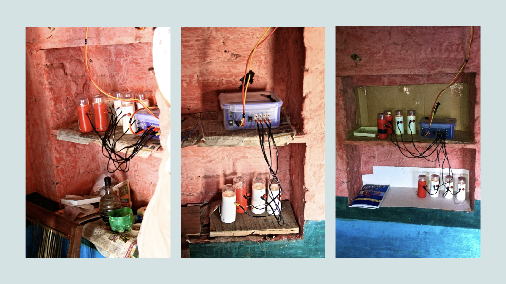
Hidden Design is ook inzetbaar buiten India en buiten hardware. Marcel paste het later toe op de Dutch Design Week, waar hij een levensgrote "Life Scanner" presenteerde die bezoekers persoonlijk advies gaf over welke events te bezoeken. De scanner was gefaket: bezoekers schreven hun naam op een briefje, terwijl een team van 10 personen op 100 meter afstand op Google zocht naar informatie. Toch reageerden mensen alsof het echt was, sommigen enthousiast ("dit kan op vliegvelden!"), anderen verontrust ("levensgevaarlijk voor je privacy"). Beide reacties waren goud: dat was hoe mensen echt zouden reageren op zo'n systeem, zonder dat het systeem daadwerkelijk bestond.
Marcel van Heist legt de Hidden Design methode uit: waarom je het ontwerpproces verbergt, wat dat oplevert ten opzichte van klassiek gebruikersonderzoek, en hoe de methode in India en op de Dutch Design Week is toegepast.
4 · Slechts 1 aanname tegelijk testen
De hardste les uit de mayonaiseflesje-ervaring is er 1 die je bijna over het hoofd ziet: Spark testte maar 1 ding. Harmen zegt het expliciet in terugblik op die eerste prototyperonde: "We wilden maar 1 ding testen: gaan mensen dit gebruiken? Veiligheid niet meegenomen, kwaliteit niet, schaalbaarheid niet, kosten niet, helemaal niet relevant."
Dit is het hardste principe in de prototypefase: welke aanname is zo kwetsbaar dat als ze niet klopt, alles instort? Dat is de aanname die je het eerst test. Niet de aanname die je het makkelijkst kunt testen. Niet de aanname die je het minst eng vindt. De aanname waarvan de uitkomst het meeste betekent voor het vervolg. Dit noemen we de kritieke aanname.
Je vindt jouw kritieke aanname door de Desirable-Feasible-Viable-driehoek te doorlopen (die je in sessie 3 al hebt leren kennen) en te bepalen op welke dimensie je het minste bewijs hebt. Voor Spark was dat in 2011 kristalhelder: ze wisten niet of mensen een energiekit überhaupt wilden gebruiken. Die wenselijkheidsaanname moest als eerste sneuvelen of standhouden, en daarna pas had het zin om na te denken over technische kwaliteit of financiële haalbaarheid.
Het tegenovergestelde patroon, te veel tegelijk testen, leidt tot vertroebeld leren. Als je prototype gelijktijdig de prijs, het design, het kanaal én de waardepropositie test, weet je na de test niet meer wat precies het verschil maakte. Scherpe aannames maken heldere lessen mogelijk.
De vingerafdruk-anekdote die Harmen vertelt, laat het omgekeerde zien. Een ngo en een lokale partner wilden in een Indiaas project boeren toegang geven tot een bankrekening. Zij identificeerden een cruciaal probleem (geen ID-bewijs) en een technische oplossing (vingerafdrukken). Ze bouwden direct de volledige infrastructuur: kastjes, scanners, gecertificeerde apparatuur. Pas daarna ontdekten ze dat mensen die dag in dag uit op het land werken regelmatig geen leesbare vingerafdruk hebben. "Als ze 1 keer 1.000 euro voor een iPhone met vingerafdrukscanner mee het dorp in hadden genomen," zegt Harmen, "hadden ze dit ontdekt." 1 aanname, zo goedkoop en vroeg mogelijk getoetst. Dat had hen waarschijnlijk een half productprogramma en veel geld bespaard.
5 · Desirable, Feasible, Viable als kompas voor je prototype
In sessie 3 gebruikte je de Desirable-Feasible-Viable-driehoek (IDEO, 2015) om oplossingsrichtingen te beoordelen en te kiezen. In sessie 4 gebruik je hetzelfde kader om te beslissen wat je test, en in welke volgorde. De 3 dimensies stellen elk een andere vraag over je prototype:
- Desirable (wenselijk), willen mensen dit? Gaan ze het gebruiken? Zijn ze bereid te betalen? Dit zijn aannames die je het snelst met een laag prototype kunt toetsen: storyboard, Wizard of Oz, of een Hidden Design-aanpak. Wenselijkheidsexperimenten ken je al uit jaar 1, denk aan klantinterview, observatie, storyboard en conceptpresentatie.
- Feasible (haalbaar), kun jij het bouwen of leveren? Heb je de kennis, technologie en partners? Haalbaarheidsexperimenten toets je met werkende prototypes, simulaties of technische proefopstellingen. Voor de specifieke experimenten die haalbaarheid in de Discovery-fase toetsen, zie Businessideeën testen, Deel 3.2 Ontdekken (p. 101-230), sectie Haalbaarheid.
- Viable (levensvatbaar), verdient dit geld, of lost het het financiële probleem van je klant op? Levensvatbaarheidsexperimenten vragen om bewijs over bereidheid tot betalen, prijsstructuur en terugkerende omzet. Voor de specifieke experimenten zie Businessideeën testen, Deel 3.2 Ontdekken (p. 101-230), sectie Levensvatbaarheid.
De strategie: bepaal op welke dimensie je de minste zekerheid hebt, en begin daar. Weet je dat er vraag is (wenselijkheid bewezen), maar niet of je het kunt bouwen (haalbaarheid onzeker)? Focus dan je prototype op het technische bewijs. Weet je dat je het kunt bouwen, maar niet of mensen willen betalen (levensvatbaarheid onzeker)? Zoek dan die bereidheid tot betalen op.
Businessideeën testen biedt in Deel 3.1 (p. 91-100) een expliciete methode om te kiezen welk experiment het best past bij jouw specifieke aanname, het bewijs dat je nodig hebt, de beschikbare tijd en de kosten. Gebruik dat als werkboek naast dit hoofdstuk.
6 · Actieonderzoek, cyclisch leren met je opdrachtgever
De aanpak die Spark hanteerde, het veld in, iets proberen, observeren, aanpassen, heeft een naam in de wetenschappelijke methodologie: actieonderzoek. Reason en Bradbury (2008) definiëren het als een participatieve, praktijkgerichte onderzoeksmethode waarbij onderzoeker en stakeholders samenwerken om een situatie te begrijpen, er actie op te ondernemen en de resultaten direct te evalueren.
Het cruciale verschil met klassiek onderzoek: bij actieonderzoek verander je de situatie terwijl je haar onderzoekt. Je bent niet een neutrale waarnemer die data verzamelt en dan pas handelt. Je handelt, observeert de effecten, past aan, handelt opnieuw. Dit maakt actieonderzoek bij uitstek geschikt voor de prototypefase, en voor situaties waarin je samen met een opdrachtgever aan een echt vraagstuk werkt.
De basisstructuur van een actieonderzoekscyclus volgt 4 stappen:
- Vooronderzoek, begrijp de situatie van de stakeholders vóór je handelt. Welke gegevens heb je? Welke aannames maak je? Wat willen de stakeholders leren?
- Actie, zet je prototype, experiment of interventie in de praktijk bij de doelgroep.
- Observeer en meet, documenteer wat er werkelijk gebeurt. Gedrag, reacties, onverwachte effecten.
- Evalueer en reflecteer, wat heb je geleerd? Klopt je aanname? Hoe pas je de volgende actie aan?
Daarna begin je opnieuw, maar scherper. Elke cyclus is kleiner, sneller en gerichter dan de vorige. Actieonderzoek is van nature iteratief: je spiraleert naar steeds concretere kennis.
De methode die je in actieonderzoek inzet, kies je op basis van wat je wil leren. Bekende methoden zijn:
- Observatie, aanwezig zijn bij gebruikers en vastleggen wat er werkelijk gebeurt (niet wat ze zeggen dat er gebeurt).
- Gestructureerd interview, navragen op specifieke momenten in de cyclus wat de ervaring was.
- Prototype-test, gebruikers laten interacteren met een tastbaar model en hun gedrag vastleggen.
- Survey (beperkt), kwantitatief meten van specifieke variabelen over een grotere groep. Let op: een survey alléén is geen actieonderzoek; het is een meetinstrument binnen een cyclus.
- Focusgroep, meerdere stakeholders tegelijk om inzichten te vergelijken en te verdiepen.
Voor je actieonderzoek bij je opdrachtgever geldt hetzelfde principe als voor je prototype: begin met 1 scherpe onderzoeksvraag, kies de methode die die vraag het directst beantwoordt, en doe dat zo snel dat je de resultaten nog kunt verwerken in je volgende iteratie.
Spark's hele vroege fase van 2011 tot 2014 is in essentie actieonderzoek. Marcel, Evan en (later) Harmen gingen de dorpen in (actie), observeerden (wat doen mensen met de kit?), evalueerden (de boekjesadministratie van Ranjit was het bewijs dat mensen willen ondernemen met energie) en stelden de volgende ronde bij (nu met usb-aansluiting, dan met lokale partnerinstructies, dan groter). Geen onderzoeksplan van 40 pagina's, wel een strak cyclisch patroon van doen, kijken en leren. Spark's eigen formulering: "De enige manier om écht inzicht te krijgen in hoe je de maatschappij verandert, is door het te doen." (Spark)
Dat principe komt in dit hoofdstuk steeds terug: niet vragen of mensen iets zouden gebruiken, maar laten zien dat ze het gebruiken, en daaruit leren wat de volgende stap moet zijn.
7 · Haalbaarheids- en levensvatbaarheidsexperimenten in de Discovery-fase
In jaar 1 heb je gewerkt met de wenselijkheidsexperimenten uit Businessideeën testen: klantinterview, etnografische observatie, storyboard, conceptpresentatie. Die leerden je of mensen het probleem herkennen en of jouw oplossingsrichting hen aanspreekt.
In sessie 4 ga je een stap verder: je toetst ook haalbaarheids- en levensvatbaarheidsaannames. Dat zijn aannames over of jij het kunt bouwen of leveren (haalbaarheid) en over of het financieel werkt, voor jou en voor je klant (levensvatbaarheid).
De Discovery-experimenten voor haalbaarheid en levensvatbaarheid staan volledig uitgewerkt in Businessideeën testen, Deel 3.2 Ontdekken (p. 101-230). Per experiment vind je:
- Een beschrijving van wat het experiment test.
- Hoe je het opzet, stap voor stap.
- Wat sterk versus zwak bewijs is.
- Wanneer je dit experiment inzet ten opzichte van andere experimenten.
Ga die experimentenbibliotheek door en kies het experiment dat het best past bij jouw kritieke aanname, de beschikbare tijd en de kosten. Gebruik Deel 3.1 Kies een experiment (p. 91-100) als selectiekader om te bepalen welk type experiment het meeste bewijs oplevert voor de dimensie die het meest onzeker is.
Let op het onderscheid tussen Discovery-experimenten (Deel 3.2) en Validation-experimenten (Deel 3.3): Discovery-experimenten zijn geschikt voor vroege fasen, je wil leren of een aanname überhaupt klopt. Validation-experimenten komen in sessie 5 aan bod: je wil sterker bewijs, met meer gebruikers, meer controle, meer meetbaarheid. In sessie 4 gebruik je uitsluitend Discovery-experimenten.
Spark's klantfasering, van Fase 1 (kleine pilot met 100 tot 250 kits) naar Fase 2 (eerste grote order mét Access to Finance, 1.500+ kits) naar Fase 3 (doorlopende bestellingen), is in essentie een experimentenladder. Elke fase toetst een andere set aannames. Fase 1 toetst haalbaarheid in de praktijk: kunnen we leveren, kunnen partners installeren, houden de kits het vol? Fase 2 toetst levensvatbaarheid: willen klanten grotere volumes afnemen als financiering beschikbaar is? Fase 3 is pas het bewijs van product-markt fit. Dat bewijs kun je pas ophalen nadat Fase 1 en Fase 2 hun lessen hebben opgeleverd. In hoofdstuk 5 zie je deze fasering terug als ladder van bewijskracht.
Veelgemaakte fouten in deze fase
- Te veel tegelijk testen. Je prototype probeert 5 dingen tegelijk te bewijzen, en bewijst daardoor niets. Kies 1 kritieke aanname per iteratie.
- Wachten tot het af is. Een prototype is nooit af. Het is klaar wanneer het jouw kritieke aanname kan toetsen, niet wanneer het mooi, veilig of schaalbaar is.
- Mening vragen in plaats van gedrag observeren. Mensen zeggen wat ze denken dat je wil horen. Laat ze interacteren en observeer wat ze doen.
- Discovery en Validation door elkaar halen. In sessie 4 doe je Discovery, je leert of een aanname überhaupt klopt. Valideren (groter, met meer bewijs) hoort bij sessie 5. Begin niet met valideren als je nog ontdekking nodig hebt.
- Het prototype als eindproduct behandelen. Zodra je een prototype als "het product" gaat zien, pas je het aan op basis van esthetiek en voorkeur in plaats van op basis van wat je wil leren. Houd het instrument-denken vast.
- Geen opdrachtgever erbij betrekken. Actieonderzoek gebeurt met stakeholders, niet voor hen. Betrek je opdrachtgever bij de prototypecyclus, niet alleen bij de presentatie van de resultaten.
- Treden van de ladder overslaan. Een storyboard kan al laten zien of gebruikers het concept begrijpen, voor bijna geen kosten. Spring niet direct naar het werkende prototype.
Voor het opzetten van je prototype en testplan kan AI je een eerste versie geven om mee aan de slag te gaan:
- MVP Bouwer & Tester, begeleidt je in het opzetten van een concreet testplan: welke aanname, welk type test, bij wie, op welk moment.
Belangrijk: AI kan je vragen helpen formuleren, de antwoorden haal je bij echte gebruikers op. Het bewijs komt altijd uit de echte wereld.
Samenvatting + checklist
Wat moet je na dit hoofdstuk kunnen?
- Uitleggen wat een prototype is, als leermiddel, niet als vroeg product
- De 4 niveaus van de prototype-ladder beschrijven en benoemen wat elk niveau leert
- De definitie van MVP (Ries, 2011) reproduceren en uitleggen wat "validated learning" betekent
- De 3 stappen van de Build-Measure-Learn cyclus benoemen en de volgorde toelichten
- Het principe van Hidden Design uitleggen, waarom je het ontwerpproces verbergt en wat dat oplevert ten opzichte van klassieke co-creatie
- Uitleggen waarom je slechts 1 aanname per keer test, en hoe je de kritieke aanname kiest
- De Desirable-Feasible-Viable driehoek toepassen op de keuze van je prototype-test
- Het verschil uitleggen tussen wenselijkheids-, haalbaarheids- en levensvatbaarheidsaannames
- Actieonderzoek definiëren (Reason en Bradbury, 2008) en uitleggen hoe het verschilt van klassiek onderzoek
- De 4 stappen van een actieonderzoekscyclus beschrijven
- Het onderscheid toelichten tussen Discovery-experimenten (sessie 4) en Validation-experimenten (sessie 5)
- Uitleggen wat Businessideeën testen Deel 3.1 (p. 91) en Deel 3.2 (p. 101-230) bieden en wanneer je ze inzet
Oefenvragen voor de kennistoets
20 vragen in MC-vorm, vergelijkbaar met wat je op de toets kunt verwachten. Klik op een vraag om het antwoord met uitleg te zien.
1. Wat is het primaire doel van een prototype in de prototypefase?
- Een vroege versie van het eindproduct demonstreren aan de opdrachtgever.
- Een aanname toetsen en leren, zo goedkoop en snel mogelijk.
- Aantonen dat het product technisch gebouwd kan worden.
- Investeerders overtuigen van de haalbaarheid van het concept.
2. Welk type prototype vereist de minste investering en staat op de laagste trede van de prototype-ladder?
- Werkend prototype
- Concierge-prototype
- Wizard of Oz prototype
- Papier- of storyboard-prototype
3. Wat is een Wizard of Oz prototype?
- Een prototype dat volledig geautomatiseerd werkt, zonder menselijke ingreep.
- Een prototype waarbij de gebruiker gelooft dat hij met een werkend systeem interacteert, terwijl mensen achter de schermen het werk doen.
- Een prototype dat alleen de visuele kant van het product toont, zonder functionaliteit.
- Een prototype dat getest is met minimaal 100 gebruikers om representatieve resultaten te krijgen.
4. Eric Ries definieert een MVP als "that version of a new product which allows a team to collect...", wat volgt er?
- ... the maximum number of positive reviews with the least effort.
- ... the maximum amount of validated learning about customers with the least effort.
- ... the minimum amount of negative feedback before launching to the market.
- ... the most revenue possible with the fewest features.
5. Wat is de juiste volgorde van de Build-Measure-Learn cyclus?
- Learn → Build → Measure
- Measure → Learn → Build
- Build → Measure → Learn
- Learn → Measure → Build
6. Wat is het kernprincipe van Hidden Design?
- Gebruikers actief betrekken bij het ontwerpen van het product als gelijkwaardige co-designers.
- Het ontwerpproces verbergen zodat mensen niet een rol gaan spelen maar zichzelf blijven en authentiek reageren op het prototype.
- Het product anoniem testen zonder dat de onderzoekers weten wat er getest wordt.
- Het product zo eenvoudig maken dat gebruikers het zonder uitleg kunnen begrijpen.
7. Wat bewees het handgeschreven boekje van Ranjit in de Spark-case?
- Dat de technische kwaliteit van de kit goed genoeg was voor commerciële verkoop.
- Dat mensen niet alleen de kit wilden gebruiken, maar er spontaan een eigen verdienmodel omheen bouwden, bewijs dat de wenselijkheidsaanname klopte.
- Dat de prijs van de kit te laag was en verhoogd kon worden.
- Dat het distributiekanaal via lokale partners niet nodig was.
8. Waarom is klassieke co-creatie soms een problematische onderzoeksmethode in vroege prototypefasen?
- Co-creatie kost te veel tijd en past niet binnen een agile aanpak.
- Zodra mensen weten dat ze mede-ontwerpers zijn, gaan ze een rol spelen in plaats van zichzelf te zijn, waardoor de data minder betrouwbaar is.
- Co-creatie werkt alleen bij grote bedrijven, niet bij startups.
- Co-creatie levert te veel ideeën op, waardoor je niet kunt kiezen.
9. Welke aanname test je het eerst in de prototypefase, en waarom?
- De aanname die het makkelijkst te testen is, zodat je snel resultaten hebt.
- De aanname waarover je de minste zekerheid hebt, de kritieke aanname die alles bepaalt als ze niet klopt.
- De aanname over haalbaarheid, want die is het meest technisch en vereist de meeste expertise.
- De aanname die het minst beïnvloed wordt door marktomstandigheden.
10. Wat is het gevaar van te veel aannames tegelijk testen in 1 prototype?
- Je verspilt te veel tijd aan het bouwen van het prototype.
- Als het prototype faalt, weet je niet welke aanname verantwoordelijk was, en als het succesvol is, weet je niet wat precies werkte.
- Je raakt de aandacht van gebruikers kwijt.
- Je maakt het prototype te complex voor de doelgroep.
11. Welke aanname toetst een haalbaarheidsexperiment?
- Of klanten de oplossing willen en bereid zijn te betalen.
- Of de organisatie in staat is de oplossing te bouwen of te leveren, technisch, qua kennis en qua partners.
- Of de oplossing voldoende omzet genereert om financieel zelfstandig te zijn.
- Of de doelgroep groot genoeg is om een schaalbaar bedrijf op te bouwen.
12. Welke aanname toetst een levensvatbaarheidsexperiment?
- Of klanten de oplossing begrijpen en aantrekkelijk vinden.
- Of de technologie die nodig is voor de oplossing beschikbaar en werkend is.
- Of het bedrijfsmodel financieel kan werken, bereidheid tot betalen, verdienstructuur, terugkerende omzet.
- Of de opdrachtgever voldoende budget heeft voor implementatie.
13. Waar vind je in Businessideeën testen de methode om te kiezen welk experiment het best past bij jouw aanname?
- Deel 1, Ontwerp, hoofdstuk 1.2 Geef het idee vorm (p. 15).
- Deel 2, Test, hoofdstuk 2.1 Hypotheses formuleren (p. 27).
- Deel 3.1, Kies een experiment (p. 91).
- Deel 4, Mindset, hoofdstuk 4.1 Valkuilen vermijden (p. 313).
14. Wat is het verschil tussen Discovery-experimenten en Validation-experimenten in Businessideeën testen?
- Discovery-experimenten zijn kwalitatief; Validation-experimenten zijn kwantitatief.
- Discovery-experimenten toetsen of een aanname überhaupt klopt (vroege fase); Validation-experimenten leveren sterker bewijs met meer gebruikers en meer controle (latere fase).
- Discovery-experimenten worden intern gedaan; Validation-experimenten worden extern bij klanten gedaan.
- Discovery-experimenten kosten meer dan Validation-experimenten.
15. Hoe definiëren Reason en Bradbury (2008) actieonderzoek?
- Een methode waarbij een neutrale onderzoeker de situatie observeert zonder er deel van uit te maken.
- Een participatieve, praktijkgerichte onderzoeksmethode waarbij onderzoeker en stakeholders samenwerken om een situatie te begrijpen, er actie op te ondernemen en de resultaten direct te evalueren.
- Een kwantitatieve onderzoeksmethode die grote datasets gebruikt om patronen te ontdekken.
- Een methode waarbij stakeholders zelfstandig onderzoek doen zonder begeleiding van een expert.
16. Wat is de eerste stap in een actieonderzoekscyclus?
- Actie, zet direct je prototype of interventie in de praktijk.
- Evaluatie, bepaal of de vorige cyclus succesvol was.
- Vooronderzoek, begrijp de situatie van stakeholders en formuleer je aannames vóór je handelt.
- Meting, stel je meetinstrumenten in voordat je begint.
17. Wat is het belangrijkste verschil tussen actieonderzoek en klassiek wetenschappelijk onderzoek?
- Klassiek onderzoek duurt altijd langer dan actieonderzoek.
- Bij actieonderzoek verander je de situatie terwijl je haar onderzoekt; bij klassiek onderzoek probeer je als neutrale waarnemer te documenteren zonder de situatie te beïnvloeden.
- Klassiek onderzoek is kwantitatief; actieonderzoek is kwalitatief.
- Actieonderzoek vereist geen onderzoeksplan; klassiek onderzoek altijd wel.
18. Welke stap volgt direct op "Observeer en meet" in de actieonderzoekscyclus?
- Actie, ga door naar de volgende interventie.
- Evalueer en reflecteer, trek conclusies en pas de volgende actie aan.
- Vooronderzoek, begin opnieuw met een volledig nieuw onderzoeksplan.
- Presenteer, leg je bevindingen voor aan de opdrachtgever.
19. Wanneer zet je een Concierge-prototype in?
- Als je de visuele uitstraling van je product wil testen bij een grote groep gebruikers.
- Als je wil testen of er werkelijk vraag is naar een dienst, door die dienst handmatig aan 1 of enkele klanten te leveren, zonder technologische infrastructuur.
- Als je de technische robuustheid van je systeem wil bewijzen.
- Als je wil weten of investeerders geïnteresseerd zijn in je concept.
20. Waarvoor gebruik je de Desirable-Feasible-Viable driehoek in de prototypefase (sessie 4), in tegenstelling tot in sessie 3?
- In sessie 4 gebruik je hem om te beslissen welk idee je uitwerkt; in sessie 3 om te beslissen hoe je prototype eruitziet.
- In sessie 3 selecteer je er oplossingsrichtingen mee; in sessie 4 gebruik je hem om te bepalen welke aanname je het eerst test en welk type experiment daarvoor past.
- In sessie 4 gebruik je hem om de prijs van je prototype te bepalen; in sessie 3 om de klantgroep te kiezen.
- Er is geen verschil, de driehoek gebruik je in beide sessies op dezelfde manier.
Toetswijzer voor dit hoofdstuk
Voor de kennistoets moet je de inhoud van dit hoofdstuk kennen, plus de volgende delen uit Businessideeën testen:
- De inhoud van dit hoofdstuk, begrippen, modellen, methoden, veelgemaakte fouten en de checklist hierboven.
- Deel 3.1, Kies een experiment (p. 91-100). Hoe kies je het meest geschikte experiment voor jouw aanname? Criteria: bewijs dat je zoekt, beschikbare tijd, kosten, type aanname.
- Deel 3.2, Ontdekken: Haalbaarheids- en Levensvatbaarheidsexperimenten (p. 101-230). Welke experimenten bestaan er voor haalbaarheids- en levensvatbaarheidsaannames in de Discovery-fase? Hoe zet je ze op, wat is sterk versus zwak bewijs?
De wenselijkheidsexperimenten uit Deel 3.2 (klantinterview, observatie, storyboard etc.) heb je in jaar 1 gehad. Voor dit hoofdstuk focus je op de haalbaarheids- en levensvatbaarheidsexperimenten. De overige titels in de bibliografie hieronder staan erbij voor wie zich verder wil verdiepen.
Bronnen
Toetsstof uit Businessideeën testen (nieuw in jaar 2)
- Bland, D. J., & Osterwalder, A. (2020). Businessideeën testen. Management Impact. ISBN 9789462763838. Deel 3.1 Kies een experiment (p. 91-100) en Deel 3.2 Ontdekken, haalbaarheids- en levensvatbaarheidsexperimenten (p. 101-230). Online via Avans Boom Portaal of in je eigen exemplaar uit jaar 1.
Verder lezen, voor wie zich verder wil verdiepen
- IDEO. (2015). The field guide to human-centered design. IDEO.org.
- Knapp, J., Zeratsky, J., & Kowitz, B. (2016). Sprint: How to solve big problems and test new ideas in just five days. Simon & Schuster.
- Kromer, T. (2018). Grasshopper herder: Capturing customer development. Grasshopper Herder.
- Reason, P., & Bradbury, H. (Red.). (2008). The SAGE handbook of action research (2e ed.). SAGE.
- Ries, E. (2011). The lean startup: How today's entrepreneurs use continuous innovation to create radically successful businesses. Crown Business.
- Stringer, E. T. (2014). Action research (4e ed.). SAGE.
- Van Heist, H. (2025). Een mayonaiseflesje dat 1 miljoen mensen van energie voorziet [Lezing]. TEDx Veemarktkade, Den Bosch.
- Van Heist, M. (z.d.). Hidden Design methode [Video]. YouTube. https://youtu.be/cjFmkWsgeXg
Testen, feedback verwerken & uitwerken
Eén positief signaal bewijst niets. Hoe maak je van losse testresultaten een onderbouwde beslissing voor je opdrachtgever?
📖 Vooraf lezen in je boek
Net als hoofdstuk 4 leunt dit hoofdstuk sterk op Businessideeën testen (Bland en Osterwalder, 2020). Lees vooraf:
- Deel 3.3, Valideren (p. 231-312), met name de experimenten voor haalbaarheid en levensvatbaarheid. Nieuwe stof, telt mee voor de toets.
- Deel 4, Mindset (p. 313-328), alle 3 de onderdelen. Nieuwe stof, telt mee voor de toets.
- Als opfrisser uit jaar 1: Deel 2.3 Leren (p. 49-58), 2.4 Beslissen (p. 59-64) en 2.5 Managen (p. 65-90).
Deze reader herhaalt de experimenten niet, maar vult aan met het verwerken van feedback, het omgaan met negatieve feedback en het opbouwen van een business case voor je opdrachtgever.
Een dorp, een neef, en een Proof-of-Concept
Het is rond 2012. Rural Spark heeft een verbeterde versie van het eerste mayonaiseflesje-prototype in het veld gezet. Een lokale partner in India heeft een paar van die kits aangesloten in dorpen. 1 van de eerste klanten is een ondernemer die, net als Ranjit, een verhuurservice rond de kit heeft opgezet. Hij betaalt elke maand een termijn. Het werkt. Spark heeft weer een succesvolle klant en denkt: nu hebben we bewijs dat meer mensen dit willen.
Tot Harmen van Heist gebeld wordt. De klant is in zijn dorp uitgezet. Hij is vreemdgegaan, en de gemeenschap heeft een beraad gehouden. Een paar dagen later opnieuw contact: hij mag terugkeren, op voorwaarde dat hij ook met de tweede vrouw trouwt. Hij heeft nu plotseling 2 vrouwen, 2 huishoudens, andere prioriteiten.
Maar dan: zijn neef wil de kit overnemen. Het verdienmodel was duidelijk genoeg, het ondernemerschap had wortel geschoten. De klant veranderde, het systeem werkte door.
Je probeert dus eigenlijk van 1 klant wat meer klanten te maken, zodat je langzaam in de richting van een Proof-of-Concept gaat. Blijven mensen ook betalen? Kun je dat geld ook ophalen? Blijft de kit werken, blijven klanten 'm gebruiken? Blijft het interessant genoeg voor de lokale partner? Daar moest een Proof-of-Concept gehaald worden. En dat heeft uiteindelijk geleid tot die investering van GDF SUEZ, nu Engie. Harmen van Heist, mede-oprichter Spark
Dat is de kern van dit hoofdstuk. Eén klant die enthousiast is, is geen bewijs. Twee klanten ook niet. Pas wanneer een patroon zichtbaar wordt, en wanneer het patroon blijft bestaan ook als er omstandigheden veranderen, heb je een gevalideerd idee dat draagt. Dat proces van losse signalen omzetten naar herhaalbaar bewijs, met de iteraties, de tegenvallers en de conflicterende feedback die daar onvermijdelijk bij horen, leer je hier.
Waarom dit hoofdstuk?
In sessie 4 maakte je een prototype en toetste je 1 kritieke aanname. Dat is een mooie start, maar het is een vertrekpunt, geen eindstation. Eén test geeft je een signaal. Twee testen geven je een vermoeden. Pas wanneer je een patroon ziet dat blijft bestaan terwijl je opschaalt, weet je dat je iets in handen hebt. En precies daar lopen veel teams vast. Ze nemen een succesvol eerste signaal als bewijs voor hun hele idee. Of, omgekeerd, ze nemen één teleurstellend resultaat als doodvonnis terwijl de cyclus juist nog wat aanpassing nodig had.
De moeilijkheid in deze fase is niet alleen praktisch (welk experiment kies je) maar vooral mentaal. Je krijgt resultaten die elkaar tegenspreken. Een investeerder zegt A, een klant zegt B, je peerteam zegt C. Je opdrachtgever begint zenuwachtig te worden. Tegelijkertijd ben je inmiddels een paar maanden bezig met dit idee, je hebt erin geïnvesteerd, je hebt ervoor staan vechten. Hoe trek je dan een eerlijke conclusie?
Dit hoofdstuk leert je 3 dingen tegelijk: hoe je sterker bewijs verzamelt door van Discovery naar Validation te gaan, hoe je daarop een onderbouwde keuze baseert (doorgaan, aanpassen of fundamenteel van koers veranderen), en hoe je die conclusie communiceert naar een opdrachtgever die niet alle interviews zelf heeft gedaan. Businessideeën testen is hierbij je hoofdbron, voor de validation-experimenten in Deel 3.3 en voor de mindset-stof in Deel 4. Deze reader vult dat aan met wat het boek niet behandelt: werken met een opdrachtgever, omgaan met conflicterende feedback en je business case onderbouwen.
1 · Build-Measure-Learn als doorgaande discipline
In sessie 4 zette je 1 ronde van de Build-Measure-Learn cyclus in om 1 aanname te toetsen. In sessie 5 wordt de cyclus geen incident meer maar je werkritme. Eric Ries (2011) noemt dat continuous innovation: niet 1 keer leren en dan bouwen, maar leren en bouwen in dezelfde adem.
De praktische kern is simpel: hoe sneller je de cyclus rondmaakt, hoe sneller je bijstuurt. Spark heeft tussen 2013 en 2016 letterlijk tientallen rondes gedaan. Eerst kits met lokale partner Basix Group India. Daarna iets grotere pilots in Sub-Sahara Afrika. Toen kits met usb-aansluiting. Daarna kijken of partners zelf defecten konden verhelpen. Elke ronde 1 nieuw leermoment. Geen ronde van een jaar, maar van weken of maanden. Harmen vat zijn levensles zo samen:
Je moet het gewoon doen. Je moet het laten zien, moet het aantonen, moet het proberen, moet bijsturen. Want je kunt het beste ontdekken wat er gebeurt door het te doen. Harmen van Heist
De iteratiediscipline is ook waar de meeste teams het moeilijkst hebben. Niet omdat ze de cyclus niet kennen, maar omdat ze met emotie aan hun eigen idee zitten. Een aanname die sneuvelt voelt als een persoonlijke nederlaag. Een aanname die zwakjes bevestigd wordt, willen teams sneller geloven dan ze zouden moeten. Een goede regel: behandel elk testresultaat alsof iemand anders het heeft uitgevoerd. Wat zou jij ervan vinden als je dit op je bureau kreeg?
Een belangrijk type leermoment is ook het moment waarop je iets loslaat. Marcel van Heist zat ooit een maand met 3 mensen in een dorp om uit te zoeken of bewoners losse batterijpakketten met elkaar zouden uitwisselen. Het lukte niet. Allerhande varianten geprobeerd, niets werkte. Op een gegeven moment, vertelt Harmen, moet je dat dan loslaten. Loslaten is geen falen, het is de uitkomst van een cyclus die werkt. Een doodlopende test is een test die je een aanname bespaart in de toekomst.
De vroege Spark-iteraties van 2011 tot 2013, vóór de Engie/GDF SUEZ-investering en het vestigen van de Spark Pvt Ltd in Delhi, zijn een schoolvoorbeeld van iteratieve discipline. Elke ronde 1 leerelement extra: blijven mensen het gebruiken? Blijven ze betalen? Kunnen lokale partners het repareren? Werkt de uitwisseling van energie tussen huishoudens? Het verhaal van de man met 2 vrouwen liet zien dat 1 enthousiaste klant nog niets bewijst, wel dat het verdienmodel sterk genoeg was om te overleven toen de oorspronkelijke gebruiker uitviel. Dat is een sterker signaal dan 1 enkele tevreden klant.
2 · Van Discovery naar Validation, bewijskracht opbouwen
In sessie 4 deed je Discovery-experimenten: snel, klein, goedkoop, om te ontdekken óf een aanname überhaupt klopt. In sessie 5 ga je een stap verder. Je voert Validation-experimenten uit: groter, met meer gebruikers, met meer controle. Niet om iets nieuws te ontdekken, maar om wat je in Discovery-fase ontdekte sterker te bewijzen. Businessideeën testen plaatst die experimenten in een aparte sectie van het boek: Deel 3.3 Valideren (p. 231-312).
Het verschil zit niet alleen in de schaal maar ook in de aard van het bewijs dat je zoekt. In Discovery is een sterk signaal van 5 of 10 gebruikers vaak al genoeg om te concluderen "dit lijkt te werken". In Validation wil je weten of het signaal blijft staan onder echte marktomstandigheden: meer gebruikers, langere looptijd, meer variatie in context. De vraag verandert van "is dit geloofwaardig?" naar "is dit voorspelbaar?".
Het helpt om te denken in een schaal van bewijskracht, van zwak naar sterk:
- Mening, een gebruiker zegt dat hij iets leuk vindt. Zwakste signaal: mensen zeggen graag aardige dingen.
- Gedrag, een gebruiker doet iets concreets (klikt, downloadt, schrijft zich in). Sterker, want gedrag is observeerbaar.
- Betaling, een gebruiker geeft geld uit voor je oplossing. Veel sterker: pijn doet pas zeer als je portemonnee open moet.
- Herhaalgedrag, een gebruiker komt terug, betaalt opnieuw, of beveelt het aan bij anderen. Het sterkste signaal: jouw oplossing is een blijvende plek in hun leven gaan innemen.
Verschillende experimenten leveren bewijs op verschillende treden van deze schaal. Een klantinterview levert mening op. Een landingspagina met inschrijfknop levert gedrag op. Een voorverkoopcampagne levert betalingsbewijs op. Een cohortanalyse over 3 maanden levert herhaalgedrag op. De algemene regel: begin op een lagere trede in Discovery (sessie 4) en bouw bewijskracht op in Validation (sessie 5).
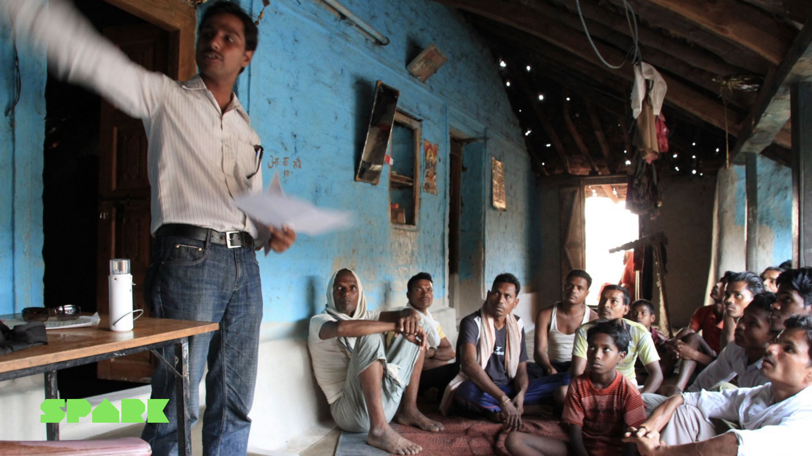
Welke experimenten je in Validation inzet, hangt af van welke dimensie je wil bevestigen. Voor de haalbaarheid (kun je het bouwen of leveren?) en de levensvatbaarheid (kun je er geld mee verdienen?) staan in Businessideeën testen Deel 3.3 (p. 231-312) tientallen Validation-experimenten uitgewerkt. Voor elk experiment vind je: wat het toetst, hoe je het opzet, wat sterk en wat zwak bewijs is, en wanneer je het inzet ten opzichte van andere experimenten. Net als in sessie 4 geldt: de reader herschrijft die experimenten niet, het boek doet dat al uitstekend. Gebruik Deel 3.3 als je validation-bibliotheek.
Recap uit jaar 1: een hypothese blijft de basis van elk experiment. Ze is testbaar (met ja of nee te beantwoorden), nauwkeurig (wie, wat, wanneer is specifiek benoemd) en discreet (slechts 1 variabele tegelijk). Een goede vorm: "Wij geloven dat [doelgroep] [gedrag] doet onder [omstandigheid] met als succescriterium [getal]."
Spark's klantfasering, Fase 1 (kleine pilot) → Fase 2 (eerste grote order met Access to Finance) → Fase 3 (doorlopende afname), is niet alleen een experimentenladder, ook een ladder van bewijskracht. Elke fase verhoogt wat Spark zeker weet: na Fase 1 is haalbaarheid bewezen (het werkt in een dorp), na Fase 2 is levensvatbaarheid bewezen (de partner durft een grote order te plaatsen als de financiering rond is), en pas in Fase 3 is duurzame product-marktfit bewezen (de partner blijft bestellen, ronde na ronde). Eenzelfde structuur, gelezen door een andere lens.
3 · Vanity metrics versus actionable metrics
Hoe je ook test, je hebt cijfers nodig om iets te kunnen concluderen. En daar ligt een valkuil. Eric Ries (2011) introduceerde het onderscheid tussen vanity metrics en actionable metrics. Een vanity metric is een getal dat er goed uitziet maar geen beslissing onderbouwt. Een actionable metric is een getal dat je laat zien wat je moet doen.
Klassieke voorbeelden:
- Totaal aantal bezoekers van je website (vanity), het stijgt vanzelf als je marketing doet, maar zegt niets over de waarde van de bezoekers. Conversiepercentage (actionable) zegt wel iets: van de bezoekers, hoeveel doen wat je wil?
- Totaal aantal volgers op social media (vanity), leuke vlag op een groeiend bedrijf, maar volgers zijn geen klanten. Engagement-percentage onder volgers (actionable) laat zien of die volgers ergens om geven.
- Totaal aantal downloads van je app (vanity), downloads zijn een eenmalig gebaar. Daily active users of 7-dagen-retentie (actionable) zegt of mensen echt iets met je product doen.
De regel die je kunt onthouden: kun je op basis van dit cijfer een andere keuze maken dan voorheen? Zo niet, dan is het vermoedelijk een vanity metric. Hoe doe je dat dan goed? 3 vuistregels van Ries (2011):
- Werk met ratio's, niet met absolute aantallen. "32% van de bezoekers konverteert" is veel zeggender dan "1.247 bezoekers". Ratio's blijven betekenisvol terwijl je opschaalt.
- Werk met cohorten. Een cohort is een groep gebruikers die op hetzelfde moment binnenkwam. Door cohorten te vergelijken (gebruikers van januari versus gebruikers van februari) zie je of je veranderingen écht effect hebben, of dat je oudere succescijfers de nieuwe maskeren.
- Maak je metric voorspellend. Een goede metric vertelt je niet alleen wat er gisteren gebeurde, maar wat er morgen waarschijnlijk gaat gebeuren. Retentie na 7 dagen voorspelt retentie na 1 jaar; downloads niet.
Werk je met kwalitatieve data, interviewnotities, observatiedagboeken, open antwoorden uit enquêtes, dan gelden vergelijkbare regels. Een paar enthousiaste citaten zijn nog geen patroon. Pas wanneer je een terugkerend thema ziet in meerdere onafhankelijke gesprekken, of wanneer je tegen verwachting in altijd dezelfde bezwaren tegenkomt, heb je een aanwijzing. Kwalitatieve analyse vraagt geduld: alle interviews coderen op terugkerende thema's, niet de eerste 2 quotes als representatief nemen.
Een goede metric in Spark's keten was niet "hoeveel kits hebben we verkocht?", dat is een vanity-getal dat met campagnes makkelijk omhoog gaat. De actionable metric die bewees dat het ondernemingsmodel werkte was: welk percentage van de eindgebruikers blijft hun maandelijkse termijn betalen? Malango Washikala, CEO van Spark's distributiepartner Altech in DRC, vertelt het zelf: "the repayment rate was almost 99%. So we said 'okay let us scale it!'" Dat is een voorspellend getal: als bijna 99% van de eindgebruikers in een dorp na een paar maanden nog steeds netjes hun termijn afdraagt, weet je dat het kredietmodel klopt en dat opschalen kan. Als je vooral op het aantal aangesloten kits had gelet, had je je verschrikkelijk kunnen vergissen.
4 · Van n=1 naar Proof-of-Concept
De openingsscène van dit hoofdstuk illustreert het kernbegrip van deze sectie. Eén tevreden klant geeft je n=1, een steekproef van 1 persoon. Dat is genoeg om te weten dat het in één situatie heeft gewerkt. Het is niet genoeg om te weten of het bij andere klanten ook werkt, en niet genoeg om te weten of het blijft werken als de omstandigheden veranderen.
De volgende stap is om n>1 te maken: dezelfde test herhalen bij een nieuwe klant, in een nieuwe context, met een andere variabele. Werkt het ook bij die tweede klant? Bij die tiende? Pas wanneer een patroon zich over een grotere groep en over tijd herhaalt, spreek je van een Proof-of-Concept (PoC). Een PoC is een werkend bewijs dat het concept in de praktijk levert wat het belooft, niet alleen één keer, niet alleen onder ideale omstandigheden.
De volgorde is dus: idee → aanname → 1 test (Discovery, n=1) → herhaaltests (Validation, n>1) → Proof-of-Concept. Per stap loopt de bewijskracht omhoog en wordt het risico voor je opdrachtgever kleiner.
Wat hoort er bij een goede Proof-of-Concept?
- Voldoende observaties om individuele uitschieters niet door te laten slaan. Dat hoeft geen statistische steekproef te zijn, voor een ORM-opdracht zijn 5 tot 15 onafhankelijke observaties al een prima basis, als ze zorgvuldig zijn opgezet.
- Variatie in context, verschillende klanten, verschillende momenten, verschillende kanalen. Zonder variatie weet je niet of het signaal robuust is.
- Tijd, de PoC houdt over enige tijd stand. Iets dat in week 1 werkte maar in week 4 instortte, is geen PoC.
- Een specifiek meetbaar resultaat dat je vooraf hebt vastgelegd. Wat is "geslaagd"? Bijvoorbeeld: 80% van de testers herhaalt het gebruik binnen 14 dagen.
De openingscène met de neef die de kit overnam, illustreert iets subtiels. Spark verloor zijn eerste klant, maar de kit bleef draaien. Dat is een sterker signaal dan een eerste klant die het 2 jaar lang gelukkig blijft gebruiken. Een product dat overleeft als de oorspronkelijke gebruiker uitvalt, heeft een systeem-eigen waarde. Dat is precies wat je in een PoC zoekt: bewijs dat het idee draagt in de bredere context, niet alleen bij de welwillende eerste gebruiker.
Interview met Spark uit 2016, midden in de iteratieperiode tussen eerste pilots en industrialisatie. Hoor hoe Spark op dat moment het bewijs opbouwde: stap voor stap meer partners, meer kits, meer geleerd over wat wel en niet schaalbaar is.
5 · Pivot, persevereer, of itereren
Aan het eind van elke cyclus sta je voor 1 van 3 keuzes. Ries (2011) noemt ze in The Lean Startup bij naam:
- Persevereer (volharden), je hypothese werd bevestigd, je koers klopt. Je gaat door met de volgende kritieke aanname, of je schaalt op met meer Validation-experimenten.
- Itereren, je hypothese werd grotendeels bevestigd, maar de details moeten beter. Je past het experiment of het prototype aan en doet de volgende ronde. De richting blijft, de uitvoering verandert.
- Pivot, je hypothese werd weerlegd, of er kwam onverwacht een sterker signaal in een andere richting. Een pivot is een fundamentele koerswijziging: je verandert van klantsegment, van waardepropositie, van verdienmodel of van technologie. Eén ding houd je vast, meestal je missie of het probleem dat je oplost. Al het andere zet je opnieuw op.
Het verschil tussen iteratie en pivot wordt vaak verkeerd begrepen. Een pivot is niet "we maken de knop blauw in plaats van rood". Dat is een iteratie. Een pivot is "we verkopen niet meer aan eindgebruikers maar aan distributiepartners". De vraag die je jezelf kunt stellen: welk bouwblok van mijn Business Model Canvas moet wezenlijk anders? Eén bouwblok aanpassen is meestal iteratie. Meerdere bouwblokken tegelijk omgooien, vooral klantsegment of waardepropositie, is een pivot.
Het Spark-verhaal bevat een goed voorbeeld van iteratie versus pivot. De BOM-ontdekking, het échte probleem was niet techniek maar klantfinanciering, leidde tot een pivot: niet alleen kits verkopen, maar ook financiering aanbieden via het Access to Finance programma. Klantsegment verschoof van eindgebruiker naar lokale distributiepartner; de waardepropositie kreeg er een bouwblok bij. Daarna volgden alleen nog iteraties: kit verbeteren, batterij vergroten, financieringsvoorwaarden bijschaven.
Beslissen tussen de 3 opties doe je niet op gevoel, maar tegen een vooraf vastgelegd stop-criterium. Dat is de drempelwaarde waarop je zegt: "als we dit niet halen, gaan we niet door zoals nu." Bijvoorbeeld: "als minder dan 30% van de testers in deze cohort de oplossing een tweede keer gebruikt, dan pivoteren we." Door de norm vooraf vast te leggen voorkom je dat je het succescijfer achteraf bijbuigt om je oorspronkelijke richting te kunnen verdedigen. Dat is de hardste vorm van zelfbedrog in deze fase.
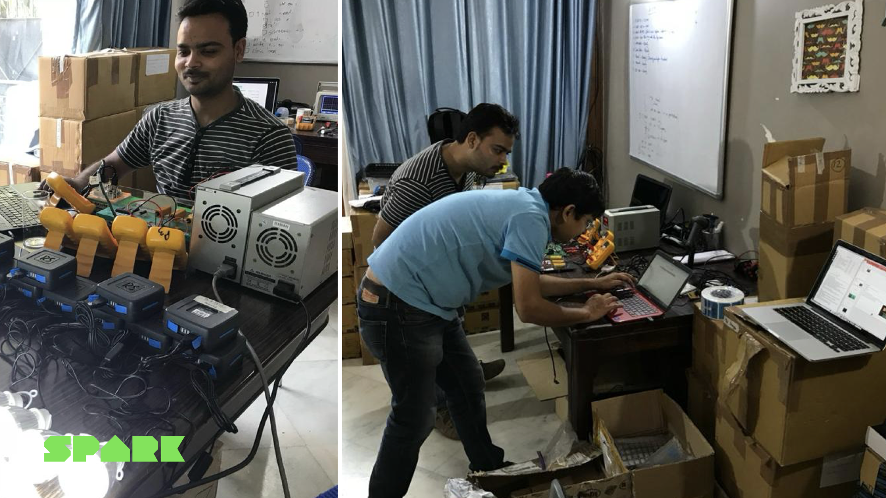
Een treffend voorbeeld van een verschuivende kritieke aanname bij Spark: zodra de PoC voor klantgebruik rond was, verschoof het zwaartepunt. Harmen: "Als je dan je Proof-of-Concept hebt dat mensen het willen gebruiken en blijven betalen, kom je erachter dat je zwaar verlies maakt omdat je producten te duur zijn als je in Nederland of Europa produceert. Dan is de vraag niet meer 'gaan mensen het gebruiken', die is beantwoord. Dan is de vraag: kunnen we het financieel aantrekkelijk maken en houden?" Daarvoor was de Engie-equity nodig om de productie in India en China te industrialiseren. Geen pivot, geen iteratie op de oude vraag, een nieuwe kritieke aanname op de volgende laag.
6 · Conflicterende en negatieve feedback verwerken
Hoe meer mensen je in deze fase bij je idee betrekt, hoe groter de kans dat feedback tegenstrijdig is. Een investeerder ziet kansen in een richting die jouw klant niet noemde. Je opdrachtgever wil graag een feature waar je peerteam scepsis over uitspreekt. Je peerteam wijst je op een risico dat de gebruiker zelf niet ervaart. Dit is geen verstoring van het proces, dit is het proces. Conflicterende feedback is in deze fase regel, geen uitzondering.
Het boek Thanks for the Feedback van Stone en Heen (2014) maakt 2 nuttige onderscheiden. Ten eerste: er zijn 3 soorten feedback. Waardering ("dit is goed werk"), coaching ("zo kun je het beter doen") en evaluatie ("dit niveau haal je"). Verwarring ontstaat vaak doordat je iets als coaching brengt terwijl de ander het hoort als evaluatie, of omgekeerd. Vraag je daarom bij elk stuk feedback expliciet af: welk soort is dit, en welk soort had ik nodig?
Ten tweede beschrijven Stone en Heen 3 triggers waardoor feedback bij jou op weerstand stuit:
- Waarheids-trigger, je vindt de inhoud niet kloppen. "Dat klopt niet, want…"
- Relatie-trigger, je hebt moeite met de persoon die de feedback geeft. "Wie ben jij om dit tegen me te zeggen?"
- Identiteits-trigger, de feedback raakt aan wie je bent of wil zijn. "Als dat waar is, ben ik geen goede ondernemer."
Het herkennen van welke trigger bij jou geraakt wordt, helpt je om de feedback alsnog op inhoud te beoordelen in plaats van haar weg te schuiven. Het werkt ook andersom: als je merkt dat anderen feedback van jou afslaan, kun je je afvragen welke trigger je per ongeluk hebt geraakt.
Voor conflicterende feedback, verschillende mensen zeggen verschillende dingen, helpt het om 3 vragen langs te lopen:
- Hoort de feedback bij het gevalideerde probleem? Feedback die wegloopt van de werkelijke pijn van de eindgebruiker mag je relatief lichter wegen, ook al komt ze van een belangrijke stakeholder.
- Wat zegt de data? Eén stem die afwijkt van een patroon in je metingen weegt minder zwaar dan een stem die het patroon bevestigt. Maar pas op: soms is die afwijkende stem juist het vroege signaal dat je patroon dadelijk gaat veranderen. Bekijk altijd of er een logische reden is waarom deze stakeholder iets anders ziet.
- Wat is de motivatie achter de feedback? Een investeerder optimaliseert op rendement, een klant op gebruiksgemak, een opdrachtgever op interne haalbaarheid. Zelfde feiten, andere belangen. Door de motivatie te benoemen kun je de feedback wegen tegen het belang dat erachter zit, zonder de feedback meteen af te schrijven.
Spark kreeg ooit van een investeerder de suggestie om naast solar-kits ook cookstoves (kookkachels) te leveren. Aantrekkelijk op papier, maar buiten de missie. Spark legde de suggestie terecht naast zich neer. Maar er is ook feedback die ze achteraf onterecht hebben laten liggen. Harmen: "Ik denk dat wij misschien wel eerder de stap naar Afrika hadden moeten zetten. Dat hadden we wel eerder gehoord, maar India leek op papier zo'n goede markt, een groot land, dus 1 markt, dachten wij. In Afrika is dat heel anders, dus daar hadden we misschien wel eerder naar moeten luisteren." 2 stukken externe feedback, eentje terecht genegeerd, eentje onterecht. Het verschil maakte uiteindelijk de toets aan de missie en aan wat distributiepartners daadwerkelijk nodig hadden.
Specifiek voor feedback binnen je studententeam is er nog een aandachtspunt: peerfeedback. Feedback van medestudenten verloopt soepeler in een team waar psychologische veiligheid (Edmondson, 2018) heerst, een klimaat waarin het normaal is om te zeggen "ik twijfel hieraan", of "dit lukt me niet". Twee praktische tips: scheid de inhoud van de persoon ("dit experiment is volgens mij te smal opgezet" werkt beter dan "jij hebt dit niet goed gedaan"), en geef feedback in de vorm van een vraag waar het kan ("hoe weet je dat dit signaal niet door iets anders verklaard wordt?"). Vraagvormen nodigen uit tot doordenken in plaats van verdedigen.
7 · Mindset voor de experimenterende organisatie
Businessideeën testen sluit af met Deel 4 Mindset (p. 313-328). De boodschap van dat deel: methode is niet genoeg. Een team kan alle test-formulieren correct invullen en toch onder zelfbedrog bezwijken als de mindset niet klopt. Voor de kennistoets is dit Deel 4 verplichte stof. Voor je werk als professional is het waarschijnlijk de meest waardevolle inhoud van het hele boek.
De 3 hoofdstukken van Deel 4 staan elk voor een aandachtsgebied:
- 4.1 Valkuilen vermijden (p. 313), over typische denkvalkuilen tijdens valideren. Bevestigingsneiging (alleen bewijs zoeken dat je idee ondersteunt), sunk cost-fout (doorgaan omdat je al veel hebt geïnvesteerd), te snelle conclusies trekken uit weinig data. Wat de auteurs aanbieden is geen lijstje te vermijden zonden, het is een spiegel die je voor jezelf moet ophangen op terugkerende momenten in het proces.
- 4.2 Leiden en experimenteren (p. 317), over leiderschap in een experimenterende organisatie. Hoe stel je je op als teamleider of opdrachtgever zodat experimenten goed werk kunnen leveren? Wat voor soort beslissingen pak je zelf op, en wat laat je over aan het experiment-resultaat? Centraal staat hier: het bewijs leidt, niet de mening van de hoogstgeplaatste.
- 4.3 Experimenten mogelijk maken (p. 323), over de praktische voorwaarden die experimenten kansrijk maken. Tijd vrijmaken, budget toewijzen, ruimte voor mislukking creëren, leerresultaten zichtbaar maken voor de organisatie. Zonder die voorwaarden lopen ook scherp ontworpen experimenten dood op de aandachtsspanne en het bureaucratische gewicht van de organisatie.
De inhoud van Deel 4 herschrijft de reader niet, voor de kennistoets pak je de bladzijden p. 313-328 erbij. Houd vooral de typeringen van de valkuilen scherp: die komen in de oefenvragen terug in de vorm "welke valkuil is hier aan het werk?"
De 3 valkuilen die je in deze fase het vaakst tegenkomt (vrij naar Businessideeën testen, p. 313):
- Bevestigingsneiging, je zoekt vooral naar bewijs dat je gelijk hebt en negeert signalen die je ongelijk geven. Tegengif: formuleer vooraf wat het bewijs zou zijn dat je ongelijk hebt en zoek daar actief naar.
- Sunk cost-fout, je gaat door omdat je al zoveel hebt geïnvesteerd. Tegengif: alle beslissingen voor de toekomst gaan over toekomstige kosten en baten. Het verleden is een gegeven, geen argument.
- Overhaaste conclusie, je trekt na 1 test al een algemene les. Tegengif: vraag jezelf elke keer of je conclusie ook stand zou houden bij de volgende 5 gebruikers, in een andere context, op een ander moment.
8 · Van resultaten naar business case voor je opdrachtgever
Tot nu toe ging dit hoofdstuk over jou en je team. Je opdrachtgever heeft de gesprekken niet bijgewoond, de cohorten niet zelf bekeken en de iteraties niet meegemaakt. Toch is hij of zij degene die uiteindelijk een beslissing neemt over de oplossing die jij voorstelt. Daarom hoort bij deze fase een belangrijk onderdeel: de business case voor je opdrachtgever.
Een business case is een onderbouwd voorstel waarmee je de opdrachtgever helpt om een beslissing te nemen. Niet jouw enthousiasme, maar het bewijs dat je hebt opgebouwd staat centraal. Een werkbare structuur is in deze fase:
- Het probleem, wat is de pijn die we hebben gevalideerd? Bij welke doelgroep speelt het, en hoe groot is het probleem in cijfers of citaten?
- De voorgestelde oplossing, wat is het concept dat hierop antwoord geeft? Welke kernfuncties heeft het, en waarom passen die specifiek bij dit probleem?
- Het bewijs, welke aannames hebben we getoetst, met welke experimenten, en wat is uitgekomen? Hier presenteer je je cohorten, je conversiecijfers, je quotes uit klantinterviews. Eerlijk over wat sterk en wat zwak bewijs is.
- Risico's en open punten, wat weten we nog niet? Welke aannames zijn nog onbeproefd? Welke randvoorwaarden moeten kloppen om de oplossing te laten werken? Open zijn over onzekerheid maakt je voorstel sterker, niet zwakker.
- Kosten en baten, wat kost de implementatie, wat levert het op? Niet alleen financieel: ook in tijd, in personele inzet, en in maatschappelijke of organisatorische winst.
- Aanbeveling, wat raden we aan? Wat zou de logische volgende stap zijn? Eén concreet besluit dat de opdrachtgever kan nemen.
Een goede business case is voor je opdrachtgever wat een PoC voor jou is. Het is bewijs in begrijpelijke vorm, in plaats van een verzameling losse signalen. En het is gestructureerd rond de beslissing die je opdrachtgever moet nemen, niet rond het proces dat jij hebt doorlopen.
Pitchen en presenteren hangt nauw samen met je business case. Het verhaal dat je vertelt voor 1 opdrachtgever in een rustige werkkamer is een ander verhaal dan dat je vertelt voor een directieteam, een raad van toezicht of een breder werkveld. Algemene principes om vast te houden:
- Stem af op je publiek, wat is hun belang, hun voorkennis, hun tijd? Een directielid heeft 5 minuten en wil weten "kunnen we hiermee verder?" Een vakgenoot heeft een uur en wil de methode bekijken.
- Begin met de uitkomst, niet met het proces, onder druk wil je publiek eerst weten waar het op uitkomt. De methode kunnen ze achteraf bevragen.
- Maak het bewijs concreet, een citaat van een eindgebruiker is sterker dan een gemiddeld cijfer. Een korte demo zegt meer dan 3 slides theorie.
- Wees eerlijk over wat je niet weet, een professional die zijn onzekerheid benoemt komt overtuigender over dan iemand die overal zekerheid claimt.
In sessie 6 ga je dieper in op meervoudige waarde (economisch, sociaal, ecologisch) en op je eigen reflectie op het proces. Voor deze fase geldt: je business case is de brug tussen wat je hebt geleerd en wat je opdrachtgever ermee kan.
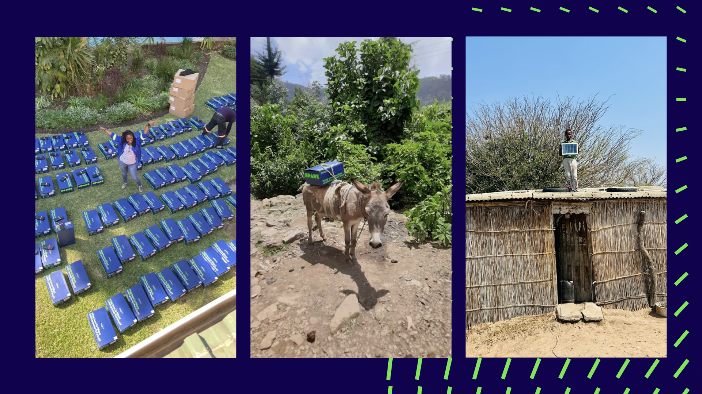
In de testfase produceer je veel ruwe data en losse signalen. AI kan helpen om die te ordenen en te vertalen naar een volgende stap:
- Iteratie-GPT, analyseert je testresultaat en vertaalt het naar een volgende stap (doorgaan, aanpassen of stoppen).
Belangrijk: AI ziet patronen in je data, maar de duiding blijft van jou. Een sterke aanname kun je niet weglaten omdat AI zegt dat de cijfers het niet ondersteunen, of andersom: AI overzien.
Veelgemaakte fouten in deze fase
- Eén tevreden klant als bewijs nemen. n=1 is een vertrekpunt, geen conclusie. Werk door naar n>1 en bouw op naar een Proof-of-Concept.
- Vanity metrics rapporteren. Totaal aantal volgers, downloads of bezoekers ziet er goed uit, maar zegt niets. Werk met ratio's, cohorten en voorspellende getallen.
- Te snel pivoteren bij tegenvallers. Niet elke teleurstellende cyclus vraagt een fundamentele koerswijziging. Vaak is iteratie genoeg. Vraag: welk bouwblok moet wezenlijk anders?
- Te lang doorgaan met een aanname die niet klopt (sunk cost-fout). Het tegenovergestelde van de vorige fout. Tegengif: stop-criteria vooraf vastleggen.
- Bevestigingsneiging. Je test om je gelijk te krijgen in plaats van om de waarheid te ontdekken. Tegengif: formuleer vooraf wat het bewijs zou zijn dat je ongelijk hebt.
- Alle externe feedback even zwaar wegen. Of juist alle externe feedback wegwuiven omdat "we het zelf het beste weten". Zoek de balans: weeg op gevalideerd probleem, op data en op motivatie.
- De business case verwarren met een rapport over je proces. Je opdrachtgever heeft geen behoefte aan het verslag van jouw maand. Hij wil weten: wat is het bewijs, wat is mijn beslissing, wat is de aanbeveling.
- De stopcriteria pas achteraf formuleren. Zodra je de drempel pas achteraf bepaalt, ga je hem onbewust afstemmen op het resultaat dat je wil zien. Vooraf vastleggen is daarom de hardste discipline van deze fase.
AI-tools en proces-instrumenten die je in deze fase kunnen helpen.
- Voor stap 4 en 5 van het Startup Launch Path zijn 2 AI-tools beschikbaar: Iteratie-GPT (helpt je losse testresultaten te bundelen tot een patroon en een vervolgactie te formuleren) en de BMC Generator (helpt je je gevalideerde inzichten te vertalen naar een aangepast Business Model Canvas).
- Voor het analyseren van kwalitatieve interviewdata kan ChatGPT helpen bij het coderen, vraag bijvoorbeeld om terugkerende thema's te identificeren in 5 interviewverslagen. Belangrijk: behandel de uitkomst als hypothese over je data, niet als waarheid. De codes verifieer je altijd zelf door de oorspronkelijke citaten erbij te pakken.
- Werk je aan een procesvraagstuk (denk: doorlooptijd terugbrengen in een werkstroom, fouten reduceren in een dienst), dan zijn Lean Six Sigma-instrumenten zoals PDCA (Plan-Do-Check-Act, de generieke voorganger van Build-Measure-Learn), DMAIC (Define-Measure-Analyze-Improve-Control), SIPOC (proces-overzicht in vogelvlucht) en swimlane-diagrammen nuttige aanvullingen. Ze zijn geen vervanging voor Businessideeën testen, ze passen vooral bij Validation in een procescontext en niet bij productvalidatie. Voor de kennistoets is alleen Businessideeën testen verplichte stof.
Gebruik AI ook om snel een eerste versie van een testkaart of leerkaart te genereren, maar het bewijs zelf komt altijd van echte mensen en echte data.
Samenvatting + checklist
Wat moet je na dit hoofdstuk kunnen?
- De Build-Measure-Learn cyclus als doorgaande discipline toelichten, niet als eenmalige actie, maar als werkritme
- Het verschil uitleggen tussen Discovery-experimenten (sessie 4) en Validation-experimenten (sessie 5) qua schaal, controle en bewijskracht
- De schaal van bewijskracht beschrijven: van mening naar gedrag naar betaling naar herhaalgedrag
- Uitleggen wat Businessideeën testen in Deel 3.3 Valideren (p. 231-312) biedt en wanneer je het inzet
- Vanity metrics en actionable metrics van elkaar onderscheiden, met voorbeelden
- De 3 vuistregels voor goede metrics noemen: ratio's in plaats van absolute aantallen, cohorten, voorspellende waarde
- Het begrip Proof-of-Concept definiëren en uitleggen hoe je van n=1 naar n>1 naar PoC opschaalt
- De 3 keuzes na een leer-cyclus benoemen: persevereer, itereren of pivot, en het verschil tussen iteratie en pivot toelichten
- Uitleggen waarom een stop-criterium vooraf vastgelegd moet worden, en wat er misgaat als dat niet gebeurt
- De 3 soorten feedback van Stone en Heen (2014) noemen: waardering, coaching, evaluatie
- De 3 feedback-triggers van Stone en Heen (2014) herkennen: waarheid, relatie, identiteit
- Een werkbare aanpak voor conflicterende feedback toepassen (gevalideerd probleem, data, motivatie)
- Het belang van psychologische veiligheid (Edmondson, 2018) voor peerfeedback toelichten
- De 3 onderdelen van Deel 4 Mindset (p. 313-328) noemen en uitleggen wat ze inhouden: valkuilen vermijden (4.1), leiden en experimenteren (4.2), experimenten mogelijk maken (4.3)
- 3 typische denkvalkuilen in deze fase herkennen: bevestigingsneiging, sunk cost-fout, overhaaste conclusie
- De opbouw van een business case voor een opdrachtgever beschrijven in 6 onderdelen
- Uitleggen waarom je je presentatie afstemt op je publiek (klein team versus directie versus breder werkveld)
Oefenvragen voor de kennistoets
20 vragen in MC-vorm, vergelijkbaar met wat je op de toets kunt verwachten. Klik op een vraag om het antwoord met uitleg te zien.
1. Wat is het belangrijkste verschil tussen Discovery-experimenten en Validation-experimenten?
- Discovery-experimenten worden uitgevoerd in een laboratorium, Validation-experimenten in de praktijk.
- Discovery-experimenten toetsen of een aanname überhaupt klopt (vroege fase, snel en goedkoop); Validation-experimenten leveren sterker bewijs met meer gebruikers, meer controle en hogere betrouwbaarheid.
- Discovery-experimenten zijn altijd kwalitatief, Validation-experimenten altijd kwantitatief.
- Er is geen wezenlijk verschil, beide termen worden door elkaar gebruikt.
2. Welk type signaal is volgens de schaal van bewijskracht het sterkst?
- Een gebruiker zegt dat hij je idee leuk vindt.
- Een gebruiker klikt op je inschrijfknop op een landingspagina.
- Een gebruiker doet eenmalig een aankoop.
- Een gebruiker komt terug, betaalt opnieuw en beveelt het aan bij anderen.
3. Wat is een vanity metric volgens Eric Ries (2011)?
- Een getal dat alleen gebruikt wordt door marketingafdelingen.
- Een getal dat er goed uitziet maar geen beslissing onderbouwt, bijvoorbeeld het totaal aantal volgers of downloads zonder context.
- Een getal dat alleen door grote bedrijven gebruikt wordt en niet door startups.
- Een getal dat alleen op kwartaalbasis wordt gerapporteerd.
4. Welke vuistregel hoort NIET bij goede metrics volgens Ries (2011)?
- Werk met ratio's, niet alleen met absolute aantallen.
- Werk met cohorten om te zien of veranderingen écht effect hebben.
- Zorg dat je metric voorspellend is, niet alleen beschrijvend.
- Rapporteer altijd het totaal aantal gebruikers vanaf de start van het project.
5. Wat is een Proof-of-Concept in deze context?
- Een academisch artikel dat de werking van je concept beschrijft.
- Een eerste klantgesprek waarin iemand aangeeft je idee interessant te vinden.
- Een werkend bewijs dat het concept in de praktijk levert wat het belooft, niet alleen één keer, niet alleen onder ideale omstandigheden, maar herhaalbaar en over tijd.
- Een volledig afgewerkt eindproduct dat klaar is voor opschaling naar honderdduizenden gebruikers.
6. Wat onderscheidt een pivot van een iteratie?
- Een iteratie kost meer tijd dan een pivot.
- Een iteratie verandert details binnen dezelfde richting; een pivot is een fundamentele koerswijziging, bijvoorbeeld van klantsegment, waardepropositie of verdienmodel.
- Een pivot is altijd vrijwillig; een iteratie is altijd gedwongen.
- Een pivot doe je alleen onder druk van een investeerder; een iteratie kan vanuit jezelf komen.
7. Waarom moet een stop-criterium vooraf worden vastgelegd?
- Omdat het aan de investeerders moet worden voorgelegd.
- Omdat je anders na afloop het succescijfer onbewust gaat afstemmen op het resultaat dat je wil zien, een vorm van zelfbedrog die je oorspronkelijke richting beschermt tegen tegenbewijs.
- Omdat het wettelijk verplicht is bij wetenschappelijk onderzoek.
- Omdat je dan de duur van het experiment kunt voorspellen.
8. Welke 3 soorten feedback onderscheiden Stone en Heen (2014)?
- Positief, negatief, neutraal.
- Verbaal, schriftelijk, non-verbaal.
- Waardering, coaching, evaluatie.
- Inhoudelijk, procedureel, relationeel.
9. Wat is een identiteits-trigger volgens Stone en Heen (2014)?
- Een vorm van afweer die ontstaat omdat je het inhoudelijk niet eens bent met de feedback.
- Een vorm van afweer die ontstaat omdat je moeite hebt met de persoon die de feedback geeft.
- Een vorm van afweer die ontstaat omdat de feedback raakt aan wie je bent of wil zijn.
- Een vorm van afweer die alleen voorkomt bij studenten en niet bij professionals.
10. Welke vraag is GEEN goede leidraad voor het wegen van conflicterende feedback?
- Past de feedback bij het gevalideerde probleem van de eindgebruiker?
- Wat zegt de data, bevestigt deze feedback een patroon of staat ze op zichzelf?
- Wat is de motivatie achter de feedback, welk belang dient deze stakeholder?
- Hoeveel sociale invloed heeft de gever van de feedback binnen ons team?
11. Wat is psychologische veiligheid in een team (Edmondson, 2018)?
- Een fysiek veilige werkomgeving waarin geen arbeidsongevallen plaatsvinden.
- Een klimaat waarin het normaal is om twijfels uit te spreken, fouten te benoemen en kritische vragen te stellen zonder sociale schade.
- Een werkomgeving waarin alle teamleden dezelfde mening delen om conflict te voorkomen.
- Een vorm van privacybescherming bij het delen van klantgegevens.
12. Waar vind je in Businessideeën testen de Validation-experimenten voor haalbaarheid en levensvatbaarheid?
- Deel 2, Test, hoofdstuk 2.1 Hypotheses formuleren (p. 27).
- Deel 3.2, Ontdekken (p. 101-230).
- Deel 3.3, Valideren (p. 231-312).
- Deel 4, Mindset, hoofdstuk 4.1 Valkuilen vermijden (p. 313).
13. Welke 3 hoofdonderdelen heeft Deel 4 Mindset van Businessideeën testen?
- Motivatie, focus, doorzettingsvermogen.
- Valkuilen vermijden (4.1), Leiden en experimenteren (4.2), Experimenten mogelijk maken (4.3).
- Empathie, creativiteit, samenwerking.
- Ontwerpen, testen, evalueren.
14. Welke denkvalkuil herken je in deze situatie? "We hebben al 4 maanden in dit idee geïnvesteerd. We kunnen nu niet meer stoppen."
- Bevestigingsneiging.
- Sunk cost-fout.
- Overhaaste conclusie.
- Vanity metric-fout.
15. Welke denkvalkuil herken je in deze situatie? "Onze testresultaten lieten 3 keer hetzelfde signaal zien dat we hadden voorspeld. Dat is genoeg bewijs, we gaan opschalen."
- Sunk cost-fout.
- Bevestigingsneiging gecombineerd met overhaaste conclusie.
- Conflict-vermijding.
- Vanity metric-fout.
16. Wat is het verschil tussen n=1 en een Proof-of-Concept?
- n=1 staat voor "negative 1", een gefaalde test. Een Proof-of-Concept is een geslaagde test.
- n=1 is een steekproef van 1 persoon, een vertrekpunt. Een Proof-of-Concept is herhaalbaar bewijs over meer gebruikers, meer context en meer tijd.
- n=1 betekent dat de test 1 dag duurde. Een Proof-of-Concept duurt minimaal 1 maand.
- Er is geen verschil, beide termen staan voor hetzelfde.
17. Wat is een werkbare structuur voor een business case voor de opdrachtgever?
- Een chronologisch verslag van alle werkzaamheden die het team heeft uitgevoerd, in volgorde van uitvoering.
- Een onderbouwd voorstel rond een te nemen beslissing: probleem, voorgestelde oplossing, bewijs, risico's, kosten en baten, aanbeveling.
- Een visueel pitchdeck met maximaal 3 woorden per slide.
- Een statistische analyse met confidence intervals en p-waarden.
18. Welke aanpak past het beste bij een presentatie aan een directieteam dat 5 minuten beschikbaar heeft?
- Eerst de volledige methodologie uitleggen, daarna de uitkomsten.
- Eerst de uitkomst en de aanbeveling presenteren, daarna ruimte voor vragen over methode en bewijs.
- Een uitgebreid theoretisch kader presenteren met verwijzingen naar academische literatuur.
- Alle data zonder context laten zien zodat het team zelf conclusies kan trekken.
19. Wanneer is loslaten van een aanname een waardevol leerresultaat?
- Nooit, als je een aanname loslaat is je hele proces mislukt.
- Alleen als je opdrachtgever ermee instemt.
- Wanneer meerdere zorgvuldig opgezette experimenten dezelfde aanname niet hebben kunnen bevestigen, en je daardoor weet welke richting niet werkt, bespaarde toekomst-investeringen zijn ook waarde.
- Alleen als je een alternatief idee paraat hebt om in te wisselen.
20. Welke uitspraak over feedback klopt het best?
- Goede teams nemen alle externe feedback over om openheid te tonen.
- Goede teams negeren externe feedback om hun eigen visie zuiver te houden.
- Goede teams wegen elke vorm van feedback op gevalideerd probleem, op data en op de motivatie van de gever, en kunnen op basis daarvan onderbouwd kiezen om wel of niet te volgen.
- Goede teams volgen altijd de feedback van de meest senior stakeholder.
Toetswijzer voor dit hoofdstuk
Voor de kennistoets moet je de inhoud van dit hoofdstuk kennen, plus de volgende delen uit Businessideeën testen:
- De inhoud van dit hoofdstuk, begrippen, modellen, methoden, veelgemaakte fouten en de checklist hierboven.
- Deel 3.3, Valideren: Haalbaarheids- en Levensvatbaarheidsexperimenten (p. 231-312). Welke Validation-experimenten bestaan er voor haalbaarheids- en levensvatbaarheidsaannames? Hoe zet je ze op, wat is sterk versus zwak bewijs, wanneer kies je het ene boven het andere?
- Deel 4, Mindset (p. 313-328). Alle 3 de hoofdstukken: 4.1 Valkuilen vermijden (p. 313), 4.2 Leiden en experimenteren (p. 317), 4.3 Experimenten mogelijk maken (p. 323). Wat zijn de typische denkvalkuilen, hoe stuur je een experimenterende organisatie aan, welke voorwaarden maken experimenten kansrijk?
De wenselijkheidsexperimenten uit Deel 3.3 (klantinterview, observatie, storyboard etc. in Validation-vorm) zijn variaties op de jaar-1-stof. Focus jouw studie op de haalbaarheids- en levensvatbaarheidsexperimenten. De overige titels in de bibliografie hieronder staan erbij voor wie zich verder wil verdiepen.
Bronnen
Toetsstof uit Businessideeën testen (nieuw in jaar 2)
- Bland, D. J., & Osterwalder, A. (2020). Businessideeën testen. Management Impact. ISBN 9789462763838. Deel 3.3 Valideren, haalbaarheids- en levensvatbaarheidsexperimenten (p. 231-312) en Deel 4 Mindset volledig (p. 313-328). Online via Avans Boom Portaal of in je eigen exemplaar uit jaar 1.
Verder lezen, voor wie zich verder wil verdiepen
- Deming, W. E. (1986). Out of the crisis. MIT Press.
- Edmondson, A. C. (2018). The fearless organization: Creating psychological safety in the workplace. Wiley.
- Lean Six Sigma Groep. (z.d.). DMAIC, SIPOC, swimlane, makigami. https://leansixsigmagroep.nl
- Maurya, A. (2012). Running lean: Iterate from plan A to a plan that works (2e ed.). O'Reilly.
- Ries, E. (2011). The lean startup: How today's entrepreneurs use continuous innovation to create radically successful businesses. Crown Business.
- Stone, D., & Heen, S. (2014). Thanks for the feedback: The science and art of receiving feedback well. Viking.
- Van Heist, H. (2016). Spark, stand van zaken interview [Video]. YouTube. https://youtu.be/1wvMBTpuozw
- Washikala, M. (z.d.). In the field, Spark partnership Altech [Video]. Spark Inc. https://youtu.be/rf-VtMc8dX0
Opleveren & reflectie
Overtuig de opdrachtgever van meervoudige waarde, en kijk eerlijk terug op hoe je daar bent gekomen.
📖 Vooraf lezen in je boek
Businessideeën testen (Bland en Osterwalder, 2020) gaat niet over presenteren, meervoudige waarde of reflecteren. Voor dit hoofdstuk volstaat een korte opfrisser uit 2 delen die je al kent:
- Deel 2.4, Beslissen (p. 59-64), bewijs wegen en een onderbouwde beslissing nemen.
- Deel 4.1, Valkuilen vermijden (p. 313), de denkvalkuilen die ook bij oplevering blijven loeren.
De rest van dit hoofdstuk (de pitch, meervoudige waarde en reflectie met de STARR-methode) is eigen stof van deze reader.
Een korte pitch, een grote sprong
Rond 2019 zit Harmen van Heist tegenover de Brabantse Ontwikkelingsmaatschappij. Spark heeft tot dat moment 8 jaar achter zich: prototypes in Indiase dorpen, een rebrand, een verschuiving van klantfocus naar lokale distributiepartners in Sub-Sahara Afrika, en sinds kort een nieuw inzicht, het echte probleem van die partners is niet techniek, maar financiering. Spark wil €200.000 ophalen om dat inzicht om te zetten in een werkend programma: Access to Finance.
De BOM is niet onder de indruk van het product alleen. Energie-kits maken meer bedrijven. Wat de BOM wél wil zien is schaalbaarheid. Hoe gaat dit van enkele honderden kits per partner naar duizenden? De pitch die Harmen voorbereidt is kort. Geen tientallen slides, geen technische diepteduik. Eén centrale boodschap.
De distributiepartij is onze betalende klant. Om toegang tot energie in Afrika op te lossen, moeten we ook zorgen dat die klant de oplossing kan betalen. Daarom bieden we nu ook financiering aan. Harmen van Heist, mede-oprichter Spark, over de BOM-pitch 2019
De BOM stapt in. Niet alleen vanwege het inzicht, ook omdat Spark de oplossing er meteen bij had: het Access to Finance-programma was al ontworpen, de eerste contacten met DGGF en Atradius al gelegd. Dat gaf vertrouwen dat dit team niet alleen analyseert, maar ook fixt. In 2019 stapte de BOM in met een eerste investering van €200.000. Een jaar later, in 2020, volgde een echte Series A van €2,3 miljoen: de BOM legde nog €1 miljoen bij, YARD Energy bracht €1 miljoen in en DOEN Participaties €300.000. Het Access to Finance-programma kwam los. Inmiddels staat Spark in 15+ landen, met ruim €15 miljoen omzet en ruim 800.000 mensen die toegang tot energie hebben gekregen.
Dit is precies de overgang die dit hoofdstuk je leert. Je hebt in de hoofdstukken 1 tot en met 5 het probleem onderzocht, oplossingen bedacht, een prototype gemaakt en bewijs verzameld. Nu moet je daarmee 1 ding doen: een ander mens, vaak een opdrachtgever met weinig tijd en veel scepsis, overtuigen dat jouw voorstel de stap waard is. En daarna eerlijk terugkijken op wat het jou heeft opgeleverd.
Waarom dit hoofdstuk?
Het ongemakkelijke wat veel teams aan het eind van een onderzoekstraject overkomt is dit: maandenlang werk wordt door de opdrachtgever beoordeeld in een gesprek van 30 minuten. Misschien zelfs 5. Die 5 minuten kunnen de uitkomst van het hele traject overrulen, niet omdat het werk niet klopte, maar omdat het verhaal het bewijs niet droeg. Of omdat het verhaal het over de verkeerde dingen had voor dit publiek.
Tegelijkertijd is een goede oplevering meer dan een knappe pitch. Een opdrachtgever neemt zelden een besluit op enthousiasme alleen. Hij of zij heeft een bewijslast nodig die past bij de beslissing die genomen moet worden. Dat bewijs is hetzelfde bewijs dat je in hoofdstuk 5 hebt opgebouwd, maar nu vertaald in een vorm die buiten je team begrijpelijk en aantrekkelijk is. En vaak: vertaald in meervoudige waarde. Een hedendaagse opdrachtgever beoordeelt voorstellen niet alleen op euro's, maar ook op sociale en ecologische bijdrage. Daar liggen kansen, en daar liggen valkuilen.
Dit hoofdstuk leert je 4 dingen tegelijk. Hoe je je voorstel formuleert in termen van meervoudige waarde (economisch, sociaal én ecologisch). Hoe je een pitch opbouwt die blijft hangen, met de Golden Circle van Sinek (2009) als ruggengraat. Hoe je het verhaal aanpast aan verschillende stakeholders. En hoe je je eigen leerproces eerlijk reflecteert met de STARR-methode, zodat deze 6 hoofdstukken jou ook iets opleveren dat je meeneemt naar volgende projecten en je verdere loopbaan.
1 · Van bewijs naar besluit
In sessie 5 leerde je hoe je losse testresultaten omzet naar een business case voor je opdrachtgever, een onderbouwd voorstel rond een te nemen beslissing. In sessie 6 bouw je daar verder op. Het bewijs ligt op tafel. Nu komt het moment waarop je opdrachtgever er iets mee moet doen.
Een evidence-based eindbeslissing is een beslissing waarbij je het besluit niet onderbouwt met overtuiging maar met bewijs. Businessideeën testen wijdt er een eigen hoofdstuk aan: 2.4 Beslissen (p. 59-64). Hun centrale advies: leg per kritieke aanname vast hoe sterk je bewijs is, welk vertrouwen je daaraan ontleent, en welke beslissing je daarop baseert. Hetzelfde principe kun je samenvatten in een simpel stramien: aanname, validerend en invaliderend bewijs, een vertrouwensmeter van 0 tot 100%, een één-zin-conclusie en de volgende stap.
Het is de moeite waard om die bewijslast bij oplevering nog 1 keer expliciet te maken voor je opdrachtgever. Niet alle aannames zijn even sterk getoetst. Iets benoemen als "hier ben ik voor 70% zeker" is professioneler dan iets verzwijgen waar je opdrachtgever later op stuit. Een goede oplevering scheidt 3 categorieën:
- Gevalideerd, meerdere experimenten in dezelfde richting, sterk bewijs. Veilig om op te bouwen.
- Onderbouwd vermoeden, 1 of 2 experimenten, signaal aanwezig maar nog niet bevestigd. Bouw mee met een vinger aan de pols.
- Open aanname, niet getoetst, op gevoel. Benoemen als risico, niet camoufleren als feit.
Wanneer je dit eerlijk doet, geef je je opdrachtgever het instrument dat hij of zij nodig heeft om verantwoord een vervolgkeuze te maken. Het is precies wat de BOM van Spark wilde, niet de stelligheid dat alles werkt, maar de scherpte van wat wel en wat nog niet bewezen was.
2 · Meervoudige waarde, economisch, sociaal én ecologisch
Een voorstel uitsluitend uitdrukken in winst en omzet is in 2026 in veel sectoren geen volledig verhaal meer. Opdrachtgevers, investeerders en eindgebruikers vragen vaker naar bredere effecten. John Elkington introduceerde in 1997 de term triple bottom line, kort vaak aangeduid als Triple-P: People, Planet, Profit. Het idee: een organisatie weegt haar prestaties op 3 dimensies tegelijk: economisch (winst en levensvatbaarheid), sociaal (effect op mensen) en ecologisch (effect op de leefomgeving).
Een gerelateerd, vaak krachtiger geformuleerd concept komt van Michael Porter en Mark Kramer (2011): Creating Shared Value. Hun stelling: bedrijven zijn op hun krachtigst wanneer ze economische waarde creëren door een maatschappelijk probleem op te lossen, niet ondanks. Het is geen filantropie, het is geen "duurzaamheid als losse afdeling", het is de kern van het verdienmodel. Een schoon-water-bedrijf verdient geld door schoon water te leveren, niet door geld te verdienen en daar dan een waterproject naast te zetten.
Voor je oplevering werkt dit het sterkst als de 3 waardes niet als trade-off worden gepresenteerd ("we leveren minder winst in voor maatschappelijk effect"), maar als complementair ("door dit maatschappelijke probleem op te lossen verdienen we juist beter"). Een kritisch punt: deze redenering werkt alleen als je de 3 dimensies ook werkelijk doormeet. Een claim over sociale impact zonder cijfer is een belofte, geen bewijs.
Voor Spark zijn de 3 waarden geen aparte zuilen maar 1 bouwwerk. Harmen formuleert het zo: "Het is geen trade-off, je hebt echt alle 3 nodig. Sociaal: het leven van de eindgebruiker moet er beter van worden, anders blijven ze niet betalen. Ecologisch: na de eerste investering is zonne-energie ook werkelijk schoner én goedkoper dan een dieselgenerator. Economisch: zonder financiële duurzaamheid stopt het project op een gegeven moment, en dan bereik je dus ook geen mensen meer."
Tegelijkertijd is hij scherp over het verschil per stakeholder. Een BOM-investeerder, een distributiepartner in Zambia en een eindgebruiker in een dorp wegen niet alle 3 even zwaar: "In het dorp zijn mensen niet altijd bezig met de milieukant. Voor hen moet het gewoon waarde leveren, hun leven moet beter worden, en het moet betaalbaar zijn."
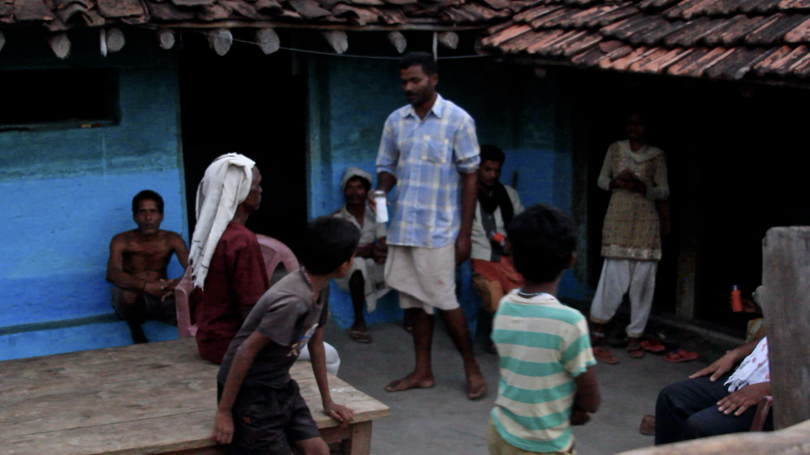
3 · De Golden Circle, begin met Waarom
Simon Sinek (2009) introduceerde een eenvoudig kompas voor overtuigende communicatie: de Golden Circle. Sinek beschrijft dat de meeste organisaties hun verhaal opbouwen van buiten naar binnen, eerst Wat ze maken, dan Hoe ze het maken, en als ze er aan toe komen Waarom. De organisaties die mensen blijvend in beweging brengen, zegt Sinek, doen het andersom: ze beginnen met Waarom.
- Why (Waarom), de overtuiging, het doel, de reden van bestaan. Niet "winst maken", dat is een resultaat. Wel: het probleem in de wereld dat je wil oplossen.
- How (Hoe), de aanpak die jouw organisatie of voorstel onderscheidt van anderen. De principes en de werkwijze.
- What (Wat), de concrete producten, diensten of acties die uit die aanpak voortkomen.
Begin in het hart en werk naar buiten.
Vertaald naar een eindpresentatie betekent dit dat je niet opent met "wij hebben de volgende oplossing bedacht" of "wij hebben deze methode gebruikt". Je opent met de probleem-pijn die je hebt gevalideerd en met de overtuiging die je voorstel draagt. Pas daarna kom je toe aan de aanpak, en daarna aan het concrete voorstel. De volgorde Why → How → What werkt omdat een publiek vanuit waarden beslist en daarna pas rationeel onderbouwt, niet andersom.
Sinek's Golden Circle gaat niet alleen over organisaties. Voor een ORM-eindpresentatie werkt het 1-op-1 op het voorstel dat jij doet aan je opdrachtgever. Welk probleem mag dit voorstel niet voorbij laten gaan? Welke aanpak hebben jullie eraan verbonden en waarom past die hier? En pas dan: wat is het concrete advies of de oplossing?
Harmens pitch aan de BOM begon niet met de kit. Hij begon niet eens met Spark. Hij begon met de bottleneck: de distributiepartij die de oplossing aan eindgebruikers moet leveren, kan er financieel niet meer bij, en daardoor blijven mensen zonder energie. Dat is een Waarom. De Hoe, Access to Finance via DGGF en Atradius, kwam erna. De Wat, de Spark-kit zelf, kwam pas op het eind. De BOM zat in de waarom-laag, de rest werd onderbouwing.
4 · Pitchen met SUCCES, storytelling als drager
De Golden Circle vertelt je waar je een pitch opent. Storytelling vertelt je hoe je hem laadt. Chip en Dan Heath (2007) onderzochten in Made to Stick waarom sommige ideeën blijven hangen en andere binnen 1 dag verdwijnen. Ze destilleerden 6 eigenschappen die zij samenvatten in het acroniem SUCCES:
- Simpel, wat is de kern in 1 zin? Een goede pitch laat zich samenvatten in een uitspraak die je publiek zelf zou kunnen herhalen.
- Unexpected, wat verrast? Onverwachte feiten of perspectieven trekken aandacht en houden hem vast.
- Concreet, geen abstracties, wel beeldende details. Een kit, een man met een boekje, een dorp dat 's avonds verlicht is, niet "verbeterde levensomstandigheden".
- Credible, geloofwaardig. Bewijs, cijfers, citaten van echte gebruikers, of een ervaring die je publiek kan navragen.
- Emotioneel, een verhaal dat raakt blijft hangen. Mensen onthouden hoe iets hen liet voelen, niet wat ze gehoord hebben.
- Stories, verhalen in plaats van argumenten. Een goed gekozen scène doet wat 3 alinea's redenering niet kunnen.
Nancy Duarte (2010) bouwt hierop voort in Resonate: een sterke pitch heeft een herkenbare verhaalboog. Een vertrekpunt (de huidige werkelijkheid), een spanning (wat staat er op het spel?), een wending (het nieuwe inzicht of voorstel) en een eindpunt (de wereld waarin het voorstel is uitgevoerd). Voor een ORM-eindpresentatie hoef je dat niet als toneelstuk neer te zetten, maar je publiek mag wel ergens onderweg de spanning voelen die jij voelde toen je je inzichten in handen kreeg.
Eric Moes, een van de pitch-docenten bij Avans, vat het kort samen: "Het verhaal is de dragende kracht. Onthoud dat de geheime kracht niet in jouw concept zit, maar in de beschrijving van het probleem in combinatie met de oplossing en de klanten. Als je die scherp neer weet te zetten, staat je publiek volledig open voor jouw concept."
Praktisch betekent dit: bedenk niet eerst je slides, maar eerst je verhaal. Wat is de 1 zin die je publiek na afloop moet kunnen navertellen? Welke scène brengt het probleem het scherpst in beeld? Welke 2 cijfers maken het schaalbaar? Welk citaat van een gebruiker maakt het concreet? Pas wanneer dat staat, vertaal je het naar slides. Slides ondersteunen het verhaal, ze zijn niet het verhaal.
Een waarschuwing bij pitchtraining. Je komt regelmatig de stelling tegen dat slechts 7% van overtuigingskracht in de woorden zit, 38% in stem en 55% in lichaamstaal. Dat komt uit oud onderzoek van Albert Mehrabian uit de jaren 60. Mehrabian onderzocht specifiek hoe gevoelens worden overgebracht wanneer woord, stem en lichaamstaal elkaar tegenspreken, niet hoe overtuigend een pitch is. De algemene 7-38-55-claim is een vereenvoudiging die niet houdbaar is. Inhoud doet wel degelijk toe. Werk aan je verhaal én aan je presentatie, niet aan de presentatie ten koste van het verhaal.
5 · Stakeholder-specifiek pitchen
Tot dusver klonk pitchen als 1 verhaal voor 1 publiek. In de praktijk lever je je werk op aan meerdere partijen tegelijk, of na elkaar, en die partijen zoeken niet dezelfde antwoorden. Wat een directielid van een opdrachtgever overtuigt, raakt een eindgebruiker niet. Wat een investeerder geruststelt, kan een operationele partner juist nerveus maken.
Stakeholder-specifiek pitchen betekent dat je het kernverhaal vasthoudt, Why, How, What blijven, maar dat je het laadt met de elementen die voor dit publiek het zwaarst wegen. Voor 3 typische publieken in een ORM-context:
- De opdrachtgever (directie, beleidsmaker, ondernemer) wil weten: wat is het besluit dat ik moet nemen, wat zijn de kosten en baten, wat zijn de risico's? Begin met de aanbeveling, onderbouw met bewijs, sluit af met de eerstvolgende stap.
- De operationele partner of medewerker wil weten: wat verandert er voor mij in mijn werk, kan ik dit aan, wat heb ik nodig om het te laten werken? Begin met de impact op hun dagelijkse praktijk, onderbouw met voorbeelden, sluit af met de ondersteuning die je voorstelt.
- De eindgebruiker of klant wil weten: wat lost dit voor mij op, wat kost het mij, is het te vertrouwen? Begin met de pijn die hij of zij herkent, onderbouw met concreet gebruik, sluit af met de eerste eenvoudige stap.
Het verschil zit niet in de feiten, die zijn dezelfde. Het zit in welke feiten je in welke volgorde laat zien, en in welke taal je gebruikt. Een investeerder leest "rendement op de lange termijn" anders dan "voor de gemeenschap betekent dit…". Beide kunnen waar zijn over hetzelfde voorstel.
Een belangrijk neveneffect: doordat je je voorstel meerdere keren in meerdere registers vertelt, leer je zelf ook beter wat de kern is. Wat in alle versies blijft staan, is je echte kernboodschap. Wat alleen in 1 versie staat, is publieksspecifiek.
Naast verschillende publieken kom je ook pitchen voor een toenemend publiek tegen: eerst 1-op-1 met je begeleider, dan voor de stuurgroep van je opdrachtgever, dan voor een directiekamer, en uiteindelijk voor een breder werkveld of een eindpresentatie-jury. Elke schaalstap vraagt verdichting van het verhaal en strenger werk aan de opbouw. Wat in een 1-op-1-gesprek charmant is, een uitweiding, een zijspoor, blokkeert in een 5 minuten-pitch. Train daarom altijd de zwaarste vorm: de korte, gestructureerde versie. De lange, vrije versie ontstaat dan vanzelf wanneer je tijd hebt.
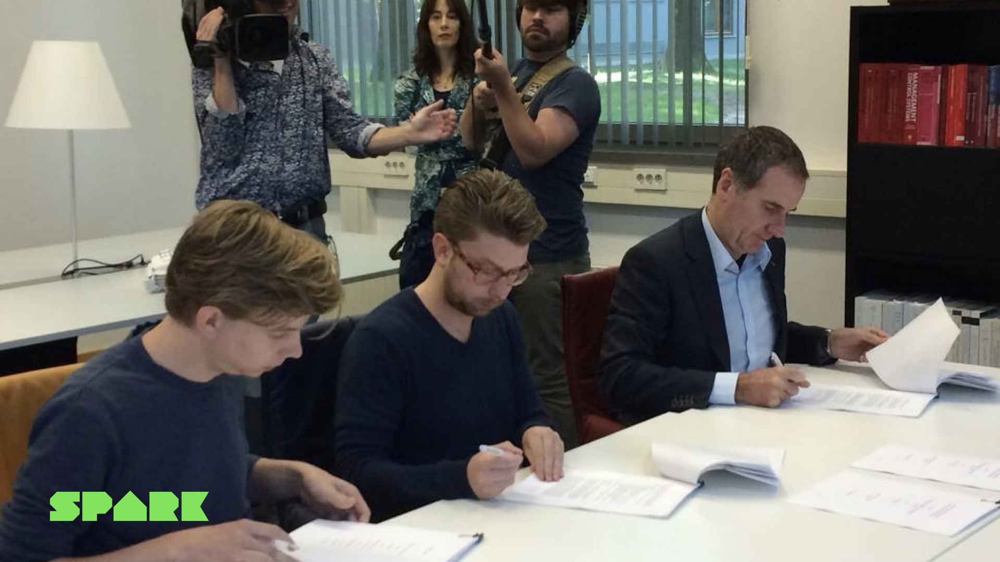
6 · Het Business Model Canvas als opleverdocument
Naast je verbale pitch lever je vaak een document op waarin het complete voorstel staat. Een veelgebruikt format voor een ondernemende oplossing is het Business Model Canvas (Osterwalder & Pigneur, 2010), uit jaar 1 als één-pager-overzicht van een verdienmodel langs 9 bouwblokken: klantsegmenten, waardepropositie, kanalen, klantrelaties, inkomstenstromen, kernactiviteiten, resources, partners en kosten. Voor de waardepropositie zelf wordt vaak het Value Proposition Canvas (Osterwalder e.a., 2014) gebruikt, de zoom-in op de fit tussen klant-jobs/pains/gains en jouw oplossing.
In deze opleverfase is het BMC niet meer een blanco brainstormvel, het is een onderbouwd document waarop elk bouwblok stoelt op het bewijs dat je in hoofdstukken 4 en 5 hebt opgebouwd. De BMC werkt het sterkst als opleverdocument wanneer je per bouwblok zichtbaar maakt: wat is gevalideerd, wat is onderbouwd vermoeden, wat is open aanname? Dat sluit aan op de evidence-based eindbeslissing uit paragraaf 1 van dit hoofdstuk.
Het BMC vervangt je pitch niet, het ondersteunt hem. De pitch trekt de aandacht, maakt de Why concreet en activeert je publiek. Het BMC en het Value Proposition-document geven de opdrachtgever de tijd om het voorstel later rustig na te lezen en intern te delen. Zorg dat beide hetzelfde voorstel vertellen.
De inhoud van het BMC en VPC herschrijft deze reader niet, die staat in Osterwalder en Pigneur (2010) en Osterwalder e.a. (2014) en heb je in jaar 1 gehad. Voor de kennistoets is alleen relevant dat je weet waarvoor deze documenten in de opleverfase gebruikt worden en hoe ze zich tot elkaar verhouden.
7 · Reflecteren met STARR
Opleveren is niet alleen iets aan een opdrachtgever overdragen. Het is ook eerlijk terugkijken op wat het traject jou heeft opgeleverd. De STARR-methode is in het hbo het meest gebruikte format daarvoor. STARR staat voor 5 stappen:
In welke context speelde het zich af?
Wat was jouw rol of opdracht?
Wat heb je concreet gedaan?
Wat is er uitgekomen?
Wat heb je geleerd en wat doe je volgende keer anders?
STARR is bewust niet alleen een verslag van wat er is gebeurd. De eerste 4 stappen beschrijven de gebeurtenis, situatie, taak, actie, resultaat. De laatste stap, Reflectie, is het hart: wat heb je hieraan geleerd? Wat zou je een volgende keer anders doen? Welke nieuwe vaardigheid is hier gegroeid? Welke aanname over jezelf is bevestigd of weerlegd?
De STARR-stappen rusten op een ouder leertheoretisch fundament: de leercyclus van Kolb (1984). Kolb beschreef leren als een doorlopende cyclus van concrete ervaring → reflectie → conceptualisering (algemene les eruit trekken) → toepassing in een volgende situatie. STARR is in feite een gestructureerde manier om die cyclus 1 keer rond te maken. Voor de kennistoets hoef je Kolb niet diep te kennen, alleen dat hij de achtergrond vormt waar STARR op stoelt.
Een paar werkbare principes voor de R van Reflectie maken het verschil tussen een sterke en een matige reflectie:
- Begin met een specifiek moment, niet met een algemene observatie. "Tijdens het derde klantinterview merkte ik dat ik bleef sturen naar mijn oplossing" zegt meer dan "ik heb geleerd dat ik beter moet luisteren".
- Benoem een obstakel. Groei ontstaat in de wrijving. Wat ging er mis, wat lukte niet, waar zat de twijfel?
- Onderscheid vaardigheid van competentie. Een vaardigheid is de losse handeling (een interview afnemen). Een competentie is de combinatie van gedrag, kennis en houding in context (weten wanneer en hoe je een interview inzet, en je laten leiden door wat je hoort).
- Wees authentiek. Een reflectie hoeft niet glad te zijn, ze moet kloppen. Een opdrachtgever, een examinator of een toekomstige werkgever herkent een glanzende reflectie zonder houvast meteen.
- Laat zien dat je iets meeneemt. Een goede reflectie eindigt met wat je een volgende keer concreet anders zou doen, niet als belofte, als geleerde les die je al ergens kunt toepassen.
Spark vandaag, meervoudige waarde in cijfers
Het einde van een traject is een goed moment om de bredere uitkomst zichtbaar te maken. Voor Spark zien de cijfers van 2024 er als volgt uit: van een mayonaiseflesje tot grootschalige distributie in Afrika.
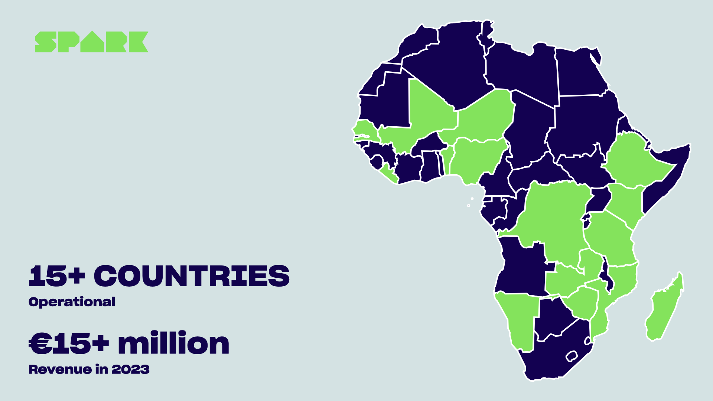
- ruim 800.000 mensen bereikt met toegang tot energie
- meer dan 150.000 verkochte solar-kits
- meer dan 250.000 ton CO2 vermeden ten opzichte van kerosine en hout
- €15+ miljoen omzet, actief in 15+ landen in Sub-Sahara Afrika
Cijfers: Spark, 2024.
Het rake aan deze lijst is niet dat de getallen groot zijn. Het rake is dat ze in 3 dimensies tegelijk kloppen. Ruim 800.000 mensen bereikt is sociaal. Meer dan 250.000 ton vermeden CO2 is ecologisch. Ruim €15 miljoen omzet is economisch. Geen van de 3 is gesubsidieerd door de andere 2, ze ondersteunen elkaar. Dat is wat Porter en Kramer (2011) Creating Shared Value noemen, in cijfers.
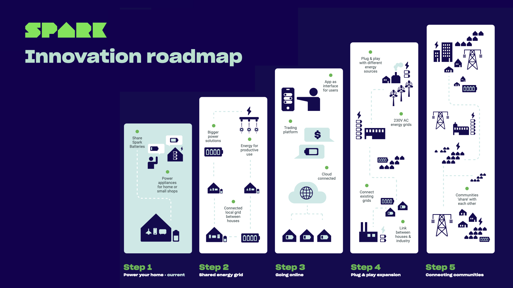
Het is een mooi slotbeeld voor deze reader. De 6 stappen die je in deze reader hebt geleerd, hebben Spark niet alleen tot een werkend bedrijf gemaakt, ze hebben Spark in staat gesteld onderweg te blijven. Wat Harmen in een TEDx-talk in 2025 als kernboodschap meegaf:
Een commercieel schaalbare organisatie is een middel, geen doel. Net zoals het mayonaiseflesje dat Marcel in 2011 in elkaar soldeerde geen doel was, het was een middel om het verhaal vast te kunnen pakken. Harmen van Heist, TEDx Veemarkt 2025
Dat is uiteindelijk waar deze 6 hoofdstukken naartoe werken. Een sterke methode is geen doel op zich. Klant- en probleemonderzoek, validatie, prototyping, testen, opleveren, reflecteren, het zijn middelen om iets in de wereld te brengen dat klopt voor de mensen voor wie je het doet. Wat dat "iets" precies wordt, ontdek je onderweg.
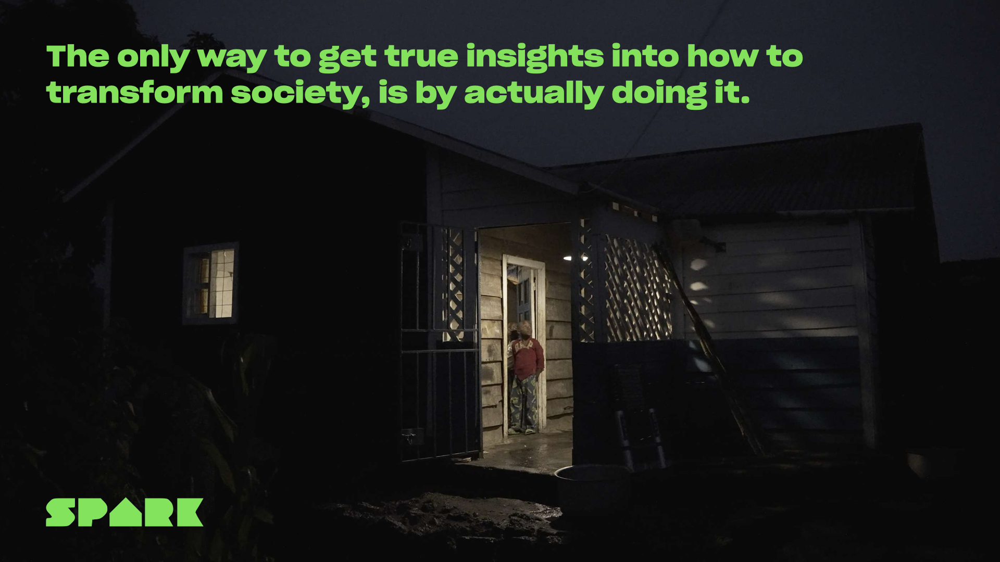
Veelgemaakte fouten in deze fase
- Met de Wat openen. "Wij hebben deze oplossing bedacht." Je publiek wil eerst weten waarom. Begin in het hart van de Golden Circle.
- Meervoudige waarde claimen zonder meten. "Onze oplossing heeft sociale impact" zonder cijfer of citaat is een belofte, geen bewijs. Triple-P werkt alleen als je de 3 dimensies ook werkelijk doormeet.
- Hetzelfde verhaal voor elke stakeholder. Wat een investeerder overtuigt, raakt een eindgebruiker niet. Pas inhoud en taal aan op het publiek, de kern blijft, de invalshoek schuift.
- Slides als verhaal. Je publiek leest mee in plaats van te luisteren. Bedenk eerst je verhaal, vertaal pas daarna naar slides.
- Risico's en open punten verstoppen. Eerlijke benoeming maakt je voorstel sterker, niet zwakker. Een opdrachtgever heeft liever 3 open punten die je benoemt dan 1 onbenoemd punt dat hij later ontdekt.
- Reflecteren als opsomming van uren en taken. "Ik heb 10 interviews gedaan en 3 prototypes gebouwd" is een verslag, geen reflectie. Reflectie laat zien wie je bent geworden, niet wat je hebt afgevinkt.
- Glanzende reflectie zonder houvast. Een reflectie zonder obstakel, zonder twijfel, zonder iets dat misging, klinkt als de wervingstekst van je eigen LinkedIn. Authenticiteit overtuigt sterker dan perfectie.
- Mehrabian 7-38-55 als pitch-feit gebruiken. Inhoud doet wel degelijk toe, werk aan je verhaal, niet alleen aan je houding.
- De evidence-based eindbeslissing overslaan. Een aanbeveling zonder zichtbare bewijslast is een mening. Maak per kritieke aanname expliciet hoe sterk je bewijs is.
In de opleverfase kun je 2 AI-tools inzetten om je inzichten samen te brengen:
- BMC Generator, helpt je gevalideerde inzichten te vertalen naar een actueel Business Model Canvas. Let op: de output is een vertrekpunt, presenteer je BMC altijd zelf netjes en overzichtelijk in je eindrapport.
- Impact Scan, helpt je de meervoudige waarde van je voorstel zichtbaar te maken langs economische, sociale en ecologische dimensies.
Voor het aanscherpen van een pitch is een gewone AI-chat een prima sparringpartner: vraag om feedback op je openings-Why, op de SUCCES-checklist (welke S of C ontbreekt nog?), of om alternatieve formuleringen voor verschillende publieken. Behandel de output als ontwerp-input, niet als eindversie.
Voor je STARR-reflectie geldt het tegenovergestelde advies: schrijf eerst zelf, dan pas eventueel laten aanscherpen. Een AI kan een reflectie gladstrijken zonder iets toe te voegen. Authenticiteit komt uit jouw concrete moment, niet uit een gepolijste herformulering.
Samenvatting + checklist
Wat moet je na dit hoofdstuk kunnen?
- Uitleggen waarom een eindpresentatie geen verslag is van je proces, maar een onderbouwd voorstel rond een te nemen beslissing
- De evidence-based eindbeslissing toelichten en aansluiten op Deel 2.4 Beslissen (p. 59-64)
- 3 categorieën van bewijslast in een oplevering onderscheiden: gevalideerd, onderbouwd vermoeden, open aanname
- De begrippen triple bottom line (Elkington, 1997) en Triple-P (People, Planet, Profit) noemen en uitleggen
- Creating Shared Value (Porter & Kramer, 2011) onderscheiden van filantropie of losse duurzaamheidsacties
- Uitleggen waarom meervoudige waarde idealiter geen trade-off is maar complementair
- De Golden Circle (Sinek, 2009) uitleggen: Why → How → What, en waarom die volgorde overtuigender werkt
- De SUCCES-formule (Heath & Heath, 2007) opsommen: Simpel, Unexpected, Concreet, Credible, Emotioneel, Stories
- Uitleggen waarom het verhaal de dragende kracht is en slides ondersteunend zijn, niet andersom
- De claim Mehrabian 7-38-55% kritisch kunnen plaatsen: oorspronkelijk over tegenstrijdige signalen, niet over overtuigingskracht in het algemeen
- Stakeholder-specifiek pitchen toepassen: kern vasthouden, invalshoek aanpassen aan opdrachtgever, operationele partner en eindgebruiker
- Het principe "pitchen aan toenemend publiek" toelichten (1-op-1 → directie → werkveld) en uitleggen waarom je altijd de zwaarste vorm traint
- De rol van het Business Model Canvas en het Value Proposition Canvas als opleverdocumenten beschrijven, niet als brainstormvel, maar als onderbouwd voorstel
- De STARR-methode in 5 stappen uitleggen: Situatie, Taak, Actie, Resultaat, Reflectie, met nadruk op de laatste R
- De leercyclus van Kolb (1984) noemen als achtergrond bij STARR: concrete ervaring → reflectie → conceptualisering → toepassing
- 5 principes voor een sterke reflectie toepassen: specifiek moment, obstakel benoemen, vaardigheid versus competentie, authenticiteit, geleerde les meenemen
- Veelgemaakte fouten bij oplevering en reflectie herkennen en vermijden
Oefenvragen voor de kennistoets
20 vragen in MC-vorm, vergelijkbaar met wat je op de toets kunt verwachten. Klik op een vraag om het antwoord met uitleg te zien.
1. Wat is volgens Sinek (2009) de juiste volgorde in een overtuigende pitch?
- What → How → Why, eerst het product laten zien, dan de aanpak, dan de overtuiging.
- Why → How → What, beginnen met de overtuiging, dan de aanpak, dan het concrete voorstel.
- How → What → Why, eerst de methode, dan het product, dan de reden.
- Er is geen vaste volgorde, het hangt volledig af van de spreker.
2. Welke 3 dimensies vormen de triple bottom line (Elkington, 1997)?
- Productiviteit, Prestaties, Prijs.
- People, Planet, Profit, sociaal, ecologisch en economisch.
- Probleem, Proces, Product.
- Partner, Personeel, Plek.
3. Wat is het verschil tussen Creating Shared Value (Porter & Kramer, 2011) en filantropie?
- Filantropie is gericht op winst en CSV op verlies.
- Bij filantropie verdient een bedrijf eerst geld en geeft daarna een deel weg; bij CSV wordt economische waarde gecreëerd dóór een maatschappelijk probleem op te lossen, het zit in de kern van het verdienmodel.
- Er is geen verschil, beide termen worden door elkaar gebruikt.
- CSV is alleen van toepassing op ngo's en filantropie alleen op bedrijven.
4. Waarvoor staat het acroniem SUCCES (Heath & Heath, 2007)?
- Simpel, Uniek, Compleet, Creatief, Eerlijk, Snel.
- Simpel, Unexpected (onverwacht), Concreet, Credible (geloofwaardig), Emotioneel, Stories (verhalen).
- Strategisch, Uitdagend, Cohesief, Coherent, Effectief, Specifiek.
- Structuur, Urgentie, Cijfers, Context, Empathie, Slot.
5. Wat is een evidence-based eindbeslissing?
- Een beslissing die alleen op basis van financiële cijfers wordt genomen.
- Een beslissing waarbij per kritieke aanname zichtbaar is hoe sterk het bewijs is, wat je vertrouwen erin is, en welke beslissing je daarop baseert.
- Een beslissing die uitsluitend door de directeur wordt genomen.
- Een beslissing op basis van het gevoel van het team.
6. Wat doe je volgens dit hoofdstuk met "open aannames" in je eindoplevering?
- Verzwijgen, om de aanbeveling sterker te laten klinken.
- Presenteren als feit, omdat je opdrachtgever anders niet meegaat.
- Expliciet benoemen als risico, zodat je opdrachtgever er rekening mee kan houden in de vervolgkeuze.
- Schrappen uit het voorstel, wat niet getoetst is, hoort er niet in.
7. Wat bedoelen Porter en Kramer (2011) wanneer ze zeggen dat shared value "in de kern van het verdienmodel" zit?
- Dat het bedrijf 10% van de winst aan goede doelen geeft.
- Dat de maatschappelijke bijdrage een bijproduct is van het verdienmodel.
- Dat het bedrijf economische waarde creëert juist dóór een maatschappelijk probleem op te lossen, sociaal effect en winst versterken elkaar in plaats van elkaar te kosten.
- Dat het bedrijf alleen non-profit is.
8. Waarom is het belangrijk je pitch aan te passen aan verschillende stakeholders?
- Omdat anders je opdrachtgever zich beledigd voelt.
- Omdat verschillende publieken niet dezelfde antwoorden zoeken: een directielid wil de aanbeveling, een operationele partner wil weten wat er voor hen verandert, een eindgebruiker wil weten wat het voor hem oplost.
- Omdat het in de wet verplicht is.
- Omdat dat het aantal slides verkort.
9. Welke aanpak past het beste bij "pitchen aan toenemend publiek"?
- Eerst een lange, vrije versie voorbereiden en daarna inkorten naarmate het publiek groter wordt.
- Altijd dezelfde 30-minuten-versie geven, ongeacht het publiek.
- Eerst de zwaarste vorm trainen, de korte, strakke pitch, zodat een uitgebreidere versie vanzelf ontstaat wanneer er tijd is.
- Geen voorbereiding, omdat improvisatie authentieker is.
10. Wat staat de R in STARR voor?
- Resultaat en Reflectie, eerst beschrijven wat er uitkwam, daarna wat je hieruit hebt geleerd en wat je een volgende keer anders doet.
- Reputatie en Risico.
- Rendement en Realisme.
- Ruimte en Regels.
11. Welk leertheoretisch fundament ligt onder STARR?
- De Maslow-piramide (1943).
- De leercyclus van Kolb (1984): concrete ervaring → reflectie → conceptualisering → toepassing.
- Het Big Five-persoonlijkheidsmodel.
- De cognitieve dissonantie-theorie van Festinger.
12. Welke uitspraak over de "Mehrabian-claim" (7% woorden, 38% stem, 55% lichaamstaal) klopt het best?
- Het is een bewezen wetenschappelijke wet voor elke vorm van communicatie.
- Het komt uit oud onderzoek van Mehrabian (jaren 60) naar het overbrengen van gevoelens wanneer woord, stem en lichaamstaal elkaar tegenspreken. De algemene 7-38-55-claim is een vereenvoudiging die niet houdbaar is, inhoud doet wel degelijk toe.
- Het is door Sinek geïntroduceerd.
- Het geldt alleen voor digitale communicatie.
13. Welke opening past het sterkst bij de Golden Circle?
- "Wij hebben een nieuwe app ontwikkeld die…"
- "Met onze methode, gebaseerd op design thinking, kunnen we…"
- "Elk jaar zijn 2,1 miljard mensen nog steeds afhankelijk van kerosine voor verlichting, dit voorstel pakt dat aan."
- "Op slide 23 ziet u onze omzetprognose…"
14. Wat is de centrale boodschap van Eric Moes' uitspraak "het verhaal is de dragende kracht"?
- Dat je zoveel mogelijk verhalen in je pitch moet stoppen.
- Dat de kracht van een pitch niet zit in het concept zelf, maar in de scherpte waarmee probleem, oplossing en klant worden neergezet, slides ondersteunen het verhaal, ze zijn niet het verhaal.
- Dat alleen ervaren verhalenvertellers een goede pitch kunnen geven.
- Dat een pitch altijd persoonlijk en niet zakelijk moet zijn.
15. In de opleverfase werkt het Business Model Canvas het sterkst als…
- … een blanco brainstormvel waarop het team alles kan opschrijven wat in hun hoofd zit.
- … een onderbouwd document waarop per bouwblok zichtbaar is wat gevalideerd is, wat onderbouwd vermoeden is en wat open aanname is.
- … een vervanging voor de pitch.
- … een document dat alleen voor het team intern is bedoeld en niet voor de opdrachtgever.
16. Welke eigenschap maakt een STARR-reflectie het sterkst?
- Een opsomming van alle activiteiten en uren die je hebt besteed.
- Een algemene observatie zoals "ik heb geleerd beter samen te werken".
- Een specifiek moment, een benoemd obstakel, een eerlijk resultaat en een concrete les die je in een volgende situatie meeneemt.
- Een reflectie zonder twijfel of obstakel, om jezelf goed neer te zetten.
17. Wat is het verschil tussen vaardigheid en competentie volgens dit hoofdstuk?
- Vaardigheid is theoretisch, competentie is praktisch.
- Een vaardigheid is de losse handeling (een interview afnemen); een competentie is de combinatie van gedrag, kennis en houding in context (weten wanneer en hoe je een interview inzet en je laten leiden door wat je hoort).
- Vaardigheid is voor studenten, competentie is voor professionals.
- Er is geen verschil, beide termen zijn synoniem.
18. Welke aanpak past het beste bij meervoudige waarde-claims?
- Algemene beweringen over impact gebruiken, omdat opdrachtgevers daar het meest gevoelig voor zijn.
- Alleen claims doen op dimensies die je ook werkelijk hebt doorgemeten, een claim zonder cijfer is een belofte, geen bewijs.
- Sociale en ecologische impact alleen noemen wanneer de opdrachtgever er expliciet om vraagt.
- Economische, sociale en ecologische waarde altijd als trade-off presenteren, zodat het realistischer overkomt.
19. Wat is het verschil tussen een evidence-based eindbeslissing en een mening?
- Er is geen verschil, beide drukken een voorkeur uit.
- Een mening is sterker omdat ze persoonlijke betrokkenheid laat zien.
- Een evidence-based eindbeslissing maakt expliciet welke bewijslast onder de aanbeveling ligt, hoe sterk die is en welke aannames nog open staan, een mening laat dat onuitgesproken.
- Een evidence-based beslissing kan alleen door een directie worden genomen.
20. Welke uitspraak over storytelling in een eindpitch klopt het best?
- Storytelling vervangt het bewijs, een goed verhaal is genoeg.
- Storytelling is een vorm-trucje dat losstaat van de inhoud.
- Storytelling is een drager: het brengt het probleem, de oplossing en de klant zo scherp in beeld dat een publiek openstaat voor het concept. Onder het verhaal ligt de bewijslast, niet erbóven.
- Storytelling werkt alleen in marketing, niet in zakelijke voorstellen.
Toetswijzer voor dit hoofdstuk
Voor de kennistoets moet je de inhoud van dit hoofdstuk kennen: begrippen, modellen, methoden, veelgemaakte fouten en de checklist hierboven. Uit Businessideeën testen hoort Deel 4.1 Valkuilen vermijden (p. 313) bij dit hoofdstuk. Deel 2.4 Beslissen (p. 59-64) heb je in jaar 1 gehad en kun je kort opfrissen. De overige titels in de bibliografie hieronder staan erbij voor wie zich verder wil verdiepen.
Bronnen
Toetsstof uit Businessideeën testen (nieuw in jaar 2)
- Bland, D. J., & Osterwalder, A. (2020). Businessideeën testen. Management Impact. ISBN 9789462763838. Deel 4.1 Valkuilen vermijden (p. 313), onderdeel van Deel 4 Mindset. Online via Avans Boom Portaal of in je eigen exemplaar uit jaar 1.
Aanbevolen opfrissing uit jaar 1
- Bland, D. J., & Osterwalder, A. (2020). Businessideeën testen. Management Impact. ISBN 9789462763838. Deel 2.4 Beslissen (p. 59-64). Online via Avans Boom Portaal of in je eigen exemplaar uit jaar 1.
Verder lezen, voor wie zich verder wil verdiepen
- Duarte, N. (2010). Resonate: Present visual stories that transform audiences. Wiley.
- Elkington, J. (1997). Cannibals with forks: The triple bottom line of 21st century business. Capstone.
- Heath, C., & Heath, D. (2007). Made to stick: Why some ideas survive and others die. Random House.
- Kolb, D. A. (1984). Experiential learning: Experience as the source of learning and development. Prentice Hall.
- Osterwalder, A., & Pigneur, Y. (2010). Business model generation. Wiley.
- Osterwalder, A., Pigneur, Y., Bernarda, G., & Smith, A. (2014). Value proposition design: How to create products and services customers want. Wiley.
- Porter, M. E., & Kramer, M. R. (2011). Creating shared value. Harvard Business Review, 89(1-2), 62-77.
- Sinek, S. (2009). Start with why: How great leaders inspire everyone to take action. Portfolio.
- Van Heist, H. (2025). Een mayonaiseflesje dat 1 miljoen mensen van energie voorziet [TEDx-talk]. TEDx Veemarkt.
- Van Heist, H. (z.d.). [Interview Brabants Dagblad: "3 jongens uit Den Bosch veroveren Afrika met toegang tot energie"]. Brabants Dagblad.